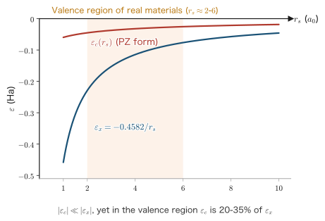
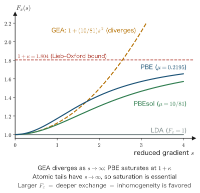

Chapter 11Exchange-Correlation Functionals
When we derived the Kohn–Sham (KS) equations in the previous chapter, all the difficulties of the many-electron problem were pushed into a single functional, the exchange-correlation energy $E_{xc}[\rho]$. The formalism is exact, and the form of the equations, the expression for the total energy, and the self-consistent field (SCF) procedure were all fixed without asking what $E_{xc}$ actually contains. However, nobody knows the exact form of $E_{xc}[\rho]$—if anyone did, the many-body problem would already be solved. Therefore the accuracy of a first-principles calculation is determined solely by how we approximate this last unknown term. In this chapter we first construct the simplest approximation, the local density approximation (LDA), and then answer the question “why does such a crude approximation work so well?” by means of the adiabatic connection and the concept of the exchange-correlation hole. This section is the theoretical core of the chapter, and all subsequent functional development rests on it. We then derive the mathematical constraints that the exact functional must satisfy (the scaling laws, the Lieb–Oxford lower bound, and the elimination of self-interaction), and, treating them as “exam questions,” assemble the PBE functional, a representative generalized gradient approximation (GGA) designed around them, without using a single empirical parameter. Finally, we survey “Jacob's ladder,” which continues on to hybrid functionals, meta-GGAs, van der Waals functionals, and DFT+U, and we treat the Harris functional as an application of the variational character of the KS method. When we compute the electronic structure of solids from Chapter 12 onward, what we actually choose by hand is the name of one of the functionals that appear in this chapter.
- The construction of the local density approximation $E_{xc}^{\mathrm{LDA}}[\rho]=\int\rho\,\varepsilon_{xc}(\rho)\dd^3r$, the derivation of the exchange-correlation potential $v_{xc}=\varepsilon_{xc}+\rho\,\dd\varepsilon_{xc}/\dd\rho$, and the spin-polarized version (LSDA)
- A complete derivation of the adiabatic connection (coupling-constant integration): applying the Hellmann–Feynman theorem to the $\lambda$ derivative to obtain $E_{xc}=\int_0^1\dd\lambda\braket{\Psi_\lambda|\hat V_{ee}|\Psi_\lambda}-E_{\mathrm{H}}$
- The representation of $E_{xc}$ through the exchange-correlation hole $\bar n_{xc}(\rr,\rr')$, the sum rules $\int n_x\dd^3r'=-1$ and $\int n_c\dd^3r'=0$, and the derivation that $E_{xc}$ depends only on the spherical average of the hole—this is the reason for the success of the LDA
- Exact constraints: the proof of uniform scaling $E_x[\rho_\gamma]=\gamma E_x[\rho]$, the scaling inequality for correlation, the Lieb–Oxford lower bound, the Levy–Perdew virial-type relation, and the self-interaction-free condition
- The failure of the gradient expansion (GEA) and the revival of the GGA by a real-space cutoff, the reduced (dimensionless) density gradient $s$, and how each parameter of the PBE exchange enhancement factor $F_x(s)=1+\kappa-\kappa/(1+\mu s^2/\kappa)$ is fixed by exact conditions
- Numerical comparison of the LDA and the GGA (exchange-correlation energies of atoms, overbinding of molecules, lattice constants of solids, the ground state of bcc iron) and examples where the GGA fails
- Jacob's ladder: meta-GGAs, hybrid functionals (the basis for the mixing ratio from the adiabatic connection), HSE, vdW-DF and DFT-D, and DFT+U
- The proof that the error of the Harris functional $E_{\mathrm{Harris}}[\rho_{\mathrm{in}}]$ is second order in $\delta\rho$, and non-self-consistent calculations and the local force theorem
In this chapter, too, we use Hartree atomic units ($\hbar=m_e=e=4\pi\varepsilon_0=1$; see Chapter 1). The unit of energy is the hartree (Ha), with $1\ \mathrm{Ha}=27.2114\ \mathrm{eV}$, and the unit of length is the Bohr radius $a_0=0.529177\ \text{Å}$. In the solid-state literature it is customary to express lattice constants in Å and bulk moduli in GPa, so in the sections on numerical comparison we give those values alongside.
11.1 The Local Density Approximation (LDA)
We now construct an approximation that brings the exchange-correlation energy of the homogeneous electron gas, obtained in Chapter 7 exactly (or numerically with extremely high accuracy), into inhomogeneous systems “locally.” What we obtain is the explicit form of $E_{xc}$ and a closed expression for the exchange-correlation potential $v_{xc}(\rr)$ to be inserted into the KS equations.
11.1.1 The idea: locally replacing the density by a homogeneous electron gas
The jellium (homogeneous electron gas) treated in Chapter 7 was an idealized system in which the density $\rho$ is spatially constant. For this system, the exchange-correlation energy per electron
$$ \begin{equation} \varepsilon_{xc}(\rho)=\varepsilon_{x}(\rho)+\varepsilon_{c}(\rho) \label{eq:11-eps-xc-def} \end{equation} $$is known as a function of a single number, the density $\rho$. The exchange part $\varepsilon_x$ is given analytically, and the correlation part $\varepsilon_c$ is given by quantum Monte Carlo numerical calculations together with an analytical fit to them (Section 11.1.3).
Now consider a system whose density varies from place to place, like real atoms, molecules, and solids. If the spatial variation of the density is sufficiently slow, then within a small volume element $\Delta V$ around the point $\rr$ the density can be regarded as almost constant, $\rho(\rr)$. We therefore approximate the electrons in this volume element as “being in a homogeneous electron gas of density $\rho(\rr)$,” and estimate their exchange-correlation energy as
$$ \begin{equation} \Delta E_{xc}\simeq \underbrace{\rho(\rr)\Delta V}_{\text{number of electrons in this volume}}\times\underbrace{\varepsilon_{xc}\bigl(\rho(\rr)\bigr)}_{\text{per electron}} \label{eq:11-lda-cell} \end{equation} $$. For the whole system we simply sum these up, and in the limit $\Delta V\to0$ the sum becomes an integral.
Definition: The local density approximation (LDA)
$$ \begin{equation} E_{xc}^{\mathrm{LDA}}[\rho]=\int \dd^3r\;\rho(\rr)\,\varepsilon_{xc}\bigl(\rho(\rr)\bigr) \label{eq:11-lda-def} \end{equation} $$Here $\varepsilon_{xc}(\bar\rho)$ is the exchange-correlation energy per electron of a homogeneous electron gas of density $\bar\rho$. Note that $\varepsilon_{xc}$ is not a “function of a function” but an ordinary function of one variable. The nontrivial character of the functional lies only in substituting $\rho(\rr)$ for its argument and integrating.
Caution: The meaning of “local,” and the distinction between $\varepsilon_{xc}$ and the “energy density”
$E_{xc}^{\mathrm{LDA}}$ is a local functional. That is, the integrand at a point $\rr$ is determined only by the density $\rho(\rr)$ at that point, and depends neither on the density at neighboring points nor on the gradient of the density. By contrast, the Hartree energy $E_{\mathrm{H}}$, for example, is a nonlocal functional, because it multiplies $\rho(\rr)$ and $\rho(\rr')$ and integrates twice. The true $E_{xc}$ is also nonlocal in nature (as we will see in Section 11.2, an electron at $\rr$ digs a “hole” so that other electrons do not come to $\rr'$, and this hole has a finite extent). The LDA is an approximation that discards this nonlocality entirely.
Also, $\varepsilon_{xc}(\rho)$ is the energy per electron (unit: Ha), whereas the energy per unit volume (the energy density, unit: Ha/$a_0^3$) is $\rho\,\varepsilon_{xc}(\rho)$. Some references write the latter as $\varepsilon_{xc}$, so it is a good habit to tell them apart by the form of the expression (whether $\rho$ is multiplied or not).
11.1.2 Exchange part: the Dirac exchange energy density
We first write down the exchange part. In Chapter 7 we found that the exchange energy per electron of the homogeneous electron gas is
$$ \begin{equation} \varepsilon_x(\rho)=-\frac{3k_F}{4\pi}, \qquad k_F=\bigl(3\pi^2\rho\bigr)^{1/3} \label{eq:11-eps-x-kf} \end{equation} $$($k_F$ is the Fermi wave number, Chapter 3). We rewrite this as an expression in the density alone. Substituting $k_F$, we obtain
\begin{align} \varepsilon_x(\rho) &=-\frac{3}{4\pi}\bigl(3\pi^2\rho\bigr)^{1/3} \label{eq:11-epsx-1}\\ &=-\frac{3}{4}\left(\frac{3\pi^2}{\pi^3}\right)^{1/3}\rho^{1/3} \label{eq:11-epsx-2}\\ &=-\frac{3}{4}\left(\frac{3}{\pi}\right)^{1/3}\rho^{1/3} \;\equiv\;-C_x\,\rho^{1/3}. \label{eq:11-epsx-3} \end{align}From Eq. \eqref{eq:11-epsx-1} to Eq. \eqref{eq:11-epsx-2}, we moved the prefactor $1/\pi$ inside the cube root ($1/\pi=(1/\pi^3)^{1/3}$). In Eq. \eqref{eq:11-epsx-3}, we canceled $3\pi^2/\pi^3=3/\pi$. The constant is
$$ \begin{equation} C_x=\frac{3}{4}\left(\frac{3}{\pi}\right)^{1/3}=0.738559\ldots \label{eq:11-cx} \end{equation} $$Therefore the LDA exchange energy is
$$ \begin{equation} E_x^{\mathrm{LDA}}[\rho]=\int \dd^3r\,\rho(\rr)\varepsilon_x(\rho(\rr)) =-C_x\int \dd^3r\;\rho^{4/3}(\rr). \label{eq:11-ex-lda} \end{equation} $$Historically, this form was derived by Dirac in 1930 as a correction to the Thomas–Fermi model, and it is called Dirac exchange or (when the coefficient is made adjustable) Slater's $X\alpha$ exchange. The exponent 4/3 in $\rho^{4/3}$ comes from multiplying $\varepsilon_x\propto\rho^{1/3}$ ($\propto k_F\propto$ inverse length) by the density $\rho$.
Physical Meaning: Why $\rho^{1/3}$?
The exchange energy is “the gain in Coulomb energy that results from electrons of the same spin avoiding one another.” Its magnitude is of the order of $-1/(\text{typical interelectron distance})$ (per electron), and the interelectron distance is proportional to $\rho^{-1/3}$. Therefore $\varepsilon_x\sim-\rho^{1/3}$. The coefficient $-\tfrac34(3/\pi)^{1/3}$ in Eq. \eqref{eq:11-epsx-3} is the result of making this dimensional estimate exact by means of the Fermi sphere calculation. Using the density parameter $r_s$ (the sphere of radius $r_s$ has a volume equal to the volume per electron, Chapter 3), we have $\rho=3/(4\pi r_s^3)$, so
$$ \varepsilon_x=-\frac{3}{4}\left(\frac{3}{\pi}\right)^{1/3}\left(\frac{3}{4\pi}\right)^{1/3}\frac{1}{r_s} =-\frac{0.458165}{r_s}\ \mathrm{Ha} $$and the picture of the “inverse of the interelectron distance” is directly visible.
11.1.3 Correlation part: quantum Monte Carlo and its fits
There is no closed analytic form for the correlation energy $\varepsilon_c(\rho)$. As we saw in Chapter 7, the asymptotic forms are known in the high-density limit ($r_s\to0$) and the low-density limit ($r_s\to\infty$) by perturbative and classical arguments, respectively. Everything below is in Hartree units—in Chapter 7 we wrote the same results in Rydberg units (as in $\varepsilon_c\simeq0.0622\ln r_s-0.094$ Ry), so note that the coefficients are exactly half as large:
\begin{align} \varepsilon_c(r_s)&\to A\ln r_s+B+O(r_s\ln r_s), \qquad A=\frac{1-\ln 2}{\pi^2}=0.031091,\quad B\simeq-0.0469 &&(r_s\to0)\quad[\mathrm{Ha}] \label{eq:11-ec-high}\\ \varepsilon_c(r_s)&\to-\frac{d_0}{r_s}+\frac{d_1}{r_s^{3/2}}+\cdots, \qquad d_0\simeq0.4400,\quad d_1\simeq1.325 &&(r_s\to\infty)\quad[\mathrm{Ha}] \label{eq:11-ec-low} \end{align}The high-density result \eqref{eq:11-ec-high} is the Gell-Mann–Brueckner result from the RPA (random-phase approximation), and the low-density result \eqref{eq:11-ec-low} is a Madelung-type evaluation in the limit in which the electrons crystallize (the Wigner crystal). (Subtracting the exchange term $-0.916/r_s$ Ry from the total energy of the Wigner crystal in Chapter 7, $E/N\simeq-1.792/r_s+2.66/r_s^{3/2}$ Ry, and converting to Ha, gives $d_0\simeq0.438$ and $d_1\simeq1.33$.) The valence electrons of real materials lie in the intermediate region $r_s\simeq2$–$6$, where neither asymptotic form can be used.
This intermediate region was filled in by the quantum Monte Carlo (QMC) calculations of Ceperley and Alder. They used a trial wave function of Slater–Jastrow type
$$ \begin{equation} \Psi_{\mathrm{QMC}}=\exp\!\left[-\sum_{i\lt j}^{N}u\bigl(\abs{\rr_i-\rr_j}\bigr)\right]\; \det\bigl|\varphi_1\varphi_2\cdots\varphi_N\bigr| \label{eq:11-slater-jastrow} \end{equation} $$The determinant part is the Slater determinant of Chapter 5 (which accounts for antisymmetry and Pauli correlation), and the exponential factor (the Jastrow factor) makes the wave function smaller as two electrons approach each other, thereby incorporating the Coulomb correlation that a determinant cannot represent. Starting from this trial function, they obtained the ground-state energy stochastically, subtracted the known kinetic and exchange energies from it, and determined $\varepsilon_c(r_s)$ at a few points.
To use the numerical data at a few points in the KS equations, we must interpolate them as a smooth function of $r_s$. There are two representative interpolation forms.
Definition: Analytic fits of the correlation energy density
(a) The Perdew–Zunger (PZ81) form—a compact form that switches the expression between the low-density and high-density sides. For the spin-unpolarized case (in Ha units):
$$ \begin{equation} \varepsilon_c(r_s)= \begin{cases} \dfrac{\gamma}{1+\beta_1\sqrt{r_s}+\beta_2 r_s}, & r_s\ge1,\\[2ex] A\ln r_s+B+C r_s\ln r_s+D r_s, & r_s\lt1, \end{cases} \label{eq:11-pz} \end{equation} $$with $\gamma=-0.1423$, $\beta_1=1.0529$, $\beta_2=0.3334$, $A=0.0311$, $B=-0.048$, $C=0.0020$, $D=-0.0116$. The form on the $r_s\ge1$ side is chosen to reproduce correctly the $-d_0/r_s$ behavior of the low-density limit \eqref{eq:11-ec-low}, and the form on the $r_s\lt1$ side to reproduce correctly the logarithm of the high-density limit \eqref{eq:11-ec-high}.
(b) The Vosko–Wilk–Nusair (VWN) form—one that builds the analytic structure of the RPA directly into the functional form. With $x=\sqrt{r_s}$, $X(x)=x^2+bx+c$, and $Q=\sqrt{4c-b^2}$,
$$ \begin{equation} \varepsilon_c=A\left\{\ln\frac{x^2}{X(x)}+\frac{2b}{Q}\arctan\frac{Q}{2x+b} -\frac{bx_0}{X(x_0)}\left[\ln\frac{(x-x_0)^2}{X(x)}+\frac{2(b+2x_0)}{Q}\arctan\frac{Q}{2x+b}\right]\right\} \label{eq:11-vwn} \end{equation} $$The parameters are $A=0.0310907$, $b=3.72744$, $c=12.9352$, $x_0=-0.10498$ (spin-unpolarized). The first term, $\ln(x^2/X)$, accounts for the logarithmic divergence $\ln r_s$ as $r_s\to0$, and the $\arctan$ terms account for the curvature in the intermediate region.
The two give numerically almost the same curve (the difference is about $10^{-4}$ Ha). The more recent Perdew–Wang (PW92) form is also widely used, but its structure is of the same kind. Whether a calculation labeled “LDA” uses PZ or VWN will hardly ever change the results significantly.
| $r_s$ ($a_0$) | $\varepsilon_x$ (Ha) | $\varepsilon_c$ (Ha) | $\abs{\varepsilon_c/\varepsilon_x}$ |
|---|---|---|---|
| 1 | $-0.4582$ | $-0.0596$ | 13.0% |
| 2 | $-0.2291$ | $-0.0451$ | 19.7% |
| 3 | $-0.1527$ | $-0.0372$ | 24.4% |
| 4 | $-0.1145$ | $-0.0321$ | 28.0% |
| 6 | $-0.0764$ | $-0.0255$ | 33.4% |
| 10 | $-0.0458$ | $-0.0186$ | 40.5% |

11.1.4 Derivation of the exchange-correlation potential $v_{xc}^{\mathrm{LDA}}$
What enters the KS equations is not $E_{xc}$ itself but its functional derivative $v_{xc}(\rr)=\delta E_{xc}/\delta\rho(\rr)$ (Chapter 10). We carry this out for the LDA form \eqref{eq:11-lda-def}.
Derivation: Functional derivative of a local functional
$E_{xc}^{\mathrm{LDA}}$ has the form
$$ \begin{equation} E_{xc}^{\mathrm{LDA}}[\rho]=\int \dd^3r\;f\bigl(\rho(\rr)\bigr), \qquad f(\rho)\equiv\rho\,\varepsilon_{xc}(\rho) \label{eq:11-f-def} \end{equation} $$of “simply substituting the density into a function $f$ of one variable and integrating.” We change the density as $\rho\to\rho+\delta\rho$ and keep terms through first order in $\delta\rho$:
\begin{align} \delta E_{xc}^{\mathrm{LDA}} &=\int \dd^3r\;\Bigl[f\bigl(\rho(\rr)+\delta\rho(\rr)\bigr)-f\bigl(\rho(\rr)\bigr)\Bigr] \label{eq:11-fd-1}\\ &=\int \dd^3r\;\Bigl[f'\bigl(\rho(\rr)\bigr)\,\delta\rho(\rr) +\tfrac12 f''\bigl(\rho(\rr)\bigr)\,\delta\rho(\rr)^2+\cdots\Bigr] \label{eq:11-fd-2}\\ &=\int \dd^3r\;f'\bigl(\rho(\rr)\bigr)\,\delta\rho(\rr)+O(\delta\rho^2). \label{eq:11-fd-3} \end{align}Eq. \eqref{eq:11-fd-1} is the difference by definition. In Eq. \eqref{eq:11-fd-2}, at each point $\rr$ we Taylor-expanded the function $f$ of one variable around $\rho(\rr)$ (the expansion can be done independently at each point inside the integral because the argument of $f$ is only the density at that point—this is the advantage of being “local”). In Eq. \eqref{eq:11-fd-3}, we dropped the terms of second and higher order. Comparing with the definition of the functional derivative, $\delta E=\int\dd^3r\,\frac{\delta E}{\delta\rho(\rr)}\delta\rho(\rr)$ (Chapter 4), we find
$$ \begin{equation} v_{xc}^{\mathrm{LDA}}(\rr)=\frac{\delta E_{xc}^{\mathrm{LDA}}}{\delta\rho(\rr)} =f'(\rho)\Big|_{\rho=\rho(\rr)} =\frac{\dd}{\dd\rho}\bigl[\rho\,\varepsilon_{xc}(\rho)\bigr]_{\rho=\rho(\rr)}. \label{eq:11-vxc-fprime} \end{equation} $$Carrying out the derivative of the product (the Leibniz rule), we obtain
$$ \begin{equation} v_{xc}^{\mathrm{LDA}}(\rr)=\varepsilon_{xc}\bigl(\rho(\rr)\bigr) +\rho(\rr)\,\frac{\dd\varepsilon_{xc}}{\dd\rho}\bigg|_{\rho=\rho(\rr)}. \label{eq:11-vxc-lda} \end{equation} $$∎
Note that $v_{xc}\ne\varepsilon_{xc}$. Here $\varepsilon_{xc}$ is “the energy per electron,” whereas $v_{xc}$ is “the rate of change of the energy when one electron is added,” and the latter acquires the additional term $\rho\,\dd\varepsilon_{xc}/\dd\rho$—the effect that adding an electron raises the density and thereby also changes $\varepsilon_{xc}$ of the electrons already present.
For the exchange part, the derivative can be carried out concretely. Since $\varepsilon_x=-C_x\rho^{1/3}$, we have $f(\rho)=\rho\varepsilon_x=-C_x\rho^{4/3}$, and
\begin{align} v_x^{\mathrm{LDA}}(\rr) &=\frac{\dd}{\dd\rho}\left(-C_x\rho^{4/3}\right) \label{eq:11-vx-1}\\ &=-\frac{4}{3}C_x\rho^{1/3} \label{eq:11-vx-2}\\ &=-\frac{4}{3}\cdot\frac{3}{4}\left(\frac{3}{\pi}\right)^{1/3}\rho^{1/3} \label{eq:11-vx-3}\\ &=-\left(\frac{3}{\pi}\right)^{1/3}\rho^{1/3}(\rr) =-0.984745\,\rho^{1/3}(\rr). \label{eq:11-vx-4} \end{align}The step \eqref{eq:11-vx-1}→\eqref{eq:11-vx-2} is the derivative of a power; in \eqref{eq:11-vx-3} we substituted the definition \eqref{eq:11-cx} of $C_x$, and in \eqref{eq:11-vx-4} we canceled $\tfrac43\cdot\tfrac34=1$. At the same time we obtain the simple relation
$$ \begin{equation} v_x^{\mathrm{LDA}}=\frac{4}{3}\,\varepsilon_x \label{eq:11-vx-43} \end{equation} $$(since Eq. \eqref{eq:11-vx-2} is $4/3$ times $\varepsilon_x=-C_x\rho^{1/3}$). The exchange potential is $33\%$ deeper than the energy density.
Example: Relation to the $X\alpha$ method
In 1951, Slater replaced the nonlocal exchange operator of the Hartree–Fock method by a “Fermi-sphere average” and obtained $v_x^{\mathrm{Slater}}=-\tfrac32(3\rho/\pi)^{1/3}$. This is $3/2$ times the result of \eqref{eq:11-vx-4}. The discrepancy arises because Slater averaged the potential, whereas in DFT one first determines the energy and then differentiates. The $X\alpha$ method, which makes the coefficient adjustable in order to interpolate between the two, is
$$ v_{x\alpha}=-\frac{3}{2}\alpha\left(\frac{3\rho}{\pi}\right)^{1/3} $$Here $\alpha=1$ corresponds to Slater and $\alpha=2/3$ to the exchange of KS-LDA. Empirically, $\alpha\simeq0.7$ reproduces the total energies of atoms well, and it was widely used as the standard method before DFT was established.
11.1.5 The spin-polarized version (LSDA) and spin interpolation
For magnetic materials, open-shell molecules, and odd-electron systems, we need spin-density functional theory (Section 10.6), which takes the up-spin and down-spin densities $\rho^\uparrow,\rho^\downarrow$ as independent variables. In this case the LDA is extended to the local spin-density approximation (LSDA)
$$ \begin{equation} E_{xc}^{\mathrm{LSDA}}[\rho^\uparrow,\rho^\downarrow] =\int \dd^3r\;\rho(\rr)\,\varepsilon_{xc}\bigl(\rho^\uparrow(\rr),\rho^\downarrow(\rr)\bigr), \qquad \rho=\rho^\uparrow+\rho^\downarrow \label{eq:11-lsda-def} \end{equation} $$Here $\varepsilon_{xc}(\rho^\uparrow,\rho^\downarrow)$ is the exchange-correlation energy per electron of a “spin-polarized homogeneous electron gas.” By convention, we choose as variables the total density $\rho$ and the spin polarization
$$ \begin{equation} \zeta\equiv\frac{\rho^\uparrow-\rho^\downarrow}{\rho}\in[-1,1] \label{eq:11-zeta} \end{equation} $$($\zeta=0$ is unpolarized, and $\zeta=\pm1$ is fully polarized). The corresponding exchange-correlation potential is the partial derivative for each spin channel,
$$ \begin{equation} v_{xc}^{\sigma}(\rr)=\frac{\delta E_{xc}^{\mathrm{LSDA}}}{\delta\rho^\sigma(\rr)} =\frac{\partial}{\partial\rho^\sigma}\Bigl[\rho\,\varepsilon_{xc}(\rho^\uparrow,\rho^\downarrow)\Bigr] \label{eq:11-vxc-sigma} \end{equation} $$(one simply repeats the derivation of Section 11.1.4 for each spin). The fact that $v_{xc}^\uparrow\ne v_{xc}^\downarrow$ produces the spin splitting in the KS equations—the origin of magnetism.
For the exchange part, the $\zeta$ dependence is determined exactly. We derive it.
Derivation: The spin-scaling relation for exchange
Step 1: Exchange separates into spin channels. As we saw in Chapters 5 and 10, the exchange interaction acts only between electrons with the same spin. The exchange energy for a KS determinant is
$$ \begin{equation} E_x=-\frac{1}{2}\sum_{\sigma=\uparrow,\downarrow}\iint \dd^3r\,\dd^3r'\, \frac{\abs{\rho_1^\sigma(\rr,\rr')}^2}{\abs{\rr-\rr'}}, \qquad \rho_1^\sigma(\rr,\rr')=\sum_{i}^{\mathrm{occ},\sigma}\phi_{i\sigma}(\rr)\phi_{i\sigma}^*(\rr') \label{eq:11-ex-spin-split} \end{equation} $$The $\sigma=\uparrow$ term is built from the up-spin orbitals alone and the $\sigma=\downarrow$ term from the down-spin orbitals alone, so the two are completely independent. Therefore
$$ \begin{equation} E_x[\rho^\uparrow,\rho^\downarrow]=E_x[\rho^\uparrow,0]+E_x[0,\rho^\downarrow]. \label{eq:11-ex-additive} \end{equation} $$Step 2: Write the single-spin functional in terms of the unpolarized functional. Applying Eq. \eqref{eq:11-ex-additive} to an unpolarized system ($\rho^\uparrow=\rho^\downarrow=n$) gives
$$ \begin{equation} E_x[n,n]=E_x[n,0]+E_x[0,n]=2E_x[n,0] \label{eq:11-ex-nn} \end{equation} $$(the last equality holds because a system with only up spins and a system with only down spins are physically the same). Now define “the exchange energy of an unpolarized system of total density $\rho$” as $E_x^{\mathrm{unpol}}[\rho]\equiv E_x[\rho/2,\rho/2]$. Setting $n=\rho/2$, that is, $\rho=2n$, we have $E_x[n,n]=E_x^{\mathrm{unpol}}[2n]$. Substituting this into Eq. \eqref{eq:11-ex-nn} gives
$$ \begin{equation} E_x[n,0]=\tfrac12E_x^{\mathrm{unpol}}[2n]. \label{eq:11-ex-half} \end{equation} $$Step 3: Combine. Substituting Eq. \eqref{eq:11-ex-half} into Eq. \eqref{eq:11-ex-additive} gives
$$ \begin{equation} E_x[\rho^\uparrow,\rho^\downarrow] =\tfrac12E_x^{\mathrm{unpol}}[2\rho^\uparrow]+\tfrac12E_x^{\mathrm{unpol}}[2\rho^\downarrow]. \label{eq:11-spin-scaling} \end{equation} $$This is the spin-scaling relation for exchange. No approximation has been made—it holds for the exact functional, for the LDA, and for the GGA alike.
Step 4: Apply it to the LDA. Insert $E_x^{\mathrm{unpol}}[\rho]=-C_x\int\rho^{4/3}$ into Eq. \eqref{eq:11-spin-scaling}:
\begin{align} E_x^{\mathrm{LSDA}} &=-\frac{C_x}{2}\int \dd^3r\Bigl[(2\rho^\uparrow)^{4/3}+(2\rho^\downarrow)^{4/3}\Bigr] \label{eq:11-lsda-x-1}\\ &=-\frac{C_x}{2}\,2^{4/3}\int \dd^3r\Bigl[(\rho^\uparrow)^{4/3}+(\rho^\downarrow)^{4/3}\Bigr] \label{eq:11-lsda-x-2}\\ &=-\frac{C_x}{2}\,2^{4/3}\left(\frac{1}{2}\right)^{4/3}\int \dd^3r\;\rho^{4/3} \Bigl[(1+\zeta)^{4/3}+(1-\zeta)^{4/3}\Bigr] \label{eq:11-lsda-x-3}\\ &=-\frac{C_x}{2}\int \dd^3r\;\rho^{4/3}\Bigl[(1+\zeta)^{4/3}+(1-\zeta)^{4/3}\Bigr]. \label{eq:11-lsda-x-4} \end{align}In Eq. \eqref{eq:11-lsda-x-2} we factored out $2^{4/3}$; in Eq. \eqref{eq:11-lsda-x-3} we substituted $\rho^\uparrow=\rho(1+\zeta)/2$ and $\rho^\downarrow=\rho(1-\zeta)/2$ (which follow from the definition \eqref{eq:11-zeta} and $\rho=\rho^\uparrow+\rho^\downarrow$) and factored out $(\rho/2)^{4/3}$. In Eq. \eqref{eq:11-lsda-x-4}, $2^{4/3}(1/2)^{4/3}=1$.
Check: at $\zeta=0$ the bracket equals $1+1=2$, and we recover $E_x=-C_x\int\rho^{4/3}$ (the unpolarized LDA). At $\zeta=1$ the bracket equals $2^{4/3}$ and $E_x=-2^{1/3}C_x\int\rho^{4/3}$; that is, the exchange of a fully polarized system is deeper than that of an unpolarized system by a factor of $2^{1/3}=1.2599$. ∎
Let us rearrange this result into the form of an “interpolation between the unpolarized and fully polarized values.”
$$ \begin{equation} \varepsilon_x(\rho,\zeta)=\varepsilon_x(\rho,0) +\bigl[\varepsilon_x(\rho,1)-\varepsilon_x(\rho,0)\bigr]f(\zeta), \qquad f(\zeta)=\frac{(1+\zeta)^{4/3}+(1-\zeta)^{4/3}-2}{2^{4/3}-2} \label{eq:11-fzeta} \end{equation} $$If we write it this way, then $f(0)=0$ and $f(1)=1$, and using $\varepsilon_x(\rho,1)=2^{1/3}\varepsilon_x(\rho,0)$ we obtain
\begin{align} \varepsilon_x(\rho,\zeta) &=\varepsilon_x(\rho,0)\Bigl[1+\bigl(2^{1/3}-1\bigr)f(\zeta)\Bigr] \label{eq:11-fz-check1}\\ &=\varepsilon_x(\rho,0)\left[1+\frac{(2^{1/3}-1)\bigl[(1+\zeta)^{4/3}+(1-\zeta)^{4/3}-2\bigr]}{2(2^{1/3}-1)}\right] \label{eq:11-fz-check2}\\ &=\varepsilon_x(\rho,0)\cdot\frac{(1+\zeta)^{4/3}+(1-\zeta)^{4/3}}{2} \label{eq:11-fz-check3} \end{align}which agrees with Eq. \eqref{eq:11-lsda-x-4}. In Eq. \eqref{eq:11-fz-check2} we used the denominator $2^{4/3}-2=2(2^{1/3}-1)$, and in Eq. \eqref{eq:11-fz-check3} we canceled and simplified.
Note on notation: In Chapter 7 the same symbol $f(\zeta)$ is used for the exchange enhancement factor $\bigl[(1+\zeta)^{4/3}+(1-\zeta)^{4/3}\bigr]/2$ ($f(0)=1$, $f(1)=2^{1/3}$) that appears at the right end of Eq. \eqref{eq:11-fz-check3}. The $f(\zeta)$ of this chapter is an interpolation function normalized so that $f(0)=0$ and $f(1)=1$; the two are related by “$f$ of Chapter 7” $=1+(2^{1/3}-1)\times$ “$f$ of this chapter.”
Caution: The spin interpolation of correlation is an approximation
For correlation there is no exact spin-scaling relation like Eq. \eqref{eq:11-spin-scaling}, because electrons with different spins are also correlated with each other. In actual LSDA functionals, the unpolarized value $\varepsilon_c(\rho,0)$ and the fully polarized value $\varepsilon_c(\rho,1)$, computed separately by QMC, are interpolated by borrowing the same interpolation function $f(\zeta)$ as for exchange:
$$ \varepsilon_c(\rho,\zeta)\simeq\varepsilon_c(\rho,0)+\bigl[\varepsilon_c(\rho,1)-\varepsilon_c(\rho,0)\bigr]f(\zeta) $$This is the PZ-type prescription, and the reason for using $f(\zeta)$ is no more than “it is exact for exchange, so it should be reasonable for correlation too.” The VWN form goes one step further and combines three functions so that the spin stiffness (corresponding to the spin susceptibility, $\partial^2\varepsilon_c/\partial\zeta^2|_{\zeta=0}$) is also reproduced correctly. The advice to “use VWN5” that appears in calculations of magnetic materials arises because the details of this interpolation affect the magnitude of the magnetic moment.
What we have obtained in this section. Merely by pasting in the results for the homogeneous electron gas locally, we obtained the explicit form of $E_{xc}[\rho]$, Eq. \eqref{eq:11-lda-def}, and the exchange-correlation potential \eqref{eq:11-lda-key} that can be substituted into the KS equations. DFT calculations are now executable in principle. Yet it is not at all clear why such a crude approximation works. The next section gives the answer.
11.2 Why Does the LDA Work (Unreasonably) Well?
This section is the theoretical core of the chapter. We first confirm that the conditions the LDA fundamentally requires do not hold at all in real systems, and then explain why it works anyway by means of the concept of the exchange-correlation hole. To this end, we (a) rewrite $E_{xc}$ exactly by means of the adiabatic connection (coupling-constant integration), (b) show that it is the Coulomb interaction energy with the hole, (c) prove the sum rule satisfied by the hole, and (d) derive that $E_{xc}$ depends only on the spherical average of the hole. Once these four steps are in place, the success of the LDA can be understood as “systematic cancellation of errors.”
11.2.1 The conditions for applying the LDA are violated
In the derivation of the LDA (Section 11.1.1), we implicitly used the assumption that “the density can be regarded as constant within a small cell.” Let us quantify this. The meaningful measure of the cell size is the quantum-mechanical “size” of the electron, that is, the local Fermi wavelength
$$ \begin{equation} \lambda_F(\rr)=\frac{2\pi}{k_F(\rr)}, \qquad k_F(\rr)=\bigl(3\pi^2\rho(\rr)\bigr)^{1/3} \label{eq:11-lambdaF} \end{equation} $$. It is required that the relative change of the density $\lambda_F\abs{\nabla\rho}/\rho$ over this distance be small:
$$ \begin{equation} \left|\frac{2\pi}{k_F(\rr)}\cdot\frac{\nabla\rho(\rr)}{\rho(\rr)}\right|\ll1. \label{eq:11-lda-condition} \end{equation} $$We check whether this holds in real systems. Outside an atom with a hydrogen-like tail $\rho(r)\propto e^{-2\alpha r}$, $\abs{\nabla\rho}/\rho=2\alpha$ is constant, whereas $k_F\propto\rho^{1/3}\propto e^{-2\alpha r/3}$ goes exponentially to zero. Therefore the left-hand side of Eq. \eqref{eq:11-lda-condition} diverges exponentially with $r$. Near the nucleus, too, the density changes violently. In short, the conditions for applying the LDA are not satisfied anywhere in atoms, molecules, or solids—not even in the valence region. Nevertheless, the LDA reproduces bond lengths to within a few percent and cohesive energies to within an error of about $0.5$ eV. Explaining this “success without a reason” is the goal of this section.
11.2.2 The pair density and the exchange-correlation hole
First, we prepare a tool for extracting the information on how electrons “avoid one another” contained in the many-body wave function, as a quantity on a par with the density.
Definition: Pair density
For a normalized $N$-electron state $\Psi$, the quantity
$$ \begin{equation} n_2(\rr,\rr')\equiv\braket{\Psi\Bigl|\sum_{i\ne j}\delta(\rr-\rr_i)\,\delta(\rr'-\rr_j)\Bigr|\Psi} \label{eq:11-pair-def} \end{equation} $$is called the pair density. $n_2(\rr,\rr')\dd^3r\,\dd^3r'$ is $N(N-1)$ times “the probability of finding one electron in $\dd^3r$ around $\rr$ and, at the same time, another electron in $\dd^3r'$ around $\rr'$” (the sum over spin has been taken). The restriction $i\ne j$ ensures that the same electron is never counted twice.
The pair density has two basic properties. First, the expectation value of the electron–electron interaction can be written in terms of it:
\begin{align} \braket{\Psi|\hat V_{ee}|\Psi} &=\braket{\Psi\Bigl|\sum_{i\lt j}\frac{1}{\abs{\rr_i-\rr_j}}\Bigr|\Psi} =\frac{1}{2}\braket{\Psi\Bigl|\sum_{i\ne j}\frac{1}{\abs{\rr_i-\rr_j}}\Bigr|\Psi} \label{eq:11-vee-1}\\ &=\frac{1}{2}\iint \dd^3r\,\dd^3r'\; \frac{n_2(\rr,\rr')}{\abs{\rr-\rr'}}. \label{eq:11-vee-2} \end{align}In Eq. \eqref{eq:11-vee-1}, the sum over $i\lt j$ was rewritten as half of the sum over $i\ne j$ (because each pair $\{i,j\}$ is counted twice). In Eq. \eqref{eq:11-vee-2}, we inserted the identity $\frac{1}{\abs{\rr_i-\rr_j}}=\iint\dd^3r\dd^3r'\frac{\delta(\rr-\rr_i)\delta(\rr'-\rr_j)}{\abs{\rr-\rr'}}$ and collected the pair of delta functions into the definition \eqref{eq:11-pair-def}.
Second, integrating over one of the variables returns the density:
\begin{align} \int \dd^3r'\,n_2(\rr,\rr') &=\braket{\Psi\Bigl|\sum_{i\ne j}\delta(\rr-\rr_i)\Bigr|\Psi} \label{eq:11-pair-sum-1}\\ &=\braket{\Psi\Bigl|\sum_{i}(N-1)\,\delta(\rr-\rr_i)\Bigr|\Psi} \label{eq:11-pair-sum-2}\\ &=(N-1)\,\rho(\rr). \label{eq:11-pair-sum-3} \end{align}Eq. \eqref{eq:11-pair-sum-1} follows from $\int\dd^3r'\delta(\rr'-\rr_j)=1$. In Eq. \eqref{eq:11-pair-sum-2}, we used the fact that, for fixed $i$, there are $N-1$ terms with $j\ne i$. Eq. \eqref{eq:11-pair-sum-3} is the definition of the density, $\rho(\rr)=\braket{\Psi|\sum_i\delta(\rr-\rr_i)|\Psi}$.
If the electrons were completely independent of one another, having one electron at $\rr$ would be unrelated to having one at $\rr'$, and $n_2=\rho(\rr)\rho(\rr')$ would hold (strictly speaking, there is a discrepancy by a factor $N/(N-1)$, but this is absorbed into the definition below). In reality, because of the Pauli principle and the Coulomb repulsion, when an electron is at $\rr$, it becomes difficult for another electron to come to $\rr'$. The exchange-correlation hole measures this deviation.
Definition: Exchange-correlation hole
$$ \begin{equation} n_{xc}(\rr,\rr')\equiv\frac{n_2(\rr,\rr')}{\rho(\rr)}-\rho(\rr') \label{eq:11-hole-def} \end{equation} $$That is, it is the density of the other electrons seen under the condition that one electron is at $\rr$, $n_2(\rr,\rr')/\rho(\rr)$, minus the unconditional density $\rho(\rr')$. Because the electron at $\rr$ drives away other electrons, $n_{xc}\lt0$ by that amount, and so we call it “the hole that an electron digs around itself.” We call $\rr$ the reference point and $\rr'$ the observation point.
Theorem: Sum rule for the exchange-correlation hole
$$ \begin{equation} \int \dd^3r'\;n_{xc}(\rr,\rr')=-1 \qquad\text{(for all }\rr\text{)} \label{eq:11-sumrule-xc} \end{equation} $$Proof. Integrate the definition \eqref{eq:11-hole-def} and use Eq. \eqref{eq:11-pair-sum-3} and the normalization of the density, $\int\rho\,\dd^3r'=N$:
\begin{align} \int \dd^3r'\,n_{xc}(\rr,\rr') &=\frac{1}{\rho(\rr)}\int \dd^3r'\,n_2(\rr,\rr')-\int \dd^3r'\,\rho(\rr') \label{eq:11-sr-1}\\ &=\frac{(N-1)\rho(\rr)}{\rho(\rr)}-N \label{eq:11-sr-2}\\ &=(N-1)-N=-1. \label{eq:11-sr-3} \end{align} ∎Physical Meaning: The hole is exactly one electron
The sum rule \eqref{eq:11-sumrule-xc} is the charge conservation law itself. The whole system contains $N$ electrons, but if we single out one of them as the “reference electron now at $\rr$,” only $N-1$ remain. Integrating the conditional density $n_2/\rho$ over all space gives $N-1$, integrating the unconditional $\rho$ gives $N$, and the difference is $-1$. In other words, the shape of the hole may differ from system to system and from approximation to approximation, but the charge it pumps out must always be exactly one electron. This property, that “the total charge is fixed,” is the key to the cancellation of errors in the LDA that we will see later.
11.2.3 The adiabatic connection (coupling-constant integration)
The discussion so far has concerned “a given wave function $\Psi$.” The definition of $E_{xc}$ (Chapter 10), however, is
$$ \begin{equation} E_{xc}[\rho]=\underbrace{\bigl(T[\rho]-T_s[\rho]\bigr)}_{\text{kinetic-energy difference}} +\underbrace{\bigl(V_{ee}[\rho]-E_{\mathrm{H}}[\rho]\bigr)}_{\text{nonclassical part of the interaction}} \label{eq:11-exc-def-recall} \end{equation} $$and it contains the kinetic-energy difference, a “term that cannot be written in terms of the pair density.” This is where the adiabatic connection enters. We introduce a parameter $\lambda$ that continuously varies the strength of the electron–electron interaction, and by integrating over it we express the whole of $E_{xc}$—including the kinetic-energy part—solely in terms of the interaction energy. This is the most important technical tool of this chapter.
Definition: The adiabatic-connection family
With $0\le\lambda\le1$ as a parameter, consider the family of Hamiltonians
$$ \begin{equation} \hat H_\lambda=\hat T+\lambda\hat V_{ee}+\sum_{i=1}^{N}v_\lambda(\rr_i) \label{eq:11-Hlambda} \end{equation} $$. Here the external potential $v_\lambda(\rr)$ is chosen for each $\lambda$ so that the ground-state density of $\hat H_\lambda$ equals the given $\rho(\rr)$ independently of $\lambda$. This condition is the constraint that runs through the whole family. The two ends are
- $\lambda=1$: $v_1=v$ (the external potential of the real system), $\hat H_1=\hat H$, and the ground state is $\Psi_1=\Psi$ (the true many-body wave function);
- $\lambda=0$: the noninteracting system. $v_0=v_s=v_{\mathrm{eff}}$ (the KS effective potential), and the ground state is $\Psi_0=\Phi$ (the KS determinant).
The end $\lambda=0$ is exactly the KS system because that is the very definition of the KS system: “a noninteracting system giving the same density” (Chapter 10). As $\lambda$ is raised slowly from $0$ to $1$, the system is continuously deformed from the KS system to the real system while the density is kept fixed.
Math Note: The Hellmann–Feynman theorem
Consider a Hermitian operator $\hat H_\lambda$ that depends on a parameter $\lambda$, together with its normalized eigenstate $|\Psi_\lambda\rangle$ and eigenvalue $E_\lambda$ ($\hat H_\lambda|\Psi_\lambda\rangle=E_\lambda|\Psi_\lambda\rangle$, $\braket{\Psi_\lambda|\Psi_\lambda}=1$). Then
$$ \begin{equation} \frac{\dd E_\lambda}{\dd\lambda}=\braket{\Psi_\lambda\Bigl|\frac{\partial\hat H_\lambda}{\partial\lambda}\Bigr|\Psi_\lambda} \label{eq:11-hf-thm} \end{equation} $$holds. Proof: Differentiating $E_\lambda=\braket{\Psi_\lambda|\hat H_\lambda|\Psi_\lambda}$ with respect to $\lambda$, the product rule gives three terms:
\begin{align} \frac{\dd E_\lambda}{\dd\lambda} &=\braket{\partial_\lambda\Psi_\lambda|\hat H_\lambda|\Psi_\lambda} +\braket{\Psi_\lambda|\partial_\lambda\hat H_\lambda|\Psi_\lambda} +\braket{\Psi_\lambda|\hat H_\lambda|\partial_\lambda\Psi_\lambda} \label{eq:11-hf-1}\\ &=E_\lambda\braket{\partial_\lambda\Psi_\lambda|\Psi_\lambda} +E_\lambda\braket{\Psi_\lambda|\partial_\lambda\Psi_\lambda} +\braket{\Psi_\lambda|\partial_\lambda\hat H_\lambda|\Psi_\lambda} \label{eq:11-hf-2}\\ &=E_\lambda\frac{\dd}{\dd\lambda}\braket{\Psi_\lambda|\Psi_\lambda} +\braket{\Psi_\lambda|\partial_\lambda\hat H_\lambda|\Psi_\lambda} \label{eq:11-hf-3}\\ &=\braket{\Psi_\lambda|\partial_\lambda\hat H_\lambda|\Psi_\lambda}. \label{eq:11-hf-4} \end{align}In Eq. \eqref{eq:11-hf-2} we used the eigenvalue equation in two ways. In the first term, we applied $\hat H_\lambda|\Psi_\lambda\rangle=E_\lambda|\Psi_\lambda\rangle$ to the ket on the right to obtain $\braket{\partial_\lambda\Psi_\lambda|\hat H_\lambda|\Psi_\lambda}=E_\lambda\braket{\partial_\lambda\Psi_\lambda|\Psi_\lambda}$. In the third term, the operator has to act on the bra on the left; since $\hat H_\lambda$ is Hermitian and the eigenvalue $E_\lambda$ is a real number, $\langle\Psi_\lambda|\hat H_\lambda=E_\lambda\langle\Psi_\lambda|$ holds, and hence $\braket{\Psi_\lambda|\hat H_\lambda|\partial_\lambda\Psi_\lambda}=E_\lambda\braket{\Psi_\lambda|\partial_\lambda\Psi_\lambda}$. In Eq. \eqref{eq:11-hf-3} we used the fact that the two terms obtained in this way combine, by the product rule for the $\lambda$ derivative, into $E_\lambda\,\dd\braket{\Psi_\lambda|\Psi_\lambda}/\dd\lambda$. In Eq. \eqref{eq:11-hf-4} we used the fact that the normalization $\braket{\Psi_\lambda|\Psi_\lambda}=1$ is a constant independent of $\lambda$, so that its derivative vanishes.
The key point is that the contribution from the change of the wave function vanishes by the normalization condition alone. Therefore it suffices to compute only “the expectation value of the $\lambda$-dependent part of the Hamiltonian.” The Hellmann–Feynman force of Chapter 16 (the derivative with respect to the nuclear coordinates) is also an application of the same theorem.
Derivation: The adiabatic connection formula $E_{xc}=\int_0^1\dd\lambda\,\braket{\Psi_\lambda|\hat V_{ee}|\Psi_\lambda}-E_{\mathrm{H}}$
Step 1: Apply the Hellmann–Feynman theorem to the $\lambda$ derivative. The $\lambda$-dependent part of $\hat H_\lambda$ has two sources: the explicit $\lambda\hat V_{ee}$, and the external potential $v_\lambda$, which depends on $\lambda$ because the density is required to be held fixed:
$$ \begin{equation} \frac{\partial\hat H_\lambda}{\partial\lambda}=\hat V_{ee}+\sum_{i=1}^{N}\frac{\partial v_\lambda(\rr_i)}{\partial\lambda}. \label{eq:11-dH-dlambda} \end{equation} $$Insert this into Eq. \eqref{eq:11-hf-thm}:
\begin{align} \frac{\dd E_\lambda}{\dd\lambda} &=\braket{\Psi_\lambda|\hat V_{ee}|\Psi_\lambda} +\braket{\Psi_\lambda\Bigl|\sum_i\frac{\partial v_\lambda(\rr_i)}{\partial\lambda}\Bigr|\Psi_\lambda} \label{eq:11-ac-1}\\ &=\braket{\Psi_\lambda|\hat V_{ee}|\Psi_\lambda} +\int \dd^3r\,\frac{\partial v_\lambda(\rr)}{\partial\lambda}\,\rho_\lambda(\rr) \label{eq:11-ac-2}\\ &=\braket{\Psi_\lambda|\hat V_{ee}|\Psi_\lambda} +\int \dd^3r\,\frac{\partial v_\lambda(\rr)}{\partial\lambda}\,\rho(\rr). \label{eq:11-ac-3} \end{align}In Eq. \eqref{eq:11-ac-2} we used the fact that the expectation value of a one-body operator $\sum_i u(\rr_i)$ is given by $\int u(\rr)\rho_\lambda(\rr)\dd^3r$ (the definition of the density). Eq. \eqref{eq:11-ac-3} is the one step that supports the whole adiabatic connection: by the way the family is constructed, $\rho_\lambda(\rr)=\rho(\rr)$ holds for all $\lambda$, so the density appearing in this integral can be replaced by $\rho(\rr)$, which does not depend on $\lambda$. The reason for imposing the seemingly unnatural constraint of keeping the density fixed is precisely to make this step possible.
Step 2: Integrate over $\lambda$ from $0$ to $1$.
\begin{align} E_1-E_0 &=\int_0^1 \dd\lambda\,\frac{\dd E_\lambda}{\dd\lambda} \label{eq:11-ac-4}\\ &=\int_0^1 \dd\lambda\,\braket{\Psi_\lambda|\hat V_{ee}|\Psi_\lambda} +\int_0^1 \dd\lambda\int \dd^3r\,\frac{\partial v_\lambda(\rr)}{\partial\lambda}\rho(\rr) \label{eq:11-ac-5}\\ &=\int_0^1 \dd\lambda\,\braket{\Psi_\lambda|\hat V_{ee}|\Psi_\lambda} +\int \dd^3r\,\rho(\rr)\int_0^1 \dd\lambda\,\frac{\partial v_\lambda(\rr)}{\partial\lambda} \label{eq:11-ac-6}\\ &=\int_0^1 \dd\lambda\,\braket{\Psi_\lambda|\hat V_{ee}|\Psi_\lambda} +\int \dd^3r\,\rho(\rr)\bigl[v_1(\rr)-v_0(\rr)\bigr]. \label{eq:11-ac-7} \end{align}Eq. \eqref{eq:11-ac-4} is the fundamental theorem of calculus. In Eq. \eqref{eq:11-ac-6} we interchanged the order of integration—this is allowed because $\rho(\rr)$ does not depend on $\lambda$ and can therefore be taken outside the $\lambda$ integral (here too, the constraint of fixed density is at work). In Eq. \eqref{eq:11-ac-7} we carried out the inner $\lambda$ integral: $\int_0^1\partial_\lambda v_\lambda\,\dd\lambda=v_1-v_0$.
Step 3: Write down the energies at the two ends. The end $\lambda=1$ is the real system itself, so
$$ \begin{equation} E_1=\braket{\Psi|\hat T+\hat V_{ee}|\Psi}+\int \dd^3r\,v(\rr)\rho(\rr) =T+V_{ee}+\int v\rho. \label{eq:11-ac-E1} \end{equation} $$The end $\lambda=0$ is the noninteracting KS system, so its ground state is the KS determinant $\Phi$ and
$$ \begin{equation} E_0=\braket{\Phi|\hat T|\Phi}+\int \dd^3r\,v_s(\rr)\rho(\rr)=T_s+\int v_s\rho. \label{eq:11-ac-E0} \end{equation} $$Step 4: Substitute and simplify. Note that $v_1=v$ and $v_0=v_s$. Inserting Eqs. \eqref{eq:11-ac-E1} and \eqref{eq:11-ac-E0} into Eq. \eqref{eq:11-ac-7} gives
\begin{align} \Bigl(T+V_{ee}+\int v\rho\Bigr)-\Bigl(T_s+\int v_s\rho\Bigr) &=\int_0^1 \dd\lambda\,\braket{\Psi_\lambda|\hat V_{ee}|\Psi_\lambda} +\int \rho\,(v-v_s) \label{eq:11-ac-8}\\ T-T_s+V_{ee} &=\int_0^1 \dd\lambda\,\braket{\Psi_\lambda|\hat V_{ee}|\Psi_\lambda}. \label{eq:11-ac-9} \end{align}Going from Eq. \eqref{eq:11-ac-8} to Eq. \eqref{eq:11-ac-9} we merely canceled $\int\rho(v-v_s)$, which appears on both sides. The left-hand side has almost the same form as the definition of $E_{xc}$, Eq. \eqref{eq:11-exc-def-recall}, and subtracting $E_{\mathrm{H}}$ completes the derivation:
$$ \begin{equation} E_{xc}=(T-T_s)+(V_{ee}-E_{\mathrm{H}}) =\int_0^1 \dd\lambda\,\braket{\Psi_\lambda|\hat V_{ee}|\Psi_\lambda}-E_{\mathrm{H}}. \label{eq:11-ac-final} \end{equation} $$ ∎Physical Meaning: Where did the kinetic energy go?
No kinetic energy appears at all on the right-hand side of Eq. \eqref{eq:11-ac-key}. Yet $E_{xc}$ on the left-hand side contains $T-T_s$ (the correlation contribution to the kinetic energy). There is no contradiction: $T-T_s$ is hidden inside the $\lambda$ integral. If $W_\lambda$ were a constant independent of $\lambda$, then $\int_0^1W_\lambda\dd\lambda=W_1=V_{ee}-E_{\mathrm{H}}$, and the kinetic-energy contribution would be zero. In reality, the larger $\lambda$ becomes, the more strongly the electrons avoid one another, and $W_\lambda$ becomes monotonically deeper (Figure 11.3). This “$\lambda$ dependence” represents $T-T_s$. The cleverness of the adiabatic connection lies in converting the kinetic-energy term, which is hard to compute, into the $\lambda$ dependence of the interaction term, which is easy to compute (it can be written in terms of the pair density).
The values at the two ends have clear meanings. At $\lambda=0$ it is the expectation value of the interaction in the KS determinant minus the Hartree term, so
$$ W_0=\braket{\Phi|\hat V_{ee}|\Phi}-E_{\mathrm{H}}=E_x $$that is, the exact exchange energy (the Hartree–Fock-type exchange integral built from KS orbitals, Chapter 5). This will be the starting point when we justify hybrid functionals in Section 11.6. At $\lambda=1$, $W_1=V_{ee}-E_{\mathrm{H}}$, which is the nonclassical interaction energy in the true wave function.
11.2.4 Expression of $E_{xc}$ in terms of the coupling-constant-averaged hole
The right-hand side of the adiabatic connection formula \eqref{eq:11-ac-key} consists only of expectation values of the interaction, so it can be translated into the language of the pair density and the hole of Section 11.2.2.
For the state $\Psi_\lambda$ at each $\lambda$, define the pair density $n_2^\lambda(\rr,\rr')$ and the hole $n_{xc}^\lambda(\rr,\rr')$ by Eqs. \eqref{eq:11-pair-def} and \eqref{eq:11-hole-def}. Rearranging the definition gives $n_2^\lambda=\rho(\rr)\bigl[\rho(\rr')+n_{xc}^\lambda(\rr,\rr')\bigr]$ (the density does not depend on $\lambda$, so $\rho$ needs no subscript), and inserting this into Eq. \eqref{eq:11-vee-2} we obtain
\begin{align} \braket{\Psi_\lambda|\hat V_{ee}|\Psi_\lambda} &=\frac{1}{2}\iint \dd^3r\,\dd^3r'\,\frac{\rho(\rr)\bigl[\rho(\rr')+n_{xc}^\lambda(\rr,\rr')\bigr]}{\abs{\rr-\rr'}} \label{eq:11-holeE-1}\\ &=\underbrace{\frac{1}{2}\iint \dd^3r\,\dd^3r'\,\frac{\rho(\rr)\rho(\rr')}{\abs{\rr-\rr'}}}_{=\,E_{\mathrm{H}}[\rho]} +\frac{1}{2}\iint \dd^3r\,\dd^3r'\,\frac{\rho(\rr)\,n_{xc}^\lambda(\rr,\rr')}{\abs{\rr-\rr'}} \label{eq:11-holeE-2} \end{align}In Eq. \eqref{eq:11-holeE-2} we simply split the sum into two parts and recognized that the first term is the definition of the Hartree energy itself. Therefore
$$ \begin{equation} W_\lambda=\braket{\Psi_\lambda|\hat V_{ee}|\Psi_\lambda}-E_{\mathrm{H}} =\frac{1}{2}\iint \dd^3r\,\dd^3r'\,\frac{\rho(\rr)\,n_{xc}^\lambda(\rr,\rr')}{\abs{\rr-\rr'}}. \label{eq:11-Wlambda-hole} \end{equation} $$Substituting this into Eq. \eqref{eq:11-ac-key} and pushing the $\lambda$ integral inward (neither $\rho$ nor the Coulomb kernel depends on $\lambda$, so the $\lambda$ integral acts only on $n_{xc}^\lambda$):
\begin{align} E_{xc} &=\int_0^1 \dd\lambda\;\frac{1}{2}\iint \dd^3r\,\dd^3r'\,\frac{\rho(\rr)\,n_{xc}^\lambda(\rr,\rr')}{\abs{\rr-\rr'}} \label{eq:11-exc-hole-1}\\ &=\frac{1}{2}\iint \dd^3r\,\dd^3r'\,\frac{\rho(\rr)}{\abs{\rr-\rr'}} \underbrace{\int_0^1 \dd\lambda\;n_{xc}^\lambda(\rr,\rr')}_{\displaystyle\equiv\,\bar n_{xc}(\rr,\rr')}. \label{eq:11-exc-hole-2} \end{align}Definition: The coupling-constant-averaged exchange-correlation hole
$$ \begin{equation} \bar n_{xc}(\rr,\rr')\equiv\int_0^1 \dd\lambda\;n_{xc}^\lambda(\rr,\rr') \label{eq:11-holebar-def} \end{equation} $$This is a surprisingly classical expression. The exchange-correlation energy is nothing other than the electrostatic interaction energy between the electron density $\rho(\rr)$ and the “hole of charge $-1$” $\bar n_{xc}(\rr,\rr')$ that each electron carries around itself. All of the quantum-mechanical many-body effects are packed into the “shape of the hole.”
11.2.5 The exchange hole and the correlation hole, and their sum rules
Let us split the hole into an exchange part and a correlation part. The hole at $\lambda=0$, that is, the hole for the KS determinant, is called the exchange hole $n_x$, and the remainder is called the correlation hole $n_c$:
$$ \begin{equation} n_x(\rr,\rr')\equiv n_{xc}^{\lambda=0}(\rr,\rr'), \qquad n_c(\rr,\rr')\equiv\bar n_{xc}(\rr,\rr')-n_x(\rr,\rr'). \label{eq:11-nx-nc-def} \end{equation} $$This splitting is consistent with the decomposition $E_{xc}=E_x+E_c$. Indeed, substituting into Eq. \eqref{eq:11-exc-hole-key} gives
$$ \begin{equation} E_x=\frac{1}{2}\iint \dd^3r\,\dd^3r'\,\frac{\rho(\rr)n_x(\rr,\rr')}{\abs{\rr-\rr'}}, \qquad E_c=\frac{1}{2}\iint \dd^3r\,\dd^3r'\,\frac{\rho(\rr)n_c(\rr,\rr')}{\abs{\rr-\rr'}} \label{eq:11-ex-ec-hole} \end{equation} $$and this agrees with the conclusion $E_x=W_0$ of the previous section.
Derivation: The explicit form of the exchange hole and the sum rule $\int n_x\dd^3r'=-1$
The state at $\lambda=0$ is the KS determinant $\Phi$. As shown in Chapters 5 and 6, the pair density of a single Slater determinant can be written in terms of the one-body density matrix alone:
$$ \begin{equation} n_2^{\mathrm{KS}}(\rr,\rr')=\rho(\rr)\rho(\rr')-\sum_{\sigma=\uparrow,\downarrow}\abs{\rho_1^\sigma(\rr,\rr')}^2, \qquad \rho_1^\sigma(\rr,\rr')=\sum_{i}^{\mathrm{occ},\sigma}\phi_{i\sigma}(\rr)\phi_{i\sigma}^*(\rr'). \label{eq:11-n2-ks} \end{equation} $$The first term is the “independent-particle” contribution, and the second term is the exchange correction due to the Pauli principle (electrons of different spins are uncorrelated even in a determinant, so the sum closes within each spin channel). Inserting this into the definition of the hole, Eq. \eqref{eq:11-hole-def}, gives
$$ \begin{equation} n_x(\rr,\rr')=\frac{n_2^{\mathrm{KS}}(\rr,\rr')}{\rho(\rr)}-\rho(\rr') =-\frac{1}{\rho(\rr)}\sum_{\sigma}\abs{\rho_1^\sigma(\rr,\rr')}^2. \label{eq:11-nx-explicit} \end{equation} $$The first thing we can read off is that $n_x(\rr,\rr')\le0$ holds for all $\rr,\rr'$ (a minus sign is attached to a sum of squared absolute values). The exchange hole is never positive. From this sign condition, $E_x\le0$ follows immediately (because the integrand of Eq. \eqref{eq:11-ex-ec-hole} is $\le0$ everywhere).
Let us verify the sum rule. Integrating over $\rr'$, we obtain
\begin{align} \int \dd^3r'\,\abs{\rho_1^\sigma(\rr,\rr')}^2 &=\int \dd^3r'\sum_{i}^{\mathrm{occ},\sigma}\sum_{j}^{\mathrm{occ},\sigma} \phi_{i\sigma}(\rr)\phi_{i\sigma}^*(\rr')\phi_{j\sigma}^*(\rr)\phi_{j\sigma}(\rr') \label{eq:11-nxsum-1}\\ &=\sum_{i,j}^{\mathrm{occ},\sigma}\phi_{i\sigma}(\rr)\phi_{j\sigma}^*(\rr) \underbrace{\int \dd^3r'\,\phi_{i\sigma}^*(\rr')\phi_{j\sigma}(\rr')}_{=\,\delta_{ij}} \label{eq:11-nxsum-2}\\ &=\sum_{i}^{\mathrm{occ},\sigma}\abs{\phi_{i\sigma}(\rr)}^2=\rho^\sigma(\rr). \label{eq:11-nxsum-3} \end{align}Eq. \eqref{eq:11-nxsum-1} is just the expansion of $\abs{\rho_1^\sigma}^2=\rho_1^\sigma(\rho_1^\sigma)^*$. In Eq. \eqref{eq:11-nxsum-2} we left inside the integral only the factors that depend on $\rr'$ and used the orthonormality of the KS orbitals $\int\phi_{i\sigma}^*\phi_{j\sigma}\dd^3r'=\delta_{ij}$. In Eq. \eqref{eq:11-nxsum-3} the sum was collapsed by the Kronecker delta. Therefore
$$ \begin{equation} \int \dd^3r'\,n_x(\rr,\rr')=-\frac{1}{\rho(\rr)}\sum_\sigma\rho^\sigma(\rr) =-\frac{\rho(\rr)}{\rho(\rr)}=-1. \label{eq:11-sumrule-x} \end{equation} $$ ∎Caution: Correspondence with the spin-resolved exchange holes of Chapters 5 and 9
In Section 5.8.4 of Chapter 5 (and Section 9.1.2 of Chapter 9), we defined the exchange hole for each spin channel as $n_{\mathrm{x}}^\sigma(\rr,\rr')=-\abs{\rho_1^\sigma(\rr,\rr')}^2/\rho^\sigma(\rr)$, and showed $\int n_{\mathrm{x}}^\sigma\dd^3r'=-1$ and $E_x=\frac12\sum_\sigma\iint\dd^3r\,\dd^3r'\,\rho^\sigma(\rr)\,n_{\mathrm{x}}^\sigma(\rr,\rr')/\abs{\rr-\rr'}$. The $n_x$ of this chapter, Eq. \eqref{eq:11-nx-explicit}, is the spin-weighted average of this quantity,
$$ n_x(\rr,\rr')=\sum_\sigma\frac{\rho^\sigma(\rr)}{\rho(\rr)}\,n_{\mathrm{x}}^\sigma(\rr,\rr') $$Since the weights $\rho^\sigma/\rho$ sum to $1$, the sum rule $\int n_x\dd^3r'=\sum_\sigma(\rho^\sigma/\rho)(-1)=-1$ agrees in the two cases, and since $\rho\,n_x=\sum_\sigma\rho^\sigma n_{\mathrm{x}}^\sigma$, the expression for $E_x$, Eq. \eqref{eq:11-ex-ec-hole}, is also identical to the result of Chapter 5. Only the notation differs; there is no discrepancy in the definition, the sign, or the sum rule. Note also that Chapter 5 wrote the density as $n$ and the density matrix as $\gamma^\sigma$, but these are the same quantities as $\rho$ and $\rho_1^\sigma$ of this chapter (with $\gamma^\sigma=(\rho_1^\sigma)^*$; only $\abs{\cdot}^2$ is used, so the result is the same either way).
The sum rule for the correlation hole follows from these by subtraction. First, the proof of the sum rule \eqref{eq:11-sumrule-xc} used only “$\Psi_\lambda$ is normalized” and “the density is $\rho$,” so $\int n_{xc}^\lambda\dd^3r'=-1$ holds for all $\lambda$. Therefore
\begin{align} \int \dd^3r'\,\bar n_{xc}(\rr,\rr') &=\int_0^1 \dd\lambda\int \dd^3r'\,n_{xc}^\lambda(\rr,\rr') =\int_0^1 \dd\lambda\,(-1)=-1, \label{eq:11-sumrule-bar}\\ \int \dd^3r'\,n_c(\rr,\rr') &=\int \dd^3r'\,\bar n_{xc}-\int \dd^3r'\,n_x=(-1)-(-1)=0. \label{eq:11-sumrule-c} \end{align}Physical Meaning: The two sum rules compared
The exchange hole pumps out charge. $\int n_x=-1$ expresses the fact that, by the Pauli principle, electrons of the same spin are completely excluded (one electron's worth). Therefore $E_x$ is always negative, and large.
The correlation hole only moves charge around. $\int n_c=0$ means that Coulomb correlation merely “pushes electrons from near to far” and does not pump out any net charge. At short range $n_c\lt0$ (the electrons avoid each other even more), and at long range $n_c\gt0$ (the displaced charge piles up), and the two cancel. It is because of this cancellation that $E_c$ is an order of magnitude smaller than $E_x$ (Table 11.1).
These two constraints are the most basic guide when constructing approximate functionals. “Build a model hole, impose the sum rule, and integrate with \eqref{eq:11-exc-hole-key}” is the skeleton of the GGA construction we will see in Section 11.4.
11.2.6 $E_{xc}$ depends only on the spherical average of the hole
This is the climax of this section. If we rewrite the double integral in Eq. \eqref{eq:11-exc-hole-key} in coordinates relative to the reference point $\rr$ and carry out the angular integration, we find that the detailed shape of the hole drops out to a surprising degree.
Derivation: Reduction to the spherical average
Step 1: Move to relative coordinates. Let $\bm{s}\equiv\rr'-\rr$. When we fix $\rr$ and integrate over $\rr'$, we have $\rr'=\rr+\bm{s}$ and $\dd^3r'=\dd^3s$ (the Jacobian of a translation is 1). Also $\abs{\rr-\rr'}=\abs{\bm{s}}\equiv s$. Therefore
$$ \begin{equation} E_{xc}=\frac{1}{2}\int \dd^3r\;\rho(\rr)\int \dd^3s\;\frac{\bar n_{xc}(\rr,\rr+\bm{s})}{s}. \label{eq:11-sph-1} \end{equation} $$Step 2: Decompose into spherical coordinates. We write the integral over $\bm{s}$ in spherical coordinates. Here $\dd^3s=s^2\,\dd s\,\dd\Omega_s$ ($\dd\Omega_s=\sin\theta\,\dd\theta\,\dd\varphi$ is the solid-angle element for the direction of $\bm{s}$). Then
\begin{align} \int \dd^3s\;\frac{\bar n_{xc}(\rr,\rr+\bm{s})}{s} &=\int_0^\infty \dd s\;s^2\int \dd\Omega_s\;\frac{\bar n_{xc}(\rr,\rr+\bm{s})}{s} \label{eq:11-sph-2}\\ &=\int_0^\infty \dd s\;s\int \dd\Omega_s\;\bar n_{xc}(\rr,\rr+\bm{s}). \label{eq:11-sph-3} \end{align}Going from \eqref{eq:11-sph-2} to \eqref{eq:11-sph-3} we simply canceled $s^2/s=s$. This is the decisive point: the Coulomb kernel $1/s$ depends only on the magnitude of $\bm{s}$ and not on its direction, so it can be taken out of the solid-angle integral. As a result, the angular integration acts on $\bar n_{xc}$ alone.
Step 3: Define the spherical average. We define
$$ \begin{equation} \bar n_{xc}^{\mathrm{SA}}(\rr,s)\equiv\frac{1}{4\pi}\int \dd\Omega_s\;\bar n_{xc}(\rr,\rr+\bm{s}) \label{eq:11-SA-def} \end{equation} $$(SA = spherical average). This is “the value of the hole averaged over the spherical surface at distance $s$ from the reference point $\rr$.” Since $\int\dd\Omega_s\,\bar n_{xc}=4\pi\,\bar n_{xc}^{\mathrm{SA}}$, Eq. \eqref{eq:11-sph-3} becomes
$$ \begin{equation} \int \dd^3s\;\frac{\bar n_{xc}}{s}=\int_0^\infty \dd s\;4\pi s\;\bar n_{xc}^{\mathrm{SA}}(\rr,s). \label{eq:11-sph-4} \end{equation} $$Step 4: The result. Returning to \eqref{eq:11-sph-1}, we obtain
$$ \begin{equation} E_{xc}=\frac{1}{2}\int \dd^3r\;\rho(\rr)\int_0^\infty 4\pi s\,\dd s\;\bar n_{xc}^{\mathrm{SA}}(\rr,s). \label{eq:11-sph-final} \end{equation} $$ ∎The equality on the right is the sum rule \eqref{eq:11-sumrule-bar} rewritten with the same spherical-coordinate decomposition ($\int\dd^3s\,\bar n_{xc}=\int_0^\infty s^2\dd s\int\dd\Omega_s\,\bar n_{xc}=\int_0^\infty4\pi s^2\dd s\,\bar n_{xc}^{\mathrm{SA}}$).
Physical Meaning: The requirements placed on approximate functionals are surprisingly mild
Equation \eqref{eq:11-sph-key} makes the following three assertions.
- The angular dependence of the hole has no effect whatsoever on $E_{xc}$. Because the Coulomb interaction is isotropic ($1/s$), the angular integration averages the hole. No matter how distorted the hole is around the reference electron, $E_{xc}$ is the same as long as the spherical average is the same.
- The weight is $s$, not $s^2$. Because one of the two factors in the volume element $s^2$ is canceled by the Coulomb kernel $1/s$, the integral on the left of \eqref{eq:11-sph-key} carries the weight $4\pi s$. The sum rule (right), by contrast, has the weight $4\pi s^2$. In other words, $E_{xc}$ weights short distances more heavily than the sum rule does.
- The sum rule fixes the overall scale. Since the “total amount” of the spherically averaged hole is pinned at $-1$, the value of $E_{xc}$ does not go far astray even if the shape differs somewhat.
What is required of an approximate functional is not “to reproduce the exact hole,” but only “to reproduce the spherically averaged hole, under a weight that emphasizes short distances, reasonably well, and to satisfy the sum rule.” This is the key to understanding the success of the LDA.
11.2.7 Why is the LDA hole good enough?
By definition, the LDA $E_{xc}$ is equivalent to evaluating \eqref{eq:11-exc-hole-key} using “the hole of the homogeneous electron gas of density $\rho(\rr)$ at the reference point $\rr$,”
$$ \begin{equation} n_{xc}^{\mathrm{LDA}}(\rr,\rr+\bm{s})=\bar n_{xc}^{\mathrm{unif}}\bigl(\rho(\rr);\,s\bigr) \label{eq:11-lda-hole} \end{equation} $$Indeed, for the homogeneous electron gas, $\rho$ is constant, so Eq. \eqref{eq:11-sph-final} gives $E_{xc}^{\mathrm{unif}}=\rho V\cdot\frac12\int_0^\infty4\pi s\,\dd s\,\bar n_{xc}^{\mathrm{unif}}(\rho;s)$; that is, per electron, $\varepsilon_{xc}(\rho)=\frac12\int_0^\infty4\pi s\,\dd s\,\bar n_{xc}^{\mathrm{unif}}(\rho;s)$. Substituting this into \eqref{eq:11-sph-final} with $\rho\to\rho(\rr)$ returns $E_{xc}^{\mathrm{LDA}}=\int\rho\varepsilon_{xc}(\rho)$.
This LDA hole has two important advantages.
- It satisfies the sum rule automatically. The exact hole of the homogeneous electron gas satisfies the sum rule \eqref{eq:11-sumrules-key}. The LDA merely evaluates it at the density $\rho(\rr)$ and uses it, so $\int n_{xc}^{\mathrm{LDA}}\dd^3s=-1$ holds at every $\rr$. The most basic physics, “a hole of one electron's worth,” is preserved.
- The sign condition and the short-range behavior are correct. The hole of the uniform gas satisfies $n_x\le0$. Its depth at $s\to0$ is also physically correct: in the spin-unpolarized case the exchange hole excludes only same-spin electrons (half of the total), so $n_x(s\to0)=-\rho/2$ (Exercise 11.2), and the contribution of the correlation hole makes it deeper still. As $s$ grows, it approaches zero. It is important that the behavior in the short-range region (weight $4\pi s$), which strongly governs $E_{xc}$, is reasonable.
On the other hand, the LDA hole is spherically symmetric and, moreover, centered on the reference electron. The exact hole of a real system is not. For example, when the reference electron in an atom sits a little away from the nucleus, the other electrons are strongly attracted to the nucleus, so the hole (= the region the other electrons cannot enter) is not centered on the reference electron but is stretched toward the nucleus. In shape it is entirely different.
However, as we saw in Section 11.2.6, all that $E_{xc}$ sees is the spherical average. If the distorted exact hole is spherically averaged around the reference electron, the result is a curve very close to the spherically symmetric LDA hole. Moreover, the areas of the two (the sum rule) agree at $-1$. This is the substance of the error cancellation: “the shapes differ, but the energies agree.”
Physical Meaning: Two mechanisms behind the success of the LDA
(1) The spherical average of the hole and the sum rule (this section). Because $E_{xc}$ depends only on the spherical average, and because its total weight is fixed at $-1$, the “error in shape” of the LDA hole is hardly transmitted to $E_{xc}$. This is why the LDA works even when the applicability condition \eqref{eq:11-lda-condition} is violated. Conversely, an approximation that violates the sum rule can give poor results even in situations close to condition \eqref{eq:11-lda-condition}. The failure of the gradient expansion (GEA) that we examine in Section 11.4 is exactly this case.
(2) Cancellation of systematic errors in energy differences. What has physical meaning in practice is not the total energy itself but its differences: binding energies (molecule versus atoms), cohesive energies (solid versus isolated atoms), energy differences of structural phase transitions, and reaction barriers. The error of the LDA is systematic and depends on the absolute value of the density, so in differences that compare similar density environments it largely cancels. The ΔSCF method of Chapter 10 works in practice for the same reason.
These two are often confused, but they are independent mechanisms. (1) explains why the error of $E_{xc}$ itself is small, and (2) explains why the remaining error disappears in differences.
Caution: Situations where the LDA breaks down cannot be rescued by the sum rule
The argument above rests on the premise that “the hole of the homogeneous electron gas is a good approximation to the spherically averaged hole of a real system.” In situations where this premise fails, the LDA does break down. Representative cases are:
- Between two fragments whose densities do not overlap (van der Waals force). The tail of the correlation hole should extend to another molecule far from the reference electron, but a local functional cannot represent this (Section 11.6).
- One-electron and few-electron systems. Strictly, the hole must be $n_{xc}=-\rho(\rr')$ (the electron's own density itself), but the hole of the uniform gas is not. This is the self-interaction error (Section 11.3.5).
- Strongly localized $d$ and $f$ electrons. The uniform gas is a system in which the electrons are itinerant, so it cannot represent the hole in the localized limit (DFT+U in Section 11.6).
What we obtained in this section. By the adiabatic connection \eqref{eq:11-ac-key}, $E_{xc}$ has been rewritten exactly in the classical form “the electrostatic interaction between the density and the exchange-correlation hole” \eqref{eq:11-exc-hole-key}. Furthermore, because the Coulomb kernel is isotropic, $E_{xc}$ depends only on the spherical average of the hole \eqref{eq:11-sph-key}, whose total weight is fixed at $-1$ by the sum rule \eqref{eq:11-sumrules-key}. The LDA gets the shape of the hole badly wrong, but it gets the spherical average and the sum rule right, so the error in $E_{xc}$ is kept small. In the next section we list further constraints that the exact functional must satisfy, and prepare the “examination questions” for functional design.
11.3 Exact Constraints
No one can write down the exact $E_{xc}[\rho]$, but many properties that it must satisfy can be proved. These can be used as “examination questions” imposed on approximate functionals: if the functional form and the parameters are determined so that the constraints are satisfied, a functional can be built without relying on empirical fitting. In this section we derive the main ones.
11.3.1 Uniform scaling and the scaling equality for exchange
Definition: Uniform scaling of the density
For a positive number $\gamma$,
$$ \begin{equation} \rho_\gamma(\rr)\equiv\gamma^3\rho(\gamma\rr) \label{eq:11-scal-def} \end{equation} $$is called the uniformly scaled density of $\rho$. The case $\gamma\gt1$ is an operation that compresses the density toward the origin (raising the density), and $\gamma\lt1$ is one that expands it (lowering the density). The prefactor $\gamma^3$ preserves the number of electrons; indeed,
$$ \begin{equation} \int \dd^3r\,\rho_\gamma(\rr)=\gamma^3\int \dd^3r\,\rho(\gamma\rr) =\gamma^3\cdot\frac{1}{\gamma^3}\int \dd^3u\,\rho(\bm{u})=N \label{eq:11-scal-norm} \end{equation} $$(we made the change of variables $\bm{u}=\gamma\rr$, $\dd^3r=\dd^3u/\gamma^3$). Also, $(\rho_\gamma)_{\gamma'}=\rho_{\gamma\gamma'}$ holds: $\bigl[(\rho_\gamma)_{\gamma'}\bigr](\rr)=\gamma'^3\rho_\gamma(\gamma'\rr)=\gamma'^3\gamma^3\rho(\gamma\gamma'\rr)=\rho_{\gamma\gamma'}(\rr)$.
Theorem: Scaling equality for the exchange energy
$$ \begin{equation} E_x[\rho_\gamma]=\gamma\,E_x[\rho] \label{eq:11-ex-scaling} \end{equation} $$Derivation: $E_x[\rho_\gamma]=\gamma E_x[\rho]$
As we saw in Section 11.2.3, the exact exchange energy is $E_x[\rho]=\braket{\Phi[\rho]|\hat V_{ee}|\Phi[\rho]}-E_{\mathrm{H}}[\rho]$ ($\Phi[\rho]$ is the KS determinant that gives the density $\rho$). We show the result by splitting it into three parts.
Step 1: The scaled determinant is the KS determinant of the scaled density. From the orbitals $\{\phi_i\}$ that make up $\Phi$ we construct
$$ \begin{equation} \phi_i^\gamma(\rr)\equiv\gamma^{3/2}\phi_i(\gamma\rr) \label{eq:11-scal-orb} \end{equation} $$(i) Orthonormality: $\int\phi_i^{\gamma*}\phi_j^\gamma\dd^3r=\gamma^3\int\phi_i^*(\gamma\rr)\phi_j(\gamma\rr)\dd^3r=\int\phi_i^*(\bm u)\phi_j(\bm u)\dd^3u=\delta_{ij}$ (the same change of variables). (ii) Density: $\sum_i\abs{\phi_i^\gamma(\rr)}^2=\gamma^3\sum_i\abs{\phi_i(\gamma\rr)}^2=\gamma^3\rho(\gamma\rr)=\rho_\gamma(\rr)$. (iii) Kinetic energy: by the chain rule, $\nabla^2\phi_i^\gamma(\rr)=\gamma^{3/2}\gamma^2(\nabla^2\phi_i)(\gamma\rr)$, so $T_s[\{\phi_i^\gamma\}]=\gamma^2T_s[\{\phi_i\}]$. The factor $\gamma^2$ is a positive number common to all orbitals, so the sets of orbitals that minimize $T_s$ are carried into one another by the scaling. Hence $\Phi[\rho_\gamma]=\Phi[\rho]_\gamma$; that is, the scaled determinant is the KS determinant of $\rho_\gamma$.
Step 2: The expectation value of the interaction is multiplied by $\gamma$. For $\Phi_\gamma(\rr_1,\dots,\rr_N)=\gamma^{3N/2}\Phi(\gamma\rr_1,\dots,\gamma\rr_N)$ we have
\begin{align} \braket{\Phi_\gamma|\hat V_{ee}|\Phi_\gamma} &=\int\!\cdots\!\int \dd^3r_1\cdots \dd^3r_N\; \gamma^{3N}\abs{\Phi(\gamma\rr_1,\dots,\gamma\rr_N)}^2\sum_{i\lt j}\frac{1}{\abs{\rr_i-\rr_j}} \label{eq:11-vee-scal-1}\\ &=\int\!\cdots\!\int \frac{\dd^3u_1\cdots \dd^3u_N}{\gamma^{3N}}\; \gamma^{3N}\abs{\Phi(\bm u_1,\dots,\bm u_N)}^2\sum_{i\lt j}\frac{\gamma}{\abs{\bm u_i-\bm u_j}} \label{eq:11-vee-scal-2}\\ &=\gamma\braket{\Phi|\hat V_{ee}|\Phi}. \label{eq:11-vee-scal-3} \end{align}In \eqref{eq:11-vee-scal-2} we transformed all the electron coordinates as $\bm u_i=\gamma\rr_i$. The volume element gives $\gamma^{-3N}$, and the Coulomb kernel $1/\abs{\rr_i-\rr_j}=\gamma/\abs{\bm u_i-\bm u_j}$ gives $\gamma$. In \eqref{eq:11-vee-scal-3}, $\gamma^{3N}\cdot\gamma^{-3N}=1$ cancels, and only $\gamma$ remains.
Step 3: The Hartree term is also multiplied by $\gamma$.
\begin{align} E_{\mathrm{H}}[\rho_\gamma] &=\frac{1}{2}\iint \dd^3r\,\dd^3r'\,\frac{\gamma^3\rho(\gamma\rr)\,\gamma^3\rho(\gamma\rr')}{\abs{\rr-\rr'}} \label{eq:11-eh-scal-1}\\ &=\frac{1}{2}\iint \frac{\dd^3u}{\gamma^3}\frac{\dd^3u'}{\gamma^3}\, \frac{\gamma^6\rho(\bm u)\rho(\bm u')\,\gamma}{\abs{\bm u-\bm u'}} \label{eq:11-eh-scal-2}\\ &=\gamma E_{\mathrm{H}}[\rho]. \label{eq:11-eh-scal-3} \end{align}This is the same change of variables: $\gamma^6$ (from the densities) $\times\gamma^{-6}$ (from the two volume elements) $\times\gamma$ (from the Coulomb kernel) $=\gamma$.
Step 4: Combine.
$$ \begin{equation} E_x[\rho_\gamma]=\braket{\Phi_\gamma|\hat V_{ee}|\Phi_\gamma}-E_{\mathrm{H}}[\rho_\gamma] =\gamma\braket{\Phi|\hat V_{ee}|\Phi}-\gamma E_{\mathrm{H}}[\rho]=\gamma E_x[\rho]. \label{eq:11-ex-scal-final} \end{equation} $$ ∎Example: LDA exchange and GGA exchange automatically satisfy the scaling equality
LDA: Insert $\rho_\gamma$ into Eq. \eqref{eq:11-ex-lda}.
\begin{align} E_x^{\mathrm{LDA}}[\rho_\gamma] &=-C_x\int \dd^3r\,\bigl[\gamma^3\rho(\gamma\rr)\bigr]^{4/3} =-C_x\gamma^4\int \dd^3r\,\rho(\gamma\rr)^{4/3} \label{eq:11-ldascal-1}\\ &=-C_x\gamma^4\cdot\frac{1}{\gamma^3}\int \dd^3u\,\rho(\bm u)^{4/3} =\gamma E_x^{\mathrm{LDA}}[\rho]. \label{eq:11-ldascal-2} \end{align}GGA: Consider the form $E_x^{\mathrm{GGA}}=-C_x\int\rho^{4/3}F_x(s)\dd^3r$ to be introduced in Section 11.4. The reduced (dimensionless) density gradient $s=\abs{\nabla\rho}/\bigl(2(3\pi^2)^{1/3}\rho^{4/3}\bigr)$ is proportional to $\abs{\nabla\rho}/\rho^{4/3}$. For $\rho_\gamma$, the chain rule gives $\nabla\rho_\gamma(\rr)=\gamma^4(\nabla\rho)(\gamma\rr)$, and also $\rho_\gamma^{4/3}(\rr)=\gamma^4\rho(\gamma\rr)^{4/3}$, so $\gamma^4$ cancels between numerator and denominator, giving
$$ s_\gamma(\rr)=s(\gamma\rr) $$That is, under scaling $s$ has only its coordinates moved, without changing its value. Hence, by the same change of variables as in \eqref{eq:11-ldascal-2}, $E_x^{\mathrm{GGA}}[\rho_\gamma]=\gamma E_x^{\mathrm{GGA}}[\rho]$ follows. Once the form “$\rho^{4/3}$ multiplied by a function of $s$” is chosen, the scaling equality for exchange is satisfied automatically—this is one of the reasons why the standard form of the GGA is so widely adopted.
11.3.2 The scaling inequality for correlation
For the correlation energy, an inequality rather than an equality is imposed. The proof uses Levy's constrained search from Chapter 9.
Theorem: Scaling inequality for the correlation energy
$$ \begin{equation} E_c[\rho_\gamma]\le\gamma E_c[\rho]\quad(\gamma\le1), \qquad E_c[\rho_\gamma]\ge\gamma E_c[\rho]\quad(\gamma\ge1) \label{eq:11-ec-scaling} \end{equation} $$Derivation: The scaling inequality for correlation
Step 1: Write $E_c$ as the difference of two constrained minimizations. In Levy's formulation (Chapter 9), define
$$ \begin{equation} F[\rho]=\min_{\Psi\to\rho}\braket{\Psi|\hat T+\hat V_{ee}|\Psi}=\braket{\Psi[\rho]|\hat T+\hat V_{ee}|\Psi[\rho]}, \qquad T_s[\rho]=\min_{\Phi\to\rho}\braket{\Phi|\hat T|\Phi} \label{eq:11-levy-recall} \end{equation} $$($\Psi$ is an arbitrary antisymmetric wave function that gives $\rho$, and $\Phi$ is a single determinant that gives $\rho$). Since $E_{xc}=F-T_s-E_{\mathrm{H}}$ and $E_x=\braket{\Phi[\rho]|\hat V_{ee}|\Phi[\rho]}-E_{\mathrm{H}}$,
\begin{align} E_c[\rho]&=E_{xc}[\rho]-E_x[\rho] \notag\\ &=\braket{\Psi[\rho]|\hat T+\hat V_{ee}|\Psi[\rho]}-\braket{\Phi[\rho]|\hat T|\Phi[\rho]}-E_{\mathrm{H}} -\braket{\Phi[\rho]|\hat V_{ee}|\Phi[\rho]}+E_{\mathrm{H}} \notag\\ &=\braket{\Psi[\rho]|\hat T+\hat V_{ee}|\Psi[\rho]}-\braket{\Phi[\rho]|\hat T+\hat V_{ee}|\Phi[\rho]}. \label{eq:11-ec-as-diff} \end{align}Since $\Phi[\rho]$ is also a wave function that gives the density $\rho$, $E_c[\rho]\le0$ follows immediately from the minimality of $\Psi[\rho]$. In what follows we put
$$ \begin{equation} T_c[\rho]\equiv\braket{\Psi[\rho]|\hat T|\Psi[\rho]}-T_s[\rho]\;(\ge0), \qquad U_c[\rho]\equiv\braket{\Psi[\rho]|\hat V_{ee}|\Psi[\rho]}-\braket{\Phi[\rho]|\hat V_{ee}|\Phi[\rho]} \label{eq:11-Tc-Uc} \end{equation} $$($E_c=T_c+U_c$). $T_c\ge0$ holds because $T_s$ is the quantity that minimizes the kinetic energy among the determinants giving $\rho$, and because, considering the determinant corresponding to the density matrix constructed from $\Psi[\rho]$, we can conclude $\braket{\Psi|\hat T|\Psi}\ge T_s$.
Step 2: Use the scaled $\Psi[\rho]$ as a trial wave function. Scaling $\Psi[\rho]$ gives $\Psi[\rho]_\gamma$, which gives the density $\rho_\gamma$ (the same calculation as Step 1 of Section 11.3.1). It is therefore a candidate for the constrained minimization of $F[\rho_\gamma]$. Hence, by minimality,
$$ \begin{equation} \braket{\Psi[\rho_\gamma]|\hat T+\hat V_{ee}|\Psi[\rho_\gamma]} \le\braket{\Psi[\rho]_\gamma|\hat T+\hat V_{ee}|\Psi[\rho]_\gamma} =\gamma^2\braket{\Psi[\rho]|\hat T|\Psi[\rho]}+\gamma\braket{\Psi[\rho]|\hat V_{ee}|\Psi[\rho]}. \label{eq:11-ec-scal-1} \end{equation} $$In the last equality we used the fact that the kinetic energy is multiplied by $\gamma^2$ and the interaction by $\gamma$ (Step 1 (iii) and Step 2 of Section 11.3.1).
Step 3: On the determinant side we have an equality. As shown in Step 1 of Section 11.3.1, $\Phi[\rho_\gamma]=\Phi[\rho]_\gamma$ holds exactly, so
$$ \begin{equation} \braket{\Phi[\rho_\gamma]|\hat T+\hat V_{ee}|\Phi[\rho_\gamma]} =\gamma^2 T_s[\rho]+\gamma\braket{\Phi[\rho]|\hat V_{ee}|\Phi[\rho]}. \label{eq:11-ec-scal-2} \end{equation} $$Step 4: Take the difference. Inserting \eqref{eq:11-ec-scal-1} and \eqref{eq:11-ec-scal-2} into \eqref{eq:11-ec-as-diff} gives
\begin{align} E_c[\rho_\gamma] &\le\gamma^2\bigl(\braket{\Psi|\hat T|\Psi}-T_s\bigr) +\gamma\bigl(\braket{\Psi|\hat V_{ee}|\Psi}-\braket{\Phi|\hat V_{ee}|\Phi}\bigr) \label{eq:11-ec-scal-3}\\ &=\gamma^2 T_c[\rho]+\gamma U_c[\rho] \label{eq:11-ec-scal-4}\\ &=\gamma\Bigl(T_c+U_c\Bigr)+\gamma(\gamma-1)T_c \label{eq:11-ec-scal-5}\\ &=\gamma E_c[\rho]+\gamma(\gamma-1)T_c[\rho]. \label{eq:11-ec-scal-6} \end{align}In \eqref{eq:11-ec-scal-5} we decomposed $\gamma^2T_c=\gamma T_c+\gamma(\gamma-1)T_c$.
Step 5: The case $\gamma\le1$. Since $\gamma\gt0$, $\gamma-1\le0$, and $T_c\ge0$, we have $\gamma(\gamma-1)T_c\le0$. Hence, from \eqref{eq:11-ec-scal-6},
$$ \begin{equation} E_c[\rho_\gamma]\le\gamma E_c[\rho]\qquad(\gamma\le1). \label{eq:11-ec-scal-le} \end{equation} $$Step 6: The case $\gamma\ge1$. Apply the result \eqref{eq:11-ec-scal-le} just obtained to the density $\sigma\equiv\rho_\gamma$ and the scale factor $1/\gamma\;(\le1)$. Since $(\rho_\gamma)_{1/\gamma}=\rho_{\gamma\cdot(1/\gamma)}=\rho$,
$$ \begin{equation} E_c[\rho]=E_c\bigl[\sigma_{1/\gamma}\bigr]\le\frac{1}{\gamma}E_c[\sigma]=\frac{1}{\gamma}E_c[\rho_\gamma]. \label{eq:11-ec-scal-ge1} \end{equation} $$Multiplying both sides by $\gamma\;(\gt0)$ gives
$$ \begin{equation} \gamma E_c[\rho]\le E_c[\rho_\gamma]\qquad(\gamma\ge1). \label{eq:11-ec-scal-ge} \end{equation} $$ ∎Physical Meaning: Correlation is “less linear” than exchange
Whereas exchange is exactly proportional to $\gamma$ \eqref{eq:11-ex-scaling}, correlation grows only more slowly than proportionally to $\gamma$. When the density is compressed ($\gamma\to\infty$), the electrons come to be dominated by the Fermi degeneracy pressure, and the relative importance of Coulomb correlation decreases. In fact, for finite systems,
$$ \lim_{\gamma\to\infty}E_c[\rho_\gamma]=E_c^{\mathrm{GL2}}[\rho]\quad(\text{finite negative constant}) $$is known to hold (Görling–Levy second-order perturbation theory). The LDA violates this constraint. In the homogeneous electron gas, $\varepsilon_c\simeq A\ln r_s+B$, and since $r_s\propto\rho^{-1/3}\propto\gamma^{-1}$, we get $E_c^{\mathrm{LDA}}[\rho_\gamma]\simeq -AN\ln\gamma\to-\infty$, a logarithmic divergence. The LDA's defect of overestimating correlation in the high-density limit is directly tied to the result, seen in Table 11.5, that the correlation energies of atoms are overestimated by more than a factor of two. The functional form of the PBE correlation, which we will see in Section 11.4.5, is designed precisely to cancel this logarithmic divergence.
11.3.3 The Lieb–Oxford lower bound
Next comes a bound from below, stating that “$E_{xc}$ cannot become arbitrarily negative.”
Theorem: Lieb–Oxford lower bound
For any $N$-electron density $\rho$,
$$ \begin{equation} E_{xc}[\rho]\ \ge\ -C_{\mathrm{LO}}\int \dd^3r\;\rho^{4/3}(\rr), \qquad C_{\mathrm{LO}}\le1.68 \label{eq:11-LO} \end{equation} $$holds. (The proof is an estimate due to Lieb and Oxford; it requires a delicate argument that bounds the classical electrostatic energy from below starting from the many-body wave function. Here we accept the result and use it. The exact best constant has not been determined; it is known to lie in the range $1.43\le C_{\mathrm{LO}}\le1.68$.)
Let us translate the meaning of this inequality into the language of the “exchange enhancement factor.” Since the LDA exchange \eqref{eq:11-ex-lda} was $-C_x\int\rho^{4/3}$ with $C_x=0.7386$, Eq. \eqref{eq:11-LO} can be written as
$$ \begin{equation} \frac{E_{xc}[\rho]}{E_x^{\mathrm{LDA}}[\rho]}\le\frac{C_{\mathrm{LO}}}{C_x}=\frac{1.68}{0.7386}=2.273 \label{eq:11-LO-ratio} \end{equation} $$(note that the direction of the inequality is reversed because we divided by $E_x^{\mathrm{LDA}}\lt0$). That is, the exchange-correlation energy cannot be deeper than $2.273$ times the LDA exchange. This is the basis for fixing the PBE parameter $\kappa$ in Section 11.4.4.
11.3.4 The Levy–Perdew virial-type relation
Differentiating the scaling equality \eqref{eq:11-ex-scaling} with respect to $\gamma$ yields a useful relation connecting $E_x$ and $v_x$. This is the same technique of “differentiation with respect to coordinate scaling” as in the virial theorem of Chapter 2.
Derivation: The Levy–Perdew relation $E_x[\rho]=-\int\rho(\rr)\,\rr\cdot\nabla v_x(\rr)\,\dd^3r$
Step 1: Differentiate at $\gamma=1$. Differentiate both sides of \eqref{eq:11-ex-scaling} with respect to $\gamma$ and set $\gamma=1$. The right-hand side is $\dd(\gamma E_x[\rho])/\dd\gamma=E_x[\rho]$. By the chain rule for functionals, the left-hand side is
$$ \begin{equation} \frac{\dd}{\dd\gamma}E_x[\rho_\gamma]\bigg|_{\gamma=1} =\int \dd^3r\;\frac{\delta E_x}{\delta\rho(\rr)}\bigg|_{\rho}\cdot \frac{\partial\rho_\gamma(\rr)}{\partial\gamma}\bigg|_{\gamma=1} =\int \dd^3r\;v_x(\rr)\,\frac{\partial\rho_\gamma(\rr)}{\partial\gamma}\bigg|_{\gamma=1}. \label{eq:11-lp-1} \end{equation} $$Step 2: Compute $\partial\rho_\gamma/\partial\gamma$. Differentiate $\rho_\gamma(\rr)=\gamma^3\rho(\gamma\rr)$ with respect to $\gamma$. The first factor gives $3\gamma^2\rho(\gamma\rr)$, and the second factor gives $\gamma^3\,\rr\cdot(\nabla\rho)(\gamma\rr)$ by the chain rule:
$$ \begin{equation} \frac{\partial\rho_\gamma(\rr)}{\partial\gamma}=3\gamma^2\rho(\gamma\rr)+\gamma^3\,\rr\cdot(\nabla\rho)(\gamma\rr) \;\xrightarrow{\ \gamma=1\ }\;3\rho(\rr)+\rr\cdot\nabla\rho(\rr). \label{eq:11-lp-2} \end{equation} $$Therefore
$$ \begin{equation} E_x[\rho]=\int \dd^3r\;v_x(\rr)\bigl[3\rho(\rr)+\rr\cdot\nabla\rho(\rr)\bigr]. \label{eq:11-lp-3} \end{equation} $$Step 3: Integrate the second term by parts. Take the divergence of the vector field $\bm{A}(\rr)=\rr\,v_x(\rr)\rho(\rr)$. From the product rule for the divergence and $\nabla\cdot\rr=3$,
\begin{align} \nabla\cdot\bigl[\rr\,v_x\rho\bigr] &=(\nabla\cdot\rr)\,v_x\rho+\rr\cdot\nabla(v_x\rho) \label{eq:11-lp-4}\\ &=3v_x\rho+\rho\,\rr\cdot\nabla v_x+v_x\,\rr\cdot\nabla\rho. \label{eq:11-lp-5} \end{align}Integrate this over all space. By Gauss's theorem the left-hand side becomes a surface integral over a sphere at infinity, but for a bound system $\rho$ decays exponentially (and $v_x$ grows at most as $1/r$), so the surface term vanishes:
$$ \begin{equation} 0=\int \dd^3r\Bigl[3v_x\rho+\rho\,\rr\cdot\nabla v_x+v_x\,\rr\cdot\nabla\rho\Bigr]. \label{eq:11-lp-6} \end{equation} $$Solving this for $\int v_x\,\rr\cdot\nabla\rho\,\dd^3r$ gives
$$ \begin{equation} \int \dd^3r\;v_x\,\rr\cdot\nabla\rho =-3\int \dd^3r\;v_x\rho-\int \dd^3r\;\rho\,\rr\cdot\nabla v_x. \label{eq:11-lp-7} \end{equation} $$Step 4: Substitute. Inserting \eqref{eq:11-lp-7} into \eqref{eq:11-lp-3} gives
\begin{align} E_x[\rho] &=3\int v_x\rho\;-3\int v_x\rho-\int \rho\,\rr\cdot\nabla v_x \label{eq:11-lp-8}\\ &=-\int \dd^3r\;\rho(\rr)\,\rr\cdot\nabla v_x(\rr). \label{eq:11-lp-9} \end{align} ∎This relation has practical significance. Once the exchange potential $v_x$ is known, the energy $E_x$ can be computed, so it is used, for example, in calculations of the type that “find the exact $v_{xc}$ as an inverse problem” (the inverse KS method mentioned in Chapter 10) and in the validation of orbital-dependent functionals. For correlation there is an analogous relation
$$ \begin{equation} E_c[\rho]+T_c[\rho]=-\int \dd^3r\;\rho(\rr)\,\rr\cdot\nabla v_c(\rr) \label{eq:11-lp-corr} \end{equation} $$(since the scaling is an inequality rather than an equality, an extra term $T_c$ appears).
11.3.5 The self-interaction-free condition
This is the most intuitive constraint, and one that approximate functionals often violate.
Theorem: Elimination of self-interaction in one-electron systems
For a system with only one electron ($N=1$, density $\rho$),
$$ \begin{equation} E_{\mathrm{H}}[\rho]+E_{xc}[\rho]=0, \qquad\text{that is}\qquad E_x[\rho]=-E_{\mathrm{H}}[\rho],\quad E_c[\rho]=0 \label{eq:11-sic-condition} \end{equation} $$must hold exactly.
Proof. If there is only one electron, there is no electron–electron interaction ($\hat V_{ee}=0$). In the KS decomposition, however, the classical Coulomb term $E_{\mathrm{H}}[\rho]=\frac12\iint\rho\rho'/\abs{\rr-\rr'}\gt0$ necessarily enters with a positive value. This is a physically nonexistent interaction in which “the electron repels the charge distribution that it creates itself” (self-interaction). By definition $E_{xc}$ is “everything else,” so it must cancel this spurious term exactly. As we saw in Chapter 5, Section 5.5.2, in the Hartree–Fock method this cancellation held as the exact equality $J_{ll}=K_{ll}$ (the exchange term subtracts precisely the same integral). In the KS method the situation is the same as long as the exact $E_{xc}$ is used, but the moment $E_{xc}$ is approximated, the cancellation becomes incomplete—this is the self-interaction error that we examine below.
The same can be seen in the language of holes. For $N=1$ the pair density vanishes, $n_2\equiv0$ (there are no pairs with $i\ne j$), so from \eqref{eq:11-hole-def} we get $n_{xc}(\rr,\rr')=0-\rho(\rr')=-\rho(\rr')$. Inserting this into \eqref{eq:11-exc-hole-key} gives
$$ E_{xc}=\frac{1}{2}\iint \dd^3r\,\dd^3r'\frac{\rho(\rr)\bigl[-\rho(\rr')\bigr]}{\abs{\rr-\rr'}}=-E_{\mathrm{H}}[\rho]. $$The sum rule $\int n_{xc}\dd^3r'=-\int\rho\,\dd^3r'=-N=-1$ is also satisfied automatically. ∎
Example: Self-interaction error of the LSDA in the hydrogen atom
The ground-state density of the hydrogen atom is $\rho(r)=e^{-2r}/\pi$ (one electron, fully spin-polarized, $\zeta=1$). We compute each term.
(1) Hartree energy. The classical self-energy for the 1s density is, by an elementary calculation,
$$ E_{\mathrm{H}}=\frac{1}{2}\iint \dd^3r\,\dd^3r'\frac{\rho(\rr)\rho(\rr')}{\abs{\rr-\rr'}}=\frac{5}{16}=0.3125\ \mathrm{Ha}. $$The exact functional would need $E_{xc}=-0.3125$ Ha to cancel this exactly.
(2) LSDA exchange. Since the system is fully polarized, Eq. \eqref{eq:11-spin-scaling} gives $E_x^{\mathrm{LSDA}}=\tfrac12E_x^{\mathrm{unpol}}[2\rho]=-2^{1/3}C_x\int\rho^{4/3}\dd^3r$. Carrying out the integral:
\begin{align} \int \dd^3r\,\rho^{4/3} &=\frac{1}{\pi^{4/3}}\int \dd^3r\;e^{-8r/3} =\frac{4\pi}{\pi^{4/3}}\int_0^\infty \dd r\;r^2e^{-8r/3} \label{eq:11-sic-int1}\\ &=\frac{4\pi}{\pi^{4/3}}\cdot\frac{2}{(8/3)^3} =\frac{4\pi}{4.6011}\cdot\frac{2\cdot27}{512}=0.28805. \label{eq:11-sic-int2} \end{align}In \eqref{eq:11-sic-int1} we used $\dd^3r=4\pi r^2\dd r$ from spherical symmetry, and in \eqref{eq:11-sic-int2} the formula $\int_0^\infty r^2e^{-ar}\dd r=2/a^3$ ($a=8/3$). Therefore
$$ E_x^{\mathrm{LSDA}}=-2^{1/3}\times0.738559\times0.28805=-0.2680\ \mathrm{Ha}. $$(3) LSDA correlation. Exactly, $E_c=0$ is required, but the LSDA gives $E_c^{\mathrm{LSDA}}\simeq-0.022$ Ha (the value obtained by integrating $\varepsilon_c(r_s,\zeta=1)$ with the $r_s(r)$ corresponding to the density $\rho(r)$).
(4) Net result.
$$ E_{\mathrm{H}}+E_{xc}^{\mathrm{LSDA}}=0.3125-0.2680-0.022=+0.022\ \mathrm{Ha}=0.60\ \mathrm{eV}. $$A quantity that should be exactly zero is left with as much as $0.6$ eV. Moreover, it is positive; that is, the LSDA destabilizes the electron excessively. Looking at the breakdown of the error, exchange cancels only $86\%$ of the self-Hartree energy, while correlation that should not be there is added on top. These two partially cancel, so the result ends up at about $0.02$ Ha, but this too is a kind of accidental cancellation.
Indeed, the total energy of the hydrogen atom in the LSDA, solved self-consistently, is $-0.479$ Ha, which is $0.021$ Ha higher than the exact value $-0.5$ Ha. This agrees well with the estimate above.
Physical Meaning: Three symptoms caused by the self-interaction error
The self-interaction error (SIE) remains in many-electron systems as well, in the form that “each electron repels itself slightly,” and produces the following symptoms.
- Occupied levels become too shallow. An electron should feel the repulsion of the other $N-1$ electrons, but it feels that of $N$ electrons. As a result, the occupied KS levels are pushed up, $\varepsilon_{\mathrm{HOMO}}$ becomes shallower than $-I$, and the band gap is underestimated (Chapter 10).
- Localized states are unduly destabilized. The more an electron is concentrated in a small region, the larger the self-Hartree energy becomes, so the SIE disfavors it. The localization of $d$ and $f$ electrons, charge-transfer states, and transition states (reaction barriers) are given unduly high energies. This is the cause of the systematic underestimation of reaction barriers.
- Delocalization error of charge. The energy as a function of fractional electron number becomes convex downward, so it becomes advantageous to spread the charge over several fragments (the failure in the dissociation of $\mathrm{H}_2^+$, an exercise in Chapter 10).
Prescriptions for removing the SIE include the Perdew–Zunger self-interaction correction (subtracting the self-Hartree plus self-exchange energy orbital by orbital), hybrid functionals that mix in exact exchange, and DFT+U; all of them are treated in Section 11.6.
11.3.6 Catalog of constraints
Let us organize the constraints so far, together with whether the LDA and the PBE-GGA each satisfy them.
| Constraint | Content | LDA | PBE |
|---|---|---|---|
| Sign of the exchange hole | $n_x(\rr,\rr')\le0$ | ◯ | ◯ |
| Sum rule for the exchange hole | $\int n_x\dd^3r'=-1$ | ◯ | ◯ |
| Sum rule for the correlation hole | $\int n_c\dd^3r'=0$ | ◯ | ◯ |
| Spin scaling of exchange | $E_x[\rho^\uparrow,\rho^\downarrow]=\frac12(E_x[2\rho^\uparrow]+E_x[2\rho^\downarrow])$ | ◯ | ◯ |
| Uniform scaling of exchange | $E_x[\rho_\gamma]=\gamma E_x[\rho]$ | ◯ | ◯ |
| Scaling inequality for correlation | Eq. \eqref{eq:11-ec-scaling} | △ | ◯ |
| Finiteness in the high-density limit | $E_c[\rho_\gamma]$ is finite as $\gamma\to\infty$ | × (logarithmic divergence) | ◯ |
| Low-density limit | $E_c[\rho_\gamma]\to$ linear as $\gamma\to0$ | ◯ | ◯ |
| Lieb–Oxford lower bound | $E_{xc}\ge-1.68\int\rho^{4/3}$ | ◯ | ◯ |
| Uniform-gas limit | Exact value for $\rho=$ constant | ◯ | ◯ |
| Linear response ($s\to0$) | Reproduces the response of the uniform gas | ◯ | ◯ |
| Self-interaction-free condition | $E_{xc}=-E_{\mathrm{H}}$ for $N=1$ | × | × |
| Discontinuity of the functional derivative | $\Delta_{xc}\ne0$ | × | × |
| Asymptotic form of $v_{xc}$ | $v_{xc}\to-1/r$ ($r\to\infty$) | × (decays exponentially) | × |
The bottom three ×'s are the essential defects that remain common to the LDA and the GGA. All of them originate in being a local functional itself, and cannot be cured by merely adding gradients. To cure them, one must move up to functionals that use orbitals explicitly (hybrids, meta-GGAs), and that is the subject of Section 11.6.
What we have obtained in this section. We have derived the constraints satisfied by the exact functional: the scaling equalities and inequalities, the Lieb–Oxford lower bound, the virial-type relation, and the elimination of self-interaction. In the next section, we construct the functional PBE, which has no empirical parameters, by choosing the functional form so that some of these are “necessarily satisfied.”
11.4 The Generalized Gradient Approximation (GGA) and PBE
The next natural step after the LDA is to “use the density gradient $\nabla\rho$ as well.” However, the naive gradient expansion fails, and it took nearly twenty years to draw the right lesson from that failure. In this section we trace that history and then build the modern standard functional, PBE, from exact conditions.
11.4.1 The gradient expansion (GEA) and its failure
Consider a system whose density varies slowly in space, and expand $E_{xc}$ in powers of the gradient:
$$ \begin{equation} E_{xc}^{\mathrm{GEA}}[\rho]=\int \dd^3r\Bigl[ \rho\,\varepsilon_{xc}(\rho) +C_{xc}(\rho)\frac{\abs{\nabla\rho}^2}{\rho^{4/3}} +O(\nabla^4)\Bigr]. \label{eq:11-gea} \end{equation} $$The first-order term in $\nabla\rho$ does not appear, because $E_{xc}$ is a scalar and must also be invariant under spatial inversion ($\rr\to-\rr$) ($\nabla\rho$ is a vector, so it cannot form an invariant by itself). This is called the gradient expansion approximation (GEA). The coefficients are determined analytically from the linear response of the homogeneous electron gas, and for exchange one obtains $10/81$, which we will see later.
In principle, the LDA is the zeroth order of the expansion and the GEA is one step above it. Therefore the GEA should be better than the LDA. In practice, however, when applied to atoms and molecules, the GEA gives worse results than the LDA. The error in the exchange energy of atoms is not improved but worsened, and the binding energies of molecules are greatly overestimated.
The cause can be explained clearly in the language of Section 11.2. The second-order term of the GEA can be rewritten as a second-order correction to the corresponding hole, but this corrected hole violates the sum rule:
$$ \begin{equation} \int \dd^3r'\;n_x^{\mathrm{GEA}}(\rr,\rr')\ne-1. \end{equation} $$Moreover, the GEA hole has a long tail whose sign oscillates at large distances, and it also violates the sign condition $n_x\le0$. If the density change were truly slow, these violations would be tiny and would cause no problem. In regions where $\abs{\nabla\rho}/\rho$ is large, as in real systems, the violations become large, and the protective mechanism seen in Section 11.2, “the sum rule fixes the energy scale,” is lost. The LDA did well not because it is zeroth order, but because it satisfied the sum rule.
Physical Meaning: Satisfying constraints matters more than the order of the expansion
This is the most important lesson in the history of functional development. The intuition that “adding higher-order terms of a systematic expansion always makes things better” does not hold for $E_{xc}$. What protects the value of $E_{xc}$ is not the convergence of the expansion but the exact integral constraints that the hole satisfies. When improving an approximation, one must first make sure that the constraints are not broken. This policy is carried through thoroughly in PBE, beginning with Section 11.4.4.
11.4.2 Reviving the GGA by a real-space cutoff
In 1986, Perdew and Wang proposed a direct prescription based on this diagnosis. Instead of discarding the GEA hole, we repair it by hand.
- Take the GEA hole $n_x^{\mathrm{GEA}}(\rr,\bm{s})$ as the starting point.
- To restore the sign condition, forcibly set $n_x=0$ in the region where $n_x^{\mathrm{GEA}}\gt0$.
- To restore the sum rule, cut off the hole beyond a certain radius $s_c(\rr)$. The cutoff radius $s_c$ is determined point by point so that $\int_{s\lt s_c}n_x\dd^3s=-1$ holds exactly.
- Substitute the “repaired hole” constructed in this way into Eq. \eqref{eq:11-sph-final} and evaluate $E_x$ numerically.
The result of this procedure cannot be written as an analytic expression, but the numerically obtained values can be organized as “a local function of $\rho$ and $\abs{\nabla\rho}$.” Fitting that to an analytic form gives the generalized gradient approximation (GGA). “Generalized” means “a general function of the gradient is allowed, not just a power series in the gradient.”
$$ \begin{equation} E_{xc}^{\mathrm{GGA}}[\rho]=\int \dd^3r\;f\bigl(\rho(\rr),\nabla\rho(\rr)\bigr) \label{eq:11-gga-general} \end{equation} $$Functionals such as PW86 (1986), B88 (Becke, 1988), PW91 (1991), and PBE (1996) belong to this lineage. BLYP, which combines B88 and LYP, holds a standard position in quantum chemistry, and PBE in condensed-matter physics.
11.4.3 The reduced (dimensionless) density gradient $s$
Before constructing the GGA, we define a suitable yardstick for measuring the “size” of the gradient.
Definition: Dimensionless reduced density gradient
$$ \begin{equation} s(\rr)\equiv\frac{\abs{\nabla\rho(\rr)}}{2k_F(\rr)\,\rho(\rr)}, \qquad k_F=\bigl(3\pi^2\rho\bigr)^{1/3} \label{eq:11-s-def} \end{equation} $$Let us confirm that $s$ is dimensionless. Denoting the dimension of length in atomic units by $L$, we have $[\rho]=L^{-3}$, $[\nabla\rho]=L^{-4}$, and $[k_F]=L^{-1}$, so
$$ [s]=\frac{L^{-4}}{L^{-1}\cdot L^{-3}}=L^0. $$That is, it is dimensionless. The factor 2 in the denominator is a historical convention, but it corresponds to the fact that $2k_F$ is “the diameter of the Fermi sphere.”
The physical meaning of $s$ can be read in three ways.
- Density change per Fermi wavelength. $1/(2k_F)$ is about $1/4\pi$ times the Fermi wavelength, and we can write $s=\lambda_F\abs{\nabla\rho}/(4\pi\rho)$. The condition of validity of the LDA, Eq. \eqref{eq:11-lda-condition}, is equivalent to $4\pi s\ll1$, that is, $s\ll0.08$.
- Scaling invariant. As shown in the example of Section 11.3.1, the value of $s$ is preserved under uniform scaling. Therefore, if we build the functional from a function of $s$, the scaling equality for exchange is automatically satisfied.
- A measure of the “inhomogeneity” of the density. $s=0$ is the homogeneous electron gas, $s\lesssim1$ is the slowly varying valence-electron region, and $s\gg1$ is the region where the density changes abruptly (the tail of an atom, the interface with the vacuum).
Example: Values of $s$ in real systems
- Tail of an atom. If $\rho\propto e^{-2\alpha r}$, then $\abs{\nabla\rho}/\rho=2\alpha$ (constant) and $k_F\propto\rho^{1/3}\propto e^{-2\alpha r/3}$. Hence $s\propto e^{+2\alpha r/3}\to\infty$ diverges exponentially. Therefore $F_x(s)$ must remain bounded even as $s\to\infty$—this is condition (ii) of Section 11.4.4.
- Valence electrons of a simple metal. The density is nearly uniform, so $s\simeq0$–$0.3$. Here the GGA is almost the same as the LDA.
- Bond centers of covalent bonds. $s\simeq0.3$–$1$. This is the region where the GGA begins to take effect.
- Near the nucleus. Since the density is very large, $k_F$ is also large, and even though the gradient is steep, $s$ is kept to about $0.5$.
- Gaps between molecules and the outside of surfaces. $s\gtrsim3$. This is the region where the GGA approaches the saturation value of $F_x$, and where the differences among functionals are largest.
11.4.4 PBE exchange: determining the functional form from three conditions
We now construct the exchange functional proposed by Perdew, Burke, and Ernzerhof in 1996. The starting point is the form seen in Section 11.3.1 that “automatically satisfies the scaling equality”:
Definition: Exchange enhancement factor
$$ \begin{equation} E_x^{\mathrm{GGA}}[\rho]=\int \dd^3r\;\rho(\rr)\,\varepsilon_x^{\mathrm{unif}}\bigl(\rho(\rr)\bigr)\,F_x\bigl(s(\rr)\bigr) =-C_x\int \dd^3r\;\rho^{4/3}(\rr)\,F_x\bigl(s(\rr)\bigr) \label{eq:11-Fx-def} \end{equation} $$$F_x(s)$ is called the exchange enhancement factor. $F_x\equiv1$ is the LDA. $F_x\gt1$ means “making the exchange deeper than in the LDA.”
All that remains is to determine the function of one variable, $F_x(s)$. PBE determines it from the following three conditions.
Derivation: PBE exchange enhancement factor
Condition (i): uniform limit $F_x(0)=1$. If the density is uniform, then $s=0$, and there we must recover the LDA (= the exact solution).
Condition (ii): bounded as $s\to\infty$. As seen in the example above, $s\to\infty$ in the tail of an atom. If $F_x$ diverges there (the GEA's $1+\mu s^2$ does exactly that), the energy density becomes divergently large in the region where the density is exponentially small, and the functional breaks down both numerically and physically. Furthermore, imposing the Lieb–Oxford lower bound, Eq. \eqref{eq:11-LO-ratio}, locally fixes the upper-bound value.
Care is needed here. Since Eq. \eqref{eq:11-LO-ratio} is a constraint on $E_{xc}$ as a whole, it is not correct to impose $2.273$ on $F_x$ alone. PBE evaluates it under the most severe conditions—complete spin polarization ($\zeta=1$) and high density ($r_s\to0$, where the correlation is negligible compared with exchange). By the spin-scaling relation, Eq. \eqref{eq:11-spin-scaling}, for a completely polarized system what effectively matters is half of the exchange of an unpolarized system of density $2\rho$. The reduced gradient for $2\rho$ is
$$ s[2\rho]=\frac{\abs{\nabla(2\rho)}}{2(3\pi^2\cdot2\rho)^{1/3}(2\rho)} =\frac{2\abs{\nabla\rho}}{2\cdot2^{1/3}k_F\cdot2\rho}=2^{-1/3}s $$and also $E_x^{\mathrm{unpol}}[2\rho]\propto-(2\rho)^{4/3}=-2^{4/3}\rho^{4/3}$. Therefore the enhancement ratio of the completely polarized system, relative to the unpolarized LDA exchange, is
$$ \frac{E_x^{\zeta=1}}{E_x^{\mathrm{LDA},\zeta=0}} =\frac{\tfrac12\cdot2^{4/3}}{1}F_x\bigl(2^{-1/3}s\bigr)=2^{1/3}F_x\bigl(2^{-1/3}s\bigr). $$It suffices that this be at most $2.273$, so for an arbitrary argument $\tilde s=2^{-1/3}s$,
$$ \begin{equation} F_x(\tilde s)\le\frac{2.273}{2^{1/3}}=\frac{2.273}{1.2599}=1.804. \label{eq:11-kappa-derive} \end{equation} $$PBE therefore writes the upper bound of $F_x$ as $1+\kappa$ and sets
$$ \begin{equation} \kappa=0.804 \label{eq:11-kappa} \end{equation} $$This is how $\kappa$ is determined from the Lieb–Oxford lower bound.
Condition (iii): expansion coefficient as $s\to0$. Write the behavior at small $s$ as $F_x(s)=1+\mu s^2+O(s^4)$. The GEA value is $\mu_{\mathrm{GE}}=10/81=0.1235$, but PBE deliberately does not adopt it. The reason will be explained together with correlation in the next Section 11.4.5; stating only the conclusion first,
$$ \begin{equation} \mu=\beta\frac{\pi^2}{3}=0.066725\times3.28987=0.21951 \label{eq:11-mu} \end{equation} $$($\beta$ is the gradient-expansion coefficient of correlation).
Determining the functional form. We choose the simplest rational function satisfying the above three conditions, namely
$$ F_x(0)=1,\qquad F_x(s)\simeq1+\mu s^2\ (s\to0),\qquad F_x(\infty)=1+\kappa $$as follows:
$$ \begin{equation} F_x^{\mathrm{PBE}}(s)=1+\kappa-\frac{\kappa}{1+\mu s^2/\kappa}. \label{eq:11-Fx-pbe} \end{equation} $$Check. (a) $s=0$: $F_x=1+\kappa-\kappa/1=1$ ◯. (b) $s\to\infty$: the denominator of the second term diverges, so the second term vanishes and $F_x\to1+\kappa$ ◯. (c) Small $s$: setting $x\equiv\mu s^2/\kappa$ and using $1/(1+x)=1-x+x^2-\cdots$, we obtain
\begin{align} F_x&=1+\kappa-\kappa\left(1-\frac{\mu s^2}{\kappa}+\frac{\mu^2s^4}{\kappa^2}-\cdots\right) \label{eq:11-Fx-exp-1}\\ &=1+\kappa-\kappa+\mu s^2-\frac{\mu^2}{\kappa}s^4+\cdots \label{eq:11-Fx-exp-2}\\ &=1+\mu s^2+O(s^4)\ \text{◯}. \label{eq:11-Fx-exp-3} \end{align} ∎
11.4.5 PBE correlation and the origin of $\mu$
The correlation part is built on the same philosophy. First, we put down a form in which a “gradient correction $H$” is added to the LDA correlation:
$$ \begin{equation} E_c^{\mathrm{PBE}}[\rho^\uparrow,\rho^\downarrow] =\int \dd^3r\;\rho\Bigl[\varepsilon_c^{\mathrm{unif}}(r_s,\zeta)+H(r_s,\zeta,t)\Bigr] \label{eq:11-pbe-c} \end{equation} $$Here $t$ is a reduced gradient suited to correlation, and it uses the screening wavenumber $k_s=\sqrt{4k_F/\pi}$ as its yardstick (this is the same quantity that was written as the Thomas–Fermi screening wavenumber $\kappa_{\mathrm{TF}}$ in Chapter 8; in Hartree atomic units, $\kappa_{\mathrm{TF}}^2=4k_F/\pi$):
$$ \begin{equation} t\equiv\frac{\abs{\nabla\rho}}{2\phi(\zeta)k_s\rho}, \qquad k_s=\sqrt{\frac{4k_F}{\pi}}, \qquad \phi(\zeta)=\frac{(1+\zeta)^{2/3}+(1-\zeta)^{2/3}}{2}. \label{eq:11-t-def} \end{equation} $$For exchange we use $k_F$ (the yardstick of Pauli correlation), and for correlation $k_s$ (the yardstick of screening)—this division of roles is physically natural. $\phi(\zeta)$ is a factor that corrects for the change in the screening length due to spin polarization, and $\phi(0)=1$, $\phi(1)=2^{-1/3}$.
The functional form of $H$ is determined by the following three conditions. In what follows, let $\gamma_{\mathrm{PBE}}=(1-\ln2)/\pi^2=0.031091$ and $\beta=0.066725$.
Derivation: The functional form of PBE correlation and verification of the three conditions
The form adopted by PBE is
$$ \begin{equation} H=\gamma_{\mathrm{PBE}}\,\phi^3\ln\left[1+\frac{\beta}{\gamma_{\mathrm{PBE}}}t^2 \frac{1+At^2}{1+At^2+A^2t^4}\right], \qquad A=\frac{\beta}{\gamma_{\mathrm{PBE}}} \left[\exp\!\left(-\frac{\varepsilon_c^{\mathrm{unif}}}{\gamma_{\mathrm{PBE}}\phi^3}\right)-1\right]^{-1} \label{eq:11-H-pbe} \end{equation} $$. It looks complicated at first sight, but it is the minimal structure that satisfies all three of the following conditions.
Condition (a): In the slowly varying limit $t\to0$, the gradient expansion is recovered. When $t$ is small, the second term in the argument of the logarithm is small. Using $\ln(1+x)\simeq x$ ($x\to0$) and the fact that the fraction in the brackets tends to $1$ as $t\to0$, we obtain
$$ \begin{equation} H\to\gamma_{\mathrm{PBE}}\phi^3\cdot\frac{\beta}{\gamma_{\mathrm{PBE}}}t^2=\beta\phi^3t^2. \label{eq:11-H-smallt} \end{equation} $$This is the correct form of the second-order gradient expansion of the correlation ($\beta=0.066725$ is its coefficient).
Condition (b): In the rapidly varying limit $t\to\infty$, the correlation vanishes. In a region where the density changes abruptly, the correlation energy should tend to zero (the electrons have no room to avoid one another). As $t\to\infty$, the fraction becomes
$$ \frac{1+At^2}{1+At^2+A^2t^4}\simeq\frac{At^2}{A^2t^4}=\frac{1}{At^2} $$and the argument of the logarithm becomes
$$ 1+\frac{\beta}{\gamma_{\mathrm{PBE}}}t^2\cdot\frac{1}{At^2}=1+\frac{\beta}{\gamma_{\mathrm{PBE}}A}. $$Now we substitute the definition of $A$, Eq. \eqref{eq:11-H-pbe}. Since $\dfrac{\beta}{\gamma_{\mathrm{PBE}}A}=\exp\!\left(-\dfrac{\varepsilon_c^{\mathrm{unif}}}{\gamma_{\mathrm{PBE}}\phi^3}\right)-1$, the argument of the logarithm is exactly
$$ 1+\left[\exp\!\left(-\frac{\varepsilon_c^{\mathrm{unif}}}{\gamma_{\mathrm{PBE}}\phi^3}\right)-1\right] =\exp\!\left(-\frac{\varepsilon_c^{\mathrm{unif}}}{\gamma_{\mathrm{PBE}}\phi^3}\right) $$Hence
$$ \begin{equation} H\to\gamma_{\mathrm{PBE}}\phi^3\cdot\left(-\frac{\varepsilon_c^{\mathrm{unif}}}{\gamma_{\mathrm{PBE}}\phi^3}\right) =-\varepsilon_c^{\mathrm{unif}}, \label{eq:11-H-larget} \end{equation} $$that is, the bracket in the integrand of Eq. \eqref{eq:11-pbe-c} becomes $\varepsilon_c^{\mathrm{unif}}-\varepsilon_c^{\mathrm{unif}}=0$, and the correlation vanishes completely. The seemingly strange definition of $A$ was worked out backward solely to satisfy this condition (b).
Condition (c): In the high-density limit (scaling with $\gamma\to\infty$), $E_c$ remains finite. As we saw in Section 11.3.2, the LDA diverges logarithmically here. Let us see how PBE rescues it. At high density ($r_s\to0$), $\varepsilon_c^{\mathrm{unif}}\simeq\gamma_{\mathrm{PBE}}\ln r_s\to-\infty$. Then $-\varepsilon_c^{\mathrm{unif}}/(\gamma_{\mathrm{PBE}}\phi^3)\to+\infty$, and the exponential function in the definition of $A$ diverges, so
$$ A\to0. $$For $A\to0$ the fraction $\dfrac{1+At^2}{1+At^2+A^2t^4}\to1$, so
$$ \begin{equation} H\to\gamma_{\mathrm{PBE}}\phi^3\ln\left[1+\frac{\beta}{\gamma_{\mathrm{PBE}}}t^2\right]. \label{eq:11-H-highdens} \end{equation} $$Now perform the uniform scaling $\rho\to\rho_\gamma$. Since $t^2\propto\abs{\nabla\rho}^2/(k_s^2\rho^2)\propto\abs{\nabla\rho}^2/(k_F\rho^2)\propto\rho^{1/3}\times(\text{dimensionless quantity})$, it grows as $t^2\propto\gamma$. Therefore the argument of the $\ln$ becomes large, and
$$ H\simeq\gamma_{\mathrm{PBE}}\ln t^2+\text{const}\simeq\gamma_{\mathrm{PBE}}\ln\gamma+\text{const}. $$On the other hand, $\varepsilon_c^{\mathrm{unif}}\simeq\gamma_{\mathrm{PBE}}\ln r_s=-\gamma_{\mathrm{PBE}}\ln\gamma+\text{const}$ (because $r_s\propto1/\gamma$). Their sum
$$ \varepsilon_c^{\mathrm{unif}}+H\simeq-\gamma_{\mathrm{PBE}}\ln\gamma+\gamma_{\mathrm{PBE}}\ln\gamma+\text{const}=\text{const} $$shows that the logarithms cancel exactly. Thus PBE remains finite in the high-density limit and satisfies the constraint that the LDA violated (Table 11.2). The reason $H$ has the form of a $\ln$ is precisely to build in this cancellation. ∎
Finally, we determine the value of $\mu$ that was left pending in condition (iii).
Derivation: $\mu=\beta\pi^2/3$—Why not use the GEA value $10/81$?
Step 1: Strategy. It is known that the linear response of a homogeneous electron gas to a slowly varying perturbation is in fact more accurate in the LDA than in the GEA. This is no accident: the GEA correction to exchange and the GEA correction to correlation tend to cancel each other. PBE adopts this fact as a constraint: “choose $\mu$ so that the sum of the exchange and correlation gradient corrections vanishes in the limit $s\to0$ ($t\to0$).”
Step 2: Express $t^2$ in terms of $s^2$. For a spin-unpolarized system ($\phi=1$), take the ratio of the definitions \eqref{eq:11-s-def} and \eqref{eq:11-t-def}:
\begin{align} \frac{t^2}{s^2} &=\frac{\bigl[\abs{\nabla\rho}/(2k_s\rho)\bigr]^2}{\bigl[\abs{\nabla\rho}/(2k_F\rho)\bigr]^2} =\frac{k_F^2}{k_s^2} \label{eq:11-mu-1}\\ &=\frac{k_F^2}{4k_F/\pi}=\frac{\pi k_F}{4}. \label{eq:11-mu-2} \end{align}In \eqref{eq:11-mu-2} we substituted $k_s^2=4k_F/\pi$. That is, $t^2=\dfrac{\pi k_F}{4}s^2$.
Step 3: Write the correlation gradient correction. From condition (a), Eq. \eqref{eq:11-H-smallt}, the contribution of the gradient correction to the correlation energy is
$$ \begin{equation} \Delta E_c=\int \dd^3r\;\rho\,\beta t^2 =\int \dd^3r\;\rho\,\beta\,\frac{\pi k_F}{4}s^2. \label{eq:11-mu-3} \end{equation} $$Step 4: Write the exchange gradient correction. From $F_x\simeq1+\mu s^2$, the deviation from the LDA is
$$ \begin{equation} \Delta E_x=\int \dd^3r\;\rho\,\varepsilon_x^{\mathrm{unif}}(\rho)\,\mu s^2 =\int \dd^3r\;\rho\left(-\frac{3k_F}{4\pi}\right)\mu s^2. \label{eq:11-mu-4} \end{equation} $$Here we used $\varepsilon_x^{\mathrm{unif}}=-3k_F/(4\pi)$ (Eq. \eqref{eq:11-eps-x-kf}).
Step 5: Set the sum to zero.
\begin{align} \Delta E_x+\Delta E_c &=\int \dd^3r\;\rho\,s^2\left[\frac{\beta\pi k_F}{4}-\frac{3\mu k_F}{4\pi}\right] \label{eq:11-mu-5}\\ &=\int \dd^3r\;\rho\,s^2\,\frac{k_F}{4}\left[\beta\pi-\frac{3\mu}{\pi}\right]. \label{eq:11-mu-6} \end{align}For this to vanish for an arbitrary density, the quantity in the square brackets must vanish:
$$ \begin{equation} \beta\pi=\frac{3\mu}{\pi} \quad\Longleftrightarrow\quad \mu=\frac{\beta\pi^2}{3}=\frac{0.066725\times9.8696}{3}=0.21951. \label{eq:11-mu-final} \end{equation} $$ ∎Physical Meaning: The choice of $\mu$ is a choice of “which limit to value more”
There are two candidates for $\mu$.
- $\mu=10/81=0.1235$: faithful to the gradient expansion of exchange alone. It correctly describes slowly varying densities (simple metals, the bulk of solids).
- $\mu=0.2195$: matches the linear response of the sum of exchange and correlation to that of the LDA. It performs well for systems in which the density changes abruptly, such as atoms and molecules.
PBE took the latter. As a result, PBE reproduces molecular binding energies and atomic total energies very well, while tending to overestimate the lattice constants of solids somewhat (Section 11.5). PBEsol, proposed in 2008 to remedy this shortcoming, returns to $\mu=10/81$ and $\beta=0.046$ (Figure 11.5). PBEsol improves the lattice constants and surface energies of solids, but worsens the binding energies of molecules. The optimal functional changes depending on which constraint is given priority—this is a concrete manifestation of the statement that “no universal functional exists.”
11.4.6 The significance of nonempiricism
Let us list the parameters that appear in PBE once more.
| Parameter | Value | Basis for determination |
|---|---|---|
| $\kappa$ | 0.804 | The Lieb–Oxford lower bound \eqref{eq:11-LO} imposed locally for full polarization and high density (Eq. \eqref{eq:11-kappa-derive}) |
| $\beta$ | 0.066725 | The second-order gradient expansion coefficient of the correlation of the homogeneous electron gas (analytical value in the high-density limit) |
| $\mu$ | $\beta\pi^2/3=0.21951$ | The condition that the sum of exchange and correlation reproduce the linear response of the uniform gas as in the LDA (Eq. \eqref{eq:11-mu-final}) |
| $\gamma_{\mathrm{PBE}}$ | $(1-\ln2)/\pi^2=0.031091$ | The coefficient of the logarithm in the high-density limit of the correlation energy of the homogeneous electron gas \eqref{eq:11-ec-high} |
All four are determined either from exact properties of the homogeneous electron gas or from an exact inequality. PBE is a “functional with no empirical parameters (nonempirical).” This is not merely a matter of aesthetics.
Physical Meaning: Why is nonempiricism important?
- Predictive power. A functional fitted to experimental data performs well for systems similar to the data set used in the fit (for example, organic molecules composed of second-period elements), but its reliability is not guaranteed for systems outside that range (transition metals, matter under high pressure, unknown compounds). A functional built only from exact conditions is constructed with the same logic for every system.
- Diagnosability of errors. When PBE fails for a particular system, we can ask “which constraint is missing?” In fact, the absence of vdW can be diagnosed as “the constraint of nonlocal correlation is not included,” and the underestimation of the gap as “the discontinuity of the functional derivative is not included,” which gives guidelines for designing the next functional. With a fitted functional, it is hard to isolate the cause of a failure.
- A path to systematic improvement. A clear goal is set: to search for functional forms that satisfy more exact conditions. SCAN (a meta-GGA), introduced in Section 11.6, is constructed in this spirit, thoroughly, so as to “satisfy all 17 known exact conditions that a meta-GGA can satisfy.”
On the other hand, there are also functionals such as B3LYP, widely used in quantum chemistry, whose three parameters are fitted to a molecular data set, and they are extremely accurate if the targets are restricted. The right way to understand this is not to ask which is “correct,” but to recognize that they differ in how far they can extrapolate.
What we obtained in this section. Having seen that the failure of the gradient expansion originates in the violation of the sum rule, we followed the history in which the GGA was revived through the real-space cutoff, and constructed the PBE functional from exact conditions alone. In the next section, we examine how different the numbers given by the LDA and the GGA actually are.
11.5 Comparing the LDA and GGA Numerically
So far we have followed only the theory. What we want to know in actual use is “which one can be trusted, and by how much.” In this section we line up representative numbers for atoms, molecules, and solids, and read off the systematic trends, that is, the direction in which each functional errs. If we know the systematic trends, we can read calculated results critically.
11.5.1 Atoms: exchange and correlation energies
Atoms are the cleanest testing ground for approximations to $E_{xc}$, because the exact (or nearly exact) values of $E_x$ and $E_c$ are known independently.
| Atom | Exact | LSDA | Error | PBE | Error |
|---|---|---|---|---|---|
| H | 0.3125 | 0.2680 | $-14.2\%$ | 0.3059 | $-2.1\%$ |
| He | 1.0258 | 0.8840 | $-13.8\%$ | 1.0136 | $-1.2\%$ |
| Be | 2.6658 | 2.3124 | $-13.3\%$ | 2.6358 | $-1.1\%$ |
| N | 6.6011 | 5.9008 | $-10.6\%$ | 6.5521 | $-0.7\%$ |
| Ne | 12.1050 | 11.0335 | $-8.9\%$ | 12.0667 | $-0.3\%$ |
| Atom | Exact | LSDA | PBE |
|---|---|---|---|
| H | 0.0000 | 0.0222 | 0.0060 |
| He | 0.0420 | 0.1125 | 0.0420 |
| Be | 0.0950 | 0.2240 | 0.0856 |
| N | 0.1883 | 0.4268 | 0.1799 |
| Ne | 0.3939 | 0.7428 | 0.3513 |
Physical Meaning: The two errors act in opposite directions
Putting Table 11.4 and Table 11.5 side by side, we see that the LSDA makes two errors, and that they are opposite to each other.
- It estimates the exchange as too shallow ($-1.07$ Ha for Ne). Because the density changes abruptly inside an atom, the hole of the homogeneous gas cannot dig the exchange deep enough.
- It estimates the correlation as too deep ($+0.35$ Ha for Ne). As we saw in Section 11.3.2, this is a manifestation of the defect that diverges logarithmically in the high-density limit.
For Ne, $-1.07+0.35=-0.72$ Ha remains as the net error. Even so, it is smaller than the individual errors. Part of the “practical accuracy” of the LDA is supported by this cancellation between the errors in $E_x$ and $E_c$. Therefore a half-hearted improvement such as “using a better functional for the exchange only” often worsens the results. $E_x$ and $E_c$ must be used as a pair constructed with the same logic (for example, PBEx and PBEc).
The PBE reduces both errors by an order of magnitude, so it relies less on cancellation. This is the practical benefit of “building the functional so that it satisfies the constraints.”
11.5.2 Molecules: overbinding in the LDA
The dissociation energy (atomization energy) of molecules is the quantity on which the practicality of DFT was first tested. The trend is clear.
| Molecule | Experiment | LSDA | Error | PBE | Error |
|---|---|---|---|---|---|
| H$_2$ | 4.75 | 4.90 | $+0.15$ | 4.55 | $-0.20$ |
| N$_2$ | 9.91 | 11.60 | $+1.69$ | 10.55 | $+0.64$ |
| O$_2$ | 5.23 | 7.59 | $+2.36$ | 6.24 | $+1.01$ |
| F$_2$ | 1.66 | 3.35 | $+1.69$ | 2.31 | $+0.65$ |
| H$_2$O | 10.09 | 11.58 | $+1.49$ | 10.19 | $+0.10$ |
| CO | 11.24 | 12.94 | $+1.70$ | 11.66 | $+0.42$ |
Why does the LDA overbind? The atomization energy is the difference between “the energy of the molecule” and “the sum of the energies of the isolated atoms.” The density of an isolated atom changes more steeply than that of the molecule (it is localized in isolation around the nucleus and decays rapidly outside). Therefore $s$ is large, and the LDA error is also large. As we saw in Section 11.5.1, the LDA estimates the $E_{xc}$ of an atom as too shallow, so the energy on the atom side comes out higher than the actual one. As a result, the binding energy, which is the difference from the molecule, becomes too large. The GGA stabilizes the atom side, where $s$ is large, more deeply through $F_x(s)$, so this imbalance is relaxed.
For the same reason, the GGA brings about the following systematic improvements.
- Bond lengths are $1$–$2\%$ too short in the LDA, whereas the PBE is close to the experimental values or about $1\%$ too long.
- Vibrational frequencies are too high in the LDA (the bonds are too strong), and the PBE improves them.
- Hydrogen bonds (such as the water dimer) are greatly overestimated by the LDA, and the PBE gets them almost right.
11.5.3 Solids: lattice constants and bulk moduli
For solids there are cases in which the trend is reversed.
| Material | $a_0^{\mathrm{LDA}}$ | $a_0^{\mathrm{PBE}}$ | $a_0^{\mathrm{exp}}$ | $B_0^{\mathrm{LDA}}$ | $B_0^{\mathrm{PBE}}$ | $B_0^{\mathrm{exp}}$ |
|---|---|---|---|---|---|---|
| C (diamond) | 3.535 | 3.574 | 3.555 | 466 | 431 | 443 |
| Si | 5.410 | 5.479 | 5.422 | 96 | 89 | 99 |
| Al | 3.985 | 4.041 | 4.020 | 84 | 77 | 79 |
| Cu | 3.523 | 3.635 | 3.596 | 190 | 141 | 142 |
| MgO | 4.169 | 4.256 | 4.188 | 172 | 149 | 165 |
| NaCl | 5.474 | 5.699 | 5.565 | 32 | 23 | 27 |
Physical Meaning: “The LDA shrinks, the GGA expands”
The LDA overbinds in solids just as in molecules, and as a result the bonds are too strong and the equilibrium volume is too small. This is the overbinding of the LDA.
The PBE corrects this, but it often goes too far. The cause lies in the choice $\mu=0.2195$ that we saw in Section 11.4.5. This value is tuned to “systems in which the density changes abruptly, such as atoms and molecules”; in the bulk of a solid (a region where the density changes slowly) the exchange enhancement is too strong, and the functional excessively favors density inhomogeneity. As a result it acts in the direction of pulling the atoms apart, and the lattice constant expands. This is why PBEsol, which returns to $\mu=10/81$, does well for solids.
The bulk modulus $B_0=V\,\dd^2E/\dd V^2$ is inversely correlated with the lattice constant. If the lattice constant is too small, $B_0$ is too large, and vice versa. Therefore it is natural that the errors in $a_0$ and $B_0$ have opposite signs in Table 11.7. If you know this correlation, you can suspect a result such as “the lattice constant is off but only the elastic constant agrees.”
The same holds for the cohesive energy (the energy difference between the solid and the isolated atoms): the LDA overestimates it by $15$–$25\%$, while the PBE error stays around $5\%$. For example, for Si the LDA gives $5.28$ eV and the PBE $4.55$ eV against the experimental value of $4.63$ eV, and for Cu the LDA gives $4.55$ eV and the PBE $3.51$ eV against the experimental value of $3.49$ eV.
11.5.4 A decisive example: the ground state of bcc iron
A famous example in which the difference between the LDA and the GGA is not “a matter of degree of accuracy” but decides “whether the result is qualitatively right or wrong” is the ground state of iron.
Example: Predicting the ground state of iron
Experimental fact: iron at room temperature and atmospheric pressure takes the ferromagnetic body-centered cubic (FM-bcc) structure. The magnetic moment per atom is $2.2\mu_B$.
In the calculation, we vary the lattice constant (or the Wigner–Seitz radius $R_{\mathrm{WS}}$), draw the total-energy curves for several structures and magnetic states, and look for the lowest minimum. The candidates are nonmagnetic fcc (NM-fcc), nonmagnetic hcp (NM-hcp), and ferromagnetic bcc (FM-bcc).
- The LDA answer: the nonmagnetic close-packed structures (fcc/hcp) are the most stable. FM-bcc lies higher than these. This disagrees qualitatively with experiment.
- The GGA (PBE) answer: FM-bcc is the most stable, and both the equilibrium lattice constant and the magnetic moment agree well with experiment. This is correct.
Why does this difference arise? The key is the balance between the cost and the gain of spin polarization.
- In the ferromagnetic state the spins of the $3d$ electrons are aligned, so there are more electrons of the same spin and the gain in exchange energy is large. On the other hand, aligning the spins raises the Fermi level and costs kinetic energy (the Stoner mechanism). The difference between the two is a delicate competition of about $0.01$ Ha ($0.3$ eV).
- The bcc structure has a lower packing fraction than fcc/hcp and has many “gaps” around the atoms. Correspondingly, the $d$ electrons become more localized, and the density inhomogeneity (the value of $s$) is large.
- The GGA stabilizes localized states with large $s$ through $F_x(s)$. That is, the GGA evaluates both localization and spin polarization more favorably than the LDA does. This correction, of order $0.01$ Ha, overturns the delicate competition above.
This example shows that the choice of functional can change not merely the “accuracy” but “the predicted physics itself.” When dealing with magnetic metals or magnetic order, using the GGA or higher is the minimum requirement.
11.5.5 The GGA is not always better
The GGA is not “uniformly better than the LDA.” We need to know the situations in which the GGA is inferior.
- Overestimation of lattice constants. As in Table 11.7, for heavy elements and noble metals (Ag, Au) the PBE overestimation reaches $1.5$–$2\%$, which can be worse than the LDA underestimation. For Ag, the LDA gives $4.01$ Å and the PBE $4.15$ Å against the experimental value of $4.07$ Å.
- Surface energies. For the energies of metal surfaces, the LDA is close to the experimental values, and the PBE underestimates them by $10$–$30\%$. Even for the jellium surface, a system whose exact solution is known, the LDA is more accurate. This is because $F_x$ acts too strongly in the density-gradient region of the surface, and it is one of the direct motivations for the development of PBEsol.
- Strongly compressed systems. Under high pressure the density increases and $s$ becomes small, so the difference between the LDA and the GGA shrinks. However, the property that the PBE correlation stays finite in the high-density limit (condition (c)) takes effect, and the GGA is more reliable for high-pressure phase diagrams.
- Failures common to both. van der Waals forces (Section 11.6), band gaps (underestimated by $40$–$50\%$), $d$/$f$ electrons in strongly correlated systems, and reaction barriers (underestimated by $30\%$) are not fixed even by the GGA. These are essential defects corresponding to the × marks in the bottom three rows of Table 11.2.
Caution: A checklist for reading calculated values
- Is the name of the functional stated? “According to a DFT calculation” alone carries no information. The results differ significantly among LDA, PBE, PBEsol, SCAN, and HSE.
- Do you know the direction of the error? If you know that PBE lattice constants come out large, you can judge that a $1\%$ deviation from experiment is within expectation. Conversely, if PBE gives a lattice constant smaller than experiment, you should suspect something in the calculation.
- Are you comparing differences or absolute values? The absolute value of the total energy carries the entire error of $E_{xc}$, but in differences between systems of the same kind it largely cancels. Total energies calculated with different functionals must not be subtracted directly.
- Correction of experimental values. Experimental lattice constants include zero-point vibration and thermal expansion. To compare them with calculated values at $0$ K without vibration, a correction is needed, typically about $0.5\%$.
What we have obtained in this section. The LDA estimates the exchange as too shallow and the correlation as too deep, and its practical accuracy rests on the cancellation between them. The GGA (PBE) reduces both errors by an order of magnitude and dramatically improves the overbinding of molecules and the description of magnetic metals, but it goes too far for the lattice constants and surface energies of solids. In the next section we look at the still higher rungs, which are meant to repair the essential defects that remain common to these functionals.
11.6 Going Further: Jacob's Ladder
Perdew likened the development of functionals to a “ladder from the Hartree world (the earth, $E_{xc}=0$) toward the heaven of chemical accuracy.” Each rung is defined by adding one new ingredient. The higher the rung, the higher the accuracy, but the computational cost also increases, and there is no guarantee that a higher rung is always better—the ladder is to be climbed, not to be skipped over.
11.6.1 Starting point: the self-interaction error and the band gap problem
Let us organize the defects that remain common to the functionals up to rung 3 (LDA, GGA, meta-GGA), connecting them with the results of Chapter 10. The relation between the fundamental gap $E_g=I-A$ and the KS gap is
$$ \begin{equation} E_g=E_g^{\mathrm{KS}}+\Delta_{xc}, \qquad \Delta_{xc}=\lim_{\eta\to0^+}\left[ \frac{\delta E_{xc}}{\delta\rho(\rr)}\bigg|_{N+\eta}-\frac{\delta E_{xc}}{\delta\rho(\rr)}\bigg|_{N-\eta}\right] \label{eq:11-gap-recall} \end{equation} $$as we saw. As long as $E_{xc}$ can be written as an integral of a smooth function of $\rho$, $\nabla\rho$, and $\tau$, $v_{xc}$ is also a smooth function of the density and does not jump when the number of electrons crosses an integer. Therefore $\Delta_{xc}\equiv0$, and what is computed is only $E_g^{\mathrm{KS}}$. On top of this comes the upward shift of the occupied levels caused by the self-interaction error (Section 11.3.5), so the gap is underestimated by $40$–$50\%$.
| Material | PBE | HF | HSE06 | Experiment |
|---|---|---|---|---|
| Si | 0.62 | 6.4 | 1.15 | 1.17 |
| GaAs | 0.49 | 7.0 | 1.21 | 1.52 |
| SiC | 1.35 | 7.9 | 2.36 | 2.42 |
| C (diamond) | 4.15 | 12.3 | 5.36 | 5.48 |
| MgO | 4.75 | 16.2 | 6.50 | 7.83 |
Physical Meaning: HF and GGA err in opposite directions
In the Hartree–Fock method, an electron in an occupied orbital feels only the other $N-1$ electrons (the self-interaction is exactly canceled by exchange). An electron in an unoccupied orbital, on the other hand, feels all $N$ electrons. This asymmetry creates a large separation between the occupied and unoccupied levels, and the gap becomes too large. Moreover, since HF contains no screening by correlation at all, there is no effect to reduce the separation either.
In GGA, conversely, the self-interaction remains, so an electron in an occupied orbital feels “all $N$ electrons, including itself,” the occupied levels become shallower, and the gap shrinks.
If the two errors are in opposite directions, mixing them gives something in between. This is the intuitive motivation for hybrid functionals. But that alone cannot fix the mixing ratio. In the next section we give a justification from the adiabatic connection.
11.6.2 Hybrid functionals: the basis for the mixing ratio
Let us write once more the adiabatic-connection formula \eqref{eq:11-ac-key} derived in Section 11.2.3:
$$ E_{xc}=\int_0^1 \dd\lambda\,W_\lambda, \qquad W_0=E_x^{\mathrm{exact}}, \qquad W_1=V_{ee}-E_{\mathrm{H}}. $$The decisive point here is that $W_0$ is the exact exchange (the exchange integral built from the KS orbitals). Since one endpoint of the integral is known exactly, there is no reason not to use it.
Derivation: The basis for the mixing ratio $a=1/4$ (Perdew–Ernzerhof–Burke)
Step 1: The trapezoidal rule (Becke's half-and-half). In the most naive approach, we assume that $W_\lambda$ is a linear function of $\lambda$ and use the trapezoidal rule:
$$ \begin{equation} E_{xc}\simeq\frac{W_0+W_1}{2}=\frac{1}{2}E_x^{\mathrm{exact}}+\frac{1}{2}W_1. \label{eq:11-halfhalf-1} \end{equation} $$Since $W_1$ is not known, we replace it by the value $E_{xc}^{\mathrm{DFA}}$ of an approximate functional (DFA = density functional approximation, such as LSDA or PBE), which gives
$$ \begin{equation} E_{xc}^{\text{half\&half}}=\frac{1}{2}E_x^{\mathrm{exact}}+\frac{1}{2}E_{xc}^{\mathrm{LSDA}}. \label{eq:11-halfhalf-2} \end{equation} $$This is the first hybrid functional, proposed by Becke in 1993. It dramatically improved the dissociation energies of molecules.
Step 2: Take the curvature of $W_\lambda$ into account. As we saw in Figure 11.3, $W_\lambda$ is not a straight line but is convex downward in $\lambda$. It deepens rapidly while $\lambda$ is small, and its change slows down as it grows. Therefore the trapezoidal rule overestimates the weight of $W_0$. To incorporate the curvature, we assume the model function
$$ \begin{equation} W_\lambda\simeq W_1+(W_0-W_1)(1-\lambda)^{n-1} \label{eq:11-Wlambda-model} \end{equation} $$(with $n\ge2$ an integer). It gives $W_0$ correctly at $\lambda=0$ and $W_1$ at $\lambda=1$, and the larger $n$ is, the faster the transition from $W_0$ to $W_1$ (= the larger the curvature). Integrating, we obtain
\begin{align} \int_0^1 W_\lambda\,\dd\lambda &=W_1+(W_0-W_1)\int_0^1(1-\lambda)^{n-1}\dd\lambda \label{eq:11-peb-1}\\ &=W_1+(W_0-W_1)\left[-\frac{(1-\lambda)^n}{n}\right]_0^1 \label{eq:11-peb-2}\\ &=W_1+\frac{1}{n}(W_0-W_1). \label{eq:11-peb-3} \end{align}In Eq. \eqref{eq:11-peb-2}, we evaluated $\int_0^1(1-\lambda)^{n-1}\dd\lambda$ as $\int_0^1u^{n-1}\dd u=1/n$ by the substitution $u=1-\lambda$ ($\dd u=-\dd\lambda$, and the integration interval is reversed to $1\to0$).
Step 3: Eliminate $W_1$ using the approximate functional. Let $W_1\simeq E_{xc}^{\mathrm{DFA}}$ and $W_0=E_x^{\mathrm{exact}}$, and suppose further that the same relation $E_{xc}^{\mathrm{DFA}}\simeq E_x^{\mathrm{DFA}}+\frac{1}{n}(\cdots)$ also holds on the side of the approximate functional. Rearranging, we get
$$ \begin{equation} E_{xc}^{\mathrm{hyb}}=E_{xc}^{\mathrm{DFA}} +\frac{1}{n}\Bigl(E_x^{\mathrm{exact}}-E_x^{\mathrm{DFA}}\Bigr) \label{eq:11-hybrid-general} \end{equation} $$That is, the result takes the form in which a part of the exchange of the approximate functional is replaced by exact exchange.
Step 4: Determine $n$. Perdew, Ernzerhof, and Burke estimated how $W_\lambda$ bends for the atomization energies of typical molecules from a fourth-order perturbation-theory analysis and concluded that $n=4$ is appropriate. Therefore the mixing ratio is
$$ \begin{equation} a=\frac{1}{n}=\frac{1}{4}=0.25. \label{eq:11-a-quarter} \end{equation} $$ ∎Definition: Representative hybrid functionals
PBE0 (PBE1PBE)—a nonempirical hybrid. It is the above $n=4$ applied to PBE:
$$ \begin{equation} E_{xc}^{\mathrm{PBE0}}=\frac{1}{4}E_x^{\mathrm{exact}}+\frac{3}{4}E_x^{\mathrm{PBE}}+E_c^{\mathrm{PBE}} \label{eq:11-pbe0} \end{equation} $$B3LYP—a three-parameter empirical hybrid. It is the most widely used in quantum chemistry:
$$ \begin{equation} E_{xc}^{\mathrm{B3LYP}}=E_{xc}^{\mathrm{LSDA}} +a_0\bigl(E_x^{\mathrm{exact}}-E_x^{\mathrm{LSDA}}\bigr) +a_x\,\Delta E_x^{\mathrm{B88}} +a_c\,\Delta E_c^{\mathrm{LYP}} \label{eq:11-b3lyp} \end{equation} $$The values $a_0=0.20$, $a_x=0.72$, and $a_c=0.81$ were determined by fitting to experimental data on molecules (heats of formation, ionization energies, and proton affinities). It is suggestive that $a_0=0.20$ is close to the $1/4$ above.
HSE (Heyd–Scuseria–Ernzerhof)—a screened hybrid. It splits the Coulomb kernel into short-range and long-range parts:
$$ \begin{equation} \frac{1}{r}=\underbrace{\frac{\mathrm{erfc}(\omega r)}{r}}_{\text{short range (SR)}} +\underbrace{\frac{\mathrm{erf}(\omega r)}{r}}_{\text{long range (LR)}} \label{eq:11-range-sep} \end{equation} $$(Since $\mathrm{erf}+\mathrm{erfc}=1$, this is an identity. $\mathrm{erfc}(\omega r)/r$ decays rapidly, in a Gaussian manner, for $r\gg1/\omega$, and $\mathrm{erf}(\omega r)/r$ stays at the finite value $2\omega/\sqrt{\pi}$ as $r\to0$.) Exact exchange is mixed in only into the short-range part:
$$ \begin{equation} E_{xc}^{\mathrm{HSE}}=\frac{1}{4}E_x^{\mathrm{exact,SR}}(\omega) +\frac{3}{4}E_x^{\mathrm{PBE,SR}}(\omega)+E_x^{\mathrm{PBE,LR}}(\omega)+E_c^{\mathrm{PBE}} \label{eq:11-hse} \end{equation} $$In HSE06, $\omega=0.11\ a_0^{-1}$ (screening length $\simeq9\ a_0$).
Physical Meaning: Why cut off the long-range exact exchange?
In a metal, the long-range part of the exact exchange acting on states near the Fermi surface drives the density of states to zero at the Fermi level (the notorious “logarithmic divergence” of the HF method). In a real metal no such anomaly occurs, because screening by the itinerant electrons cancels this long-range exchange. Cutting off the long range with $\mathrm{erfc}$ amounts to a crude imitation of this screening.
There is also a large practical advantage. When the exact exchange is evaluated in a plane-wave basis (Chapter 14), the long-range part has a $1/q^2$ singularity in reciprocal space and converges very slowly. If it is cut off with $\mathrm{erfc}$, the integrand decays as $\exp(-q^2/4\omega^2)$, and the computational cost is reduced by orders of magnitude. These two reasons are why HSE has become the standard in first-principles calculations of solids. As Table 11.8 shows, the band gaps it reproduces are comparable to those of the $GW$ approximation (Chapter 18).
However, the cost of a hybrid functional is $10$–$100$ times that of a GGA, which severely limits the size of the systems that can be computed. Moreover, the mixing ratio $a$ should in principle be system dependent (small for metals with strong screening, large for insulators), so the theoretical justification for using $a=1/4$ universally is limited.
11.6.3 meta-GGA: Making the kinetic-energy density an ingredient
The third rung adds, as a new ingredient, the kinetic-energy density built from the KS orbitals,
$$ \begin{equation} \tau(\rr)=\frac{1}{2}\sum_{i}^{\mathrm{occ}}\abs{\nabla\phi_i(\rr)}^2 \label{eq:11-tau-def} \end{equation} $$Although $\tau$ is built from orbitals, it uses only the value at a single point $\rr$, so it is “semilocal,” and its cost is almost the same as that of a GGA. This is the greatest practical benefit of using $\tau$.
$\tau$ is useful because it can distinguish situations that the density and its gradient alone cannot tell apart. As an indicator we use
$$ \begin{equation} \alpha(\rr)\equiv\frac{\tau-\tau_W}{\tau^{\mathrm{unif}}}, \qquad \tau_W=\frac{\abs{\nabla\rho}^2}{8\rho}, \qquad \tau^{\mathrm{unif}}=\frac{3}{10}(3\pi^2)^{2/3}\rho^{5/3} \label{eq:11-alpha-def} \end{equation} $$Here $\tau_W$ is the von Weizsäcker kinetic-energy density.
Derivation: Three landmarks of $\alpha$
(i) In a single-orbital region, $\alpha=0$. Suppose that the density at the point is built from just one real orbital $\phi=\sqrt{\rho}$ (a one-electron system, the bond center of a covalent bond, the tail of the outermost shell of an atom, and so on). Since $\rho=\phi^2$, that is, $\phi=\sqrt\rho$, the chain rule gives
$$ \nabla\phi=\frac{\nabla\rho}{2\sqrt\rho}, \qquad \abs{\nabla\phi}^2=\frac{\abs{\nabla\rho}^2}{4\rho}. $$Therefore
$$ \tau=\frac{1}{2}\abs{\nabla\phi}^2=\frac{\abs{\nabla\rho}^2}{8\rho}=\tau_W, $$that is, $\alpha=(\tau_W-\tau_W)/\tau^{\mathrm{unif}}=0$.
(ii) In the homogeneous electron gas, $\alpha=1$. Since $\nabla\rho=0$, $\tau_W=0$, and $\tau$ is exactly the kinetic-energy density of the Fermi sphere, $\tau^{\mathrm{unif}}$ (Chapter 3). Hence $\alpha=1$.
(iii) In a region where the densities overlap only weakly, $\alpha\gg1$. In the gap between two closed-shell fragments, the orbitals coming from each fragment overlap only slightly. Both $\rho$ and $\nabla\rho$ are small, so $\tau_W$ is small, but $\tau$ is the sum of the squared gradients of the individual orbitals, so it remains relatively large. Because $\tau^{\mathrm{unif}}\propto\rho^{5/3}$ becomes small rapidly, $\alpha$ becomes large.
In addition, $\tau\ge\tau_W$ (with equality for a single orbital) holds in general, so $\alpha\ge0$. ∎
With these three landmarks, a meta-GGA can judge whether “the point where I am now is in a covalent bond, in a metallic region, or in the gap of a weak interaction,” and can use an enhancement factor suited to each. A GGA has only $s$ to go on; for example, the “center of a covalent bond” and a “weak-overlap region” both have a small $s$, so it could not tell them apart.
Definition: The SCAN functional
SCAN (Strongly Constrained and Appropriately Normed, Sun–Ruzsinszky–Perdew 2015) is a nonempirical functional constructed so that it satisfies all 17 known exact conditions that a meta-GGA with $\rho$, $\nabla\rho$, and $\tau$ as ingredients can satisfy. The degrees of freedom not fixed by the exact conditions alone are then fixed by fitting to “norm” systems for which nearly exact values are known—noble-gas atoms, jellium surfaces, compressed noble-gas dimers, all of them systems in which no bonding is involved.
Formally, with $\alpha$ as an interpolation parameter, it connects smoothly a “functional suited to the single-orbital limit ($\alpha=0$)” and a “functional suited to the slowly varying limit ($\alpha=1$)”:
$$ E_x^{\mathrm{SCAN}}=\int \dd^3r\,\rho\,\varepsilon_x^{\mathrm{unif}} \Bigl[h_x^{1}(s)+f(\alpha)\bigl\{h_x^{0}-h_x^{1}(s)\bigr\}\Bigr]g_x(s) $$($f(\alpha)$ is an interpolation function with $f(0)=1$ and $f(1)=0$). SCAN simultaneously gives high-accuracy binding energies of molecules, lattice constants of solids, and the relative stability of ice polymorphs, and it established the practicality of meta-GGAs. However, it is numerically sensitive and requires a fine real-space grid. r$^2$SCAN is the improvement that addresses this point.
11.6.4 van der Waals forces: Why semilocal functionals cannot produce them
Noble-gas dimers, layered materials (graphite, transition-metal dichalcogenides), molecular crystals, physisorption—all of these are governed by the van der Waals (vdW, London dispersion) force. Neither the LDA nor the GGA can describe it. We now show the reason rigorously.
Theorem: A semilocal functional gives no interaction between two bodies whose densities do not overlap
Suppose that the supports (the regions where the value is nonzero) $\Omega_A$ and $\Omega_B$ of the densities $\rho_A$ and $\rho_B$ of two fragments A and B do not intersect ($\Omega_A\cap\Omega_B=\emptyset$). Then for any semilocal functional $E_{xc}[\rho]=\int f(\rho,\nabla\rho,\tau)\dd^3r$,
$$ \begin{equation} E_{xc}[\rho_A+\rho_B]=E_{xc}[\rho_A]+E_{xc}[\rho_B] \label{eq:11-vdw-additive} \end{equation} $$holds exactly. That is, the interaction energy coming from exchange and correlation is identically zero.
Proof. Let $\rho=\rho_A+\rho_B$. We divide space into three regions.
- $\rr\in\Omega_A$: $\rho_B(\rr)=0$ and (since we are away from $\Omega_B$) $\nabla\rho_B(\rr)=0$ and $\tau_B(\rr)=0$. Hence $f(\rho,\nabla\rho,\tau)=f(\rho_A,\nabla\rho_A,\tau_A)$.
- $\rr\in\Omega_B$: Similarly, $f=f(\rho_B,\nabla\rho_B,\tau_B)$.
- Otherwise: $\rho=0$, $\nabla\rho=0$, and $\tau=0$, so $f(0,0,0)=0$ (the exchange-correlation energy density is zero where there are no electrons).
Therefore
$$ \int_{\text{all space}}f\,\dd^3r=\int_{\Omega_A}f(\rho_A,\dots)\dd^3r+\int_{\Omega_B}f(\rho_B,\dots)\dd^3r =E_{xc}[\rho_A]+E_{xc}[\rho_B]. $$ ∎The other terms are similar. $T_s$ is additive because orbitals localized in mutually nonoverlapping regions are automatically orthogonal. $E_{\mathrm{H}}+\int v\rho+E_{nn}$ gives the classical electrostatic interaction, but for neutral, spherically symmetric fragments (such as noble-gas atoms) this too is zero. In the end, semilocal DFT gives only an interaction between neutral fragments that is exactly zero as $R\to\infty$. The true vdW attraction $-C_6/R^6$ appears nowhere.
Physical Meaning: The vdW force is a “correlation of electron-density fluctuations far apart”
The vdW attraction originates in the fact that an electric dipole fluctuation arising instantaneously within fragment A induces a dipole in B, and the two attract each other. This is a correlation between an electron at $\rr\in\Omega_A$ and an electron at $\rr'\in\Omega_B$; in the language of Section 11.2, it is the situation in which “the tail of the correlation hole extends to another fragment.” Because the essential information is nonlocal, linking $\rr$ and $\rr'$, it cannot in principle be expressed by a functional that looks only at local quantities at the point $\rr$.
Incidentally, when noble-gas dimers are treated in actual calculations, the LDA often gives a “plausible” bond. This is because the LDA exchange wrongly produces an attraction in the region where the tails of the densities overlap slightly, and it is a spurious attraction that decays exponentially rather than as $R^{-6}$. PBE gives almost no bonding. Neither is correct.
Definition: Two prescriptions for incorporating vdW
(a) Nonlocal correlation functional (vdW-DF)—proposed by Dion et al. in 2004. The correlation is divided into a local part and a nonlocal part:
$$ \begin{equation} E_c=E_c^{\mathrm{LDA}}[\rho]+E_c^{\mathrm{nl}}[\rho], \qquad E_c^{\mathrm{nl}}[\rho]=\frac{1}{2}\iint \dd^3r\,\dd^3r'\; \rho(\rr)\,\phi\bigl(\rr,\rr'\bigr)\,\rho(\rr') \label{eq:11-vdwdf} \end{equation} $$The kernel $\phi$ depends on $\abs{\rr-\rr'}$ and on the local quantities $q_0(\rr)=q_0[\rho(\rr),\abs{\nabla\rho(\rr)}]$ at the two points. The form of $\phi$ is derived starting from the adiabatic connection and the fluctuation–dissipation theorem, approximating the dielectric response by a plasmon-pole model. It is constructed so that $\phi\propto-1/\abs{\rr-\rr'}^6$ as $\abs{\rr-\rr'}\to\infty$, so the double integral correctly gives $-C_6/R^6$. The greatest advantage is that $C_6$ comes out of the density alone. Improved versions include vdW-DF2, rev-vdW-DF2, and optB88-vdW.
(b) Empirical dispersion correction (DFT-D)—the prescription of Grimme et al. A term for atom pairs is added to the total energy:
$$ \begin{equation} E_{\mathrm{disp}}=-\sum_{A\lt B}\left[ s_6\frac{C_6^{AB}}{R_{AB}^6}f_{\mathrm{damp}}^{(6)}(R_{AB}) +s_8\frac{C_8^{AB}}{R_{AB}^8}f_{\mathrm{damp}}^{(8)}(R_{AB})\right] \label{eq:11-dftd} \end{equation} $$$C_6^{AB}$ is the dispersion coefficient given for each pair of atomic species, and $f_{\mathrm{damp}}$ is a damping function that suppresses the divergence at short range (at short range the GGA already contains correlation, so this avoids double counting). In DFT-D3, the dependence on the chemical environment is incorporated by making $C_6$ a function of the coordination number of each atom. Its computational cost is almost zero, and an advantage is that it can be added after the fact to an existing calculation.
11.6.5 DFT+U: The Hubbard correction for localized electrons
Transition-metal oxides (NiO, CoO, MnO) are experimentally antiferromagnetic insulators, but LDA/GGA predicts them to be metals or semiconductors with an extremely small gap. The cause is the strongly localized character of the $3d$ electrons and the accompanying self-interaction error. The $d$ orbitals are spatially narrow and the self-Hartree energy is large, so the SIE is also large. As a result, fractional occupation is unduly stabilized where integer occupation (occupied $d$ orbitals and empty $d$ orbitals separated) should be the case.
The prescription is to add a Hubbard-type interaction explicitly, only for the localized orbitals.
Derivation: The simplified form of DFT+U (Dudarev form) and the double-counting correction
Step 1: The overall structure.
$$ \begin{equation} E^{\mathrm{DFT}+U}=E^{\mathrm{DFT}}[\rho]+E^{\mathrm{Hub}}\bigl[\{n_{m\sigma}\}\bigr]-E^{\mathrm{dc}}\bigl[\{n_{m\sigma}\}\bigr] \label{eq:11-dftu-structure} \end{equation} $$$n_{m\sigma}$ are the occupation numbers of the localized orbitals of the atom of interest ($m$ runs over $m=1,\dots,5$ for $d$ orbitals), obtained by projecting the KS wave functions onto the localized orbitals. $E^{\mathrm{Hub}}$ is the newly added Hubbard term, and $E^{\mathrm{dc}}$ is the double-counting correction. The double-counting correction is needed because $E^{\mathrm{DFT}}$ already contains (at the mean-field level) the average Coulomb repulsion among the $d$ electrons, and unless this is subtracted the same interaction is counted twice.
Step 2: The Hubbard term (spherical-average approximation). For simplicity we write the case of a single spin channel and $J=0$. Assuming that electrons in different orbitals repel each other by $U$,
$$ \begin{equation} E^{\mathrm{Hub}}=\frac{U}{2}\sum_{m\ne m'}n_m n_{m'} =\frac{U}{2}\left[\Bigl(\sum_m n_m\Bigr)^2-\sum_m n_m^2\right] =\frac{U}{2}\Bigl[N^2-\sum_m n_m^2\Bigr] \label{eq:11-dftu-hub} \end{equation} $$($N=\sum_m n_m$ is the total occupation number). In the second equality, we subtracted the diagonal terms $\sum_m n_m^2$ from $\sum_{m,m'}n_mn_{m'}=N^2$.
Step 3: Double counting (fully localized limit). The mean-field repulsion contained in DFT is estimated as “the classical value for $N$ electrons repelling one another by $U$,”
$$ \begin{equation} E^{\mathrm{dc}}=\frac{U}{2}N(N-1) \label{eq:11-dftu-dc} \end{equation} $$(the number of ways of choosing two out of $N$, $N(N-1)/2$, multiplied by $U$).
Step 4: Taking the difference.
\begin{align} E_U&=E^{\mathrm{Hub}}-E^{\mathrm{dc}} =\frac{U}{2}\Bigl[N^2-\sum_m n_m^2\Bigr]-\frac{U}{2}\bigl[N^2-N\bigr] \label{eq:11-dftu-diff-1}\\ &=\frac{U}{2}\Bigl[N-\sum_m n_m^2\Bigr] \label{eq:11-dftu-diff-2}\\ &=\frac{U}{2}\sum_m\bigl(n_m-n_m^2\bigr) =\frac{U}{2}\sum_m n_m\bigl(1-n_m\bigr). \label{eq:11-dftu-diff-3} \end{align}In Eq. \eqref{eq:11-dftu-diff-2}, $N^2$ cancelled. In Eq. \eqref{eq:11-dftu-diff-3}, we moved $N=\sum_m n_m$ inside the sum. If the exchange $J$ is also included, it suffices to replace $U\to U_{\mathrm{eff}}=U-J$. Restoring the spin and writing in matrix notation,
$$ \begin{equation} E_U=\sum_{I}\frac{U_{\mathrm{eff}}^{I}}{2}\sum_{\sigma} \mathrm{Tr}\Bigl[\bm{n}^{I\sigma}\bigl(\bm{1}-\bm{n}^{I\sigma}\bigr)\Bigr] \label{eq:11-dftu-key} \end{equation} $$($I$ is the atom to which the correction is added, and $\bm{n}^{I\sigma}$ is the occupation-number matrix). ∎
Physical Meaning: $E_U$ penalizes fractional occupation
The factor $n(1-n)$ in Eq. \eqref{eq:11-dftu-diff-3} is a downward-opening parabola (concave down): it vanishes at $n=0$ and $n=1$ and attains its maximum $U_{\mathrm{eff}}/8$ at $n=1/2$. Therefore $E_U\ge0$, and the penalty is zero for integer occupations and positive for fractional occupations. This acts in exactly the direction that cancels the “unjustified stabilization of fractional occupations” caused by the SIE.
Level shift. The potential is given by the derivative with respect to the occupation number:
$$ v_U^{m}=\frac{\partial E_U}{\partial n_m}=\frac{U_{\mathrm{eff}}}{2}\bigl(1-2n_m\bigr) $$An occupied orbital ($n_m=1$) is shifted by $-U_{\mathrm{eff}}/2$ (downward), and an empty orbital ($n_m=0$) is shifted by $+U_{\mathrm{eff}}/2$ (upward). A gap of $U_{\mathrm{eff}}$ thus opens between them. This is the mechanism by which the gaps of NiO and CoO are recovered.
Driving orbital polarization. Consider the case of two electrons in a triply degenerate set of orbitals. For the average occupation $(2/3,2/3,2/3)$,
$$ E_U=3\times\frac{U_{\mathrm{eff}}}{2}\cdot\frac{2}{3}\cdot\frac{1}{3}=\frac{U_{\mathrm{eff}}}{3}, $$whereas for the polarized occupation $(1,1,0)$ we have $E_U=0$. The polarized state is favored by the difference, $U_{\mathrm{eff}}/3$. This is why DFT+U can reproduce orbital ordering and the Jahn–Teller distortion.
Caution: How to determine $U$, and what is sacrificed
How to determine $U$. (i) Fit it to the experimental gap or magnetic moment (empirical; the most common choice). (ii) Constrained DFT: from the energy response when the occupation number of a localized orbital is forcibly changed, obtain $U=\partial^2E/\partial n^2$ (the linear-response method of Cococcioni–de Gironcoli). (iii) Constrained RPA (cRPA): compute the screened interaction from first principles. For 3d transition metal oxides, $U_{\mathrm{eff}}=3$–$8$ eV is typical.
What is sacrificed. DFT+U requires a human to specify the atoms and orbitals to which the correction is applied, and in that sense it partly loses its first-principles character. The results also depend on how the localized orbitals are defined (the way of projection). In systems where metallic itinerancy and localization compete (systems in which dynamic correlation is essential), the very approximation of representing $U$ by a single static number is inadequate, and a framework such as dynamical mean-field theory (DMFT) becomes necessary.
11.6.6 Fifth rung: functionals using unoccupied orbitals
On the top rung of the ladder, the unoccupied KS orbitals and their eigenvalues are also added to the ingredients. The representative is the RPA (random-phase approximation) correlation energy, which, from the adiabatic connection and the fluctuation–dissipation theorem, can be written as
$$ \begin{equation} E_c^{\mathrm{RPA}}=\frac{1}{2\pi}\int_0^\infty \dd\omega\; \mathrm{Tr}\Bigl[\ln\bigl(1-\chi_0(i\omega)v\bigr)+\chi_0(i\omega)v\Bigr] \label{eq:11-rpa} \end{equation} $$($\chi_0$ is the non-interacting response function, built from both occupied and unoccupied orbitals; Chapter 8). RPA has the virtues that it includes vdW forces from first principles and treats metals and insulators in the same framework. On the other hand, its cost reaches $10^3$ times that of GGA or more, and, because its description of short-range correlation is inadequate, binding energies are systematically underestimated.
In quantum chemistry, double-hybrid functionals (such as B2PLYP) are used. They mix into a hybrid functional a portion of second-order Møller–Plesset perturbation-theory correlation, which uses unoccupied orbitals, and come within reach of chemical accuracy ($1$ kcal/mol).
What we obtained in this section. We surveyed the five rungs of Jacob's ladder from the viewpoint of what each adds to the ingredients and what each corrects. We saw that the elimination of self-interaction and $\Delta_{xc}\ne0$ become possible only at the fourth rung and above, that vdW requires either nonlocal correlation or an empirical correction, and that DFT+U is effective for localized $d$/$f$ electrons.
11.7 Advanced Topic: The Variational Properties of the KS Method and the Harris Functional
This section departs somewhat from the exchange-correlation functionals themselves and deals with a practical technique that exploits the variational properties of the KS method. At its center is the Harris functional, based on the idea that “even without solving self-consistently, a single diagonalization gives a high-accuracy total energy.” It is directly connected to the implementation in Chapter 14, the calculation of forces in Chapter 16, and the evaluation of tiny energy differences such as magnetic anisotropy.
11.7.1 Motivation: SCF is expensive
As we saw in Chapter 10, the KS equations form a fixed-point problem $\rho_{\mathrm{out}}=\mathcal{K}[\rho_{\mathrm{in}}]$, and dozens of diagonalizations are needed until convergence. If a single diagonalization could give a total energy of sufficient accuracy, the computational cost would be reduced by an order of magnitude. Indeed, the prescription of starting from a $\rho_{\mathrm{in}}$ built by superposing atomic densities and diagonalizing only once has long been used. The question is: “How far can that value be trusted?”
Evaluating the KS total-energy functional at a non-self-consistent density $\rho_{\mathrm{in}}$ is itself meaningful, by the variational principle:
$$ \begin{equation} E_{\mathrm{KS}}[\rho_{\mathrm{in}}]=T_s[\rho_{\mathrm{in}}]+\int v\rho_{\mathrm{in}} +E_{\mathrm{H}}[\rho_{\mathrm{in}}]+E_{xc}[\rho_{\mathrm{in}}]\ \ge\ E_0 \label{eq:11-eks-variational} \end{equation} $$and the error is second order in $\delta\rho=\rho_{\mathrm{in}}-\rho_0$ ($\rho_0$ is the self-consistent density). However, this expression contains $T_s[\rho_{\mathrm{in}}]$, and there is no way to compute $T_s$ directly from the density (Chapter 10). What can actually be computed are “the eigenvalues and orbitals obtained by diagonalizing with the $v_{\mathrm{eff}}$ built from $\rho_{\mathrm{in}}$.” The functional constructed using only this usable information is the Harris functional.
11.7.2 Definition of the Harris functional
Definition: Harris functional
From the input density $\rho_{\mathrm{in}}$, construct the effective potential
$$ \begin{equation} v_{\mathrm{eff}}[\rho_{\mathrm{in}}](\rr)=v(\rr)+v_{\mathrm{H}}[\rho_{\mathrm{in}}](\rr)+v_{xc}[\rho_{\mathrm{in}}](\rr) \label{eq:11-veff-in} \end{equation} $$and solve the one-electron equation
$$ \begin{equation} \hat h[\rho_{\mathrm{in}}]\,\phi_i=\Bigl(-\tfrac12\nabla^2+v_{\mathrm{eff}}[\rho_{\mathrm{in}}]\Bigr)\phi_i=\varepsilon_i\phi_i \label{eq:11-h-in} \end{equation} $$only once to obtain the eigenvalues $\{\varepsilon_i\}$ and orbitals $\{\phi_i\}$. Then
$$ \begin{equation} E_{\mathrm{Harris}}[\rho_{\mathrm{in}}] =\sum_{i}^{\mathrm{occ}}\varepsilon_i[\rho_{\mathrm{in}}] -E_{\mathrm{H}}[\rho_{\mathrm{in}}] -\int \dd^3r\;v_{xc}[\rho_{\mathrm{in}}](\rr)\,\rho_{\mathrm{in}}(\rr) +E_{xc}[\rho_{\mathrm{in}}] \label{eq:11-harris-def} \end{equation} $$is called the Harris functional. It has exactly the same form as the expression for the self-consistent total energy derived in Chapter 10,
$$ E=\sum_i\varepsilon_i-E_{\mathrm{H}}[\rho]-\int v_{xc}\rho+E_{xc}[\rho] $$and the only difference is that “$\rho_{\mathrm{in}}$ need not be self-consistent.” Therefore, when $\rho_{\mathrm{in}}=\rho_0$, we have $E_{\mathrm{Harris}}[\rho_0]=E_0$.
Caution: The output density is not used
On the right-hand side of Eq. \eqref{eq:11-harris-def}, only the sum of eigenvalues appears as information obtained from the diagonalization, and the remaining three terms are all evaluated with the input density $\rho_{\mathrm{in}}$. The essential point of the Harris functional is this consistency: “the eigenvalues are those of the potential built from $\rho_{\mathrm{in}}$, and the double-counting correction is also in terms of $\rho_{\mathrm{in}}$.” If the output density $\rho_{\mathrm{out}}=\sum_i\abs{\phi_i}^2$ is mixed into the correction terms, the second-order property shown below is lost.
11.7.3 Proof that the error is second order
We now show that $E_{\mathrm{Harris}}$ is stationary around the self-consistent density $\rho_0$—that is, that the first-order variation vanishes. From this it follows that the error is second order in $\delta\rho$.
Math Note: Variation of the eigenvalue sum by first-order perturbation theory
When a small perturbation $\delta v_{\mathrm{eff}}$ is added to the Hamiltonian $\hat h$, the first-order change of a non-degenerate eigenvalue is
$$ \begin{equation} \delta\varepsilon_i=\braket{\phi_i|\delta v_{\mathrm{eff}}|\phi_i} =\int \dd^3r\;\delta v_{\mathrm{eff}}(\rr)\,\abs{\phi_i(\rr)}^2 \label{eq:11-pert-1st} \end{equation} $$(first-order perturbation theory). This is the same as applying the Hellmann–Feynman theorem (Eq. \eqref{eq:11-hf-thm}) of Section 11.2.3 to $\hat h$; the contribution from the change of the eigenfunction vanishes owing to the normalization condition. Summing over the occupied orbitals gives
$$ \begin{equation} \delta\Bigl(\sum_i^{\mathrm{occ}}\varepsilon_i\Bigr) =\int \dd^3r\;\delta v_{\mathrm{eff}}(\rr)\sum_i^{\mathrm{occ}}\abs{\phi_i(\rr)}^2 =\int \dd^3r\;\delta v_{\mathrm{eff}}(\rr)\,\rho_{\mathrm{out}}(\rr). \label{eq:11-band-var} \end{equation} $$Here $\rho_{\mathrm{out}}=\sum_i^{\mathrm{occ}}\abs{\phi_i}^2$ is the output density. “The variation of the eigenvalue sum is the integral of the change in the potential multiplied by the output density”—this simple relation underlies everything below.
Derivation: Calculation of $\delta E_{\mathrm{Harris}}/\delta\rho_{\mathrm{in}}$
Change the input density as $\rho_{\mathrm{in}}\to\rho_{\mathrm{in}}+\delta\rho_{\mathrm{in}}$, and find the first-order change of each of the four terms of Eq. \eqref{eq:11-harris-def}. Below, $v_{\mathrm{H}}$ and $v_{xc}$ are understood to be the values evaluated at $\rho_{\mathrm{in}}$ unless otherwise stated.
(1) Eigenvalue sum. Since $v$ is fixed, $\delta v_{\mathrm{eff}}=\delta v_{\mathrm{H}}+\delta v_{xc}$. By Eq. \eqref{eq:11-band-var},
$$ \begin{equation} \delta\Bigl(\sum_i\varepsilon_i\Bigr) =\int \dd^3r\;\bigl[\delta v_{\mathrm{H}}(\rr)+\delta v_{xc}(\rr)\bigr]\rho_{\mathrm{out}}(\rr). \label{eq:11-hv-1} \end{equation} $$Here
$$ \delta v_{\mathrm{H}}(\rr)=\int \dd^3r'\frac{\delta\rho_{\mathrm{in}}(\rr')}{\abs{\rr-\rr'}}=v_{\mathrm{H}}[\delta\rho_{\mathrm{in}}](\rr), \qquad \delta v_{xc}(\rr)=\int \dd^3r'\,K_{xc}(\rr,\rr')\,\delta\rho_{\mathrm{in}}(\rr') $$($K_{xc}=\delta^2E_{xc}/\delta\rho\delta\rho'$ is the exchange-correlation kernel. Since it is a second functional derivative, it is symmetric: $K_{xc}(\rr,\rr')=K_{xc}(\rr',\rr)$).
(2) $-E_{\mathrm{H}}[\rho_{\mathrm{in}}]$. From the result of Chapter 10, $\delta E_{\mathrm{H}}/\delta\rho=v_{\mathrm{H}}$,
$$ \begin{equation} \delta\bigl(-E_{\mathrm{H}}\bigr)=-\int \dd^3r\;v_{\mathrm{H}}(\rr)\,\delta\rho_{\mathrm{in}}(\rr). \label{eq:11-hv-2} \end{equation} $$(3) $E_{xc}[\rho_{\mathrm{in}}]$. By definition $\delta E_{xc}/\delta\rho=v_{xc}$, so
$$ \begin{equation} \delta E_{xc}=\int \dd^3r\;v_{xc}(\rr)\,\delta\rho_{\mathrm{in}}(\rr). \label{eq:11-hv-3} \end{equation} $$(4) $-\int v_{xc}\rho_{\mathrm{in}}$. Both $v_{xc}$ and $\rho_{\mathrm{in}}$ change, so the variation of the product gives two terms:
$$ \begin{equation} \delta\left(-\int v_{xc}\rho_{\mathrm{in}}\right) =-\int \dd^3r\;\delta v_{xc}(\rr)\,\rho_{\mathrm{in}}(\rr) -\int \dd^3r\;v_{xc}(\rr)\,\delta\rho_{\mathrm{in}}(\rr). \label{eq:11-hv-4} \end{equation} $$Summing up. Add Eqs. \eqref{eq:11-hv-1}–\eqref{eq:11-hv-4}. First, the first term of (3) and the second term of (4) cancel completely ($+\int v_{xc}\delta\rho_{\mathrm{in}}-\int v_{xc}\delta\rho_{\mathrm{in}}=0$). What remains is
\begin{align} \delta E_{\mathrm{Harris}} &=\int \delta v_{\mathrm{H}}\,\rho_{\mathrm{out}} +\int \delta v_{xc}\,\rho_{\mathrm{out}} -\int v_{\mathrm{H}}\,\delta\rho_{\mathrm{in}} -\int \delta v_{xc}\,\rho_{\mathrm{in}} \label{eq:11-hv-5}\\ &=\underbrace{\left[\int \delta v_{\mathrm{H}}\,\rho_{\mathrm{out}}-\int v_{\mathrm{H}}\,\delta\rho_{\mathrm{in}}\right]}_{(\mathrm{A})} +\underbrace{\int \delta v_{xc}\,\bigl(\rho_{\mathrm{out}}-\rho_{\mathrm{in}}\bigr)}_{(\mathrm{B})}. \label{eq:11-hv-6} \end{align}Simplifying (A). We use the symmetry of the Coulomb kernel:
\begin{align} \int \dd^3r\,\delta v_{\mathrm{H}}(\rr)\rho_{\mathrm{out}}(\rr) &=\iint \dd^3r\,\dd^3r'\;\frac{\delta\rho_{\mathrm{in}}(\rr')\,\rho_{\mathrm{out}}(\rr)}{\abs{\rr-\rr'}} \label{eq:11-hvA-1}\\ &=\int \dd^3r'\;\delta\rho_{\mathrm{in}}(\rr') \underbrace{\int \dd^3r\frac{\rho_{\mathrm{out}}(\rr)}{\abs{\rr-\rr'}}}_{=\,v_{\mathrm{H}}[\rho_{\mathrm{out}}](\rr')} \label{eq:11-hvA-2}\\ &=\int \dd^3r'\;v_{\mathrm{H}}[\rho_{\mathrm{out}}](\rr')\,\delta\rho_{\mathrm{in}}(\rr'). \label{eq:11-hvA-3} \end{align}Eq. \eqref{eq:11-hvA-1} is obtained by substituting the definition of $\delta v_{\mathrm{H}}$. In Eq. \eqref{eq:11-hvA-2} we interchanged the order of integration and carried out the $\rr$ integral first (since the Coulomb kernel is symmetric under $\rr\leftrightarrow\rr'$, this is nothing other than the Hartree potential produced by $\rho_{\mathrm{out}}$). Hence
$$ \begin{equation} (\mathrm{A})=\int \dd^3r\;\Bigl(v_{\mathrm{H}}[\rho_{\mathrm{out}}]-v_{\mathrm{H}}[\rho_{\mathrm{in}}]\Bigr)\delta\rho_{\mathrm{in}} =\int \dd^3r\;v_{\mathrm{H}}\bigl[\rho_{\mathrm{out}}-\rho_{\mathrm{in}}\bigr]\,\delta\rho_{\mathrm{in}} \label{eq:11-hvA-4} \end{equation} $$(since $v_{\mathrm{H}}$ is linear in the density, the difference can be combined).
Simplifying (B). We use the symmetry of $K_{xc}$:
\begin{align} (\mathrm{B})&=\iint \dd^3r\,\dd^3r'\;K_{xc}(\rr,\rr')\,\delta\rho_{\mathrm{in}}(\rr')\, \bigl(\rho_{\mathrm{out}}-\rho_{\mathrm{in}}\bigr)(\rr) \label{eq:11-hvB-1}\\ &=\int \dd^3r'\;\delta\rho_{\mathrm{in}}(\rr') \int \dd^3r\;K_{xc}(\rr',\rr)\bigl(\rho_{\mathrm{out}}-\rho_{\mathrm{in}}\bigr)(\rr). \label{eq:11-hvB-2} \end{align}Conclusion. Combining the two and introducing the operator $K\equiv K_{\mathrm{H}}+K_{xc}$ ($K_{\mathrm{H}}(\rr,\rr')=1/\abs{\rr-\rr'}$), we obtain
$$ \begin{equation} \frac{\delta E_{\mathrm{Harris}}}{\delta\rho_{\mathrm{in}}(\rr)} =\Bigl[K\bigl(\rho_{\mathrm{out}}-\rho_{\mathrm{in}}\bigr)\Bigr](\rr). \label{eq:11-harris-gradient} \end{equation} $$Both terms have the common factor $(\rho_{\mathrm{out}}-\rho_{\mathrm{in}})$. For the self-consistent solution, $\rho_{\mathrm{out}}=\rho_{\mathrm{in}}=\rho_0$ by definition, so
$$ \begin{equation} \frac{\delta E_{\mathrm{Harris}}}{\delta\rho_{\mathrm{in}}}\bigg|_{\rho_{\mathrm{in}}=\rho_0}=0. \label{eq:11-harris-stationary} \end{equation} $$That is, $E_{\mathrm{Harris}}$ is stationary at the self-consistent density. Combined with $E_{\mathrm{Harris}}[\rho_0]=E_0$,
$$ \begin{equation} E_{\mathrm{Harris}}[\rho_0+\delta\rho]=E_0+O\bigl(\delta\rho^2\bigr). \label{eq:11-harris-2nd} \end{equation} $$ ∎11.7.4 Sign of the error: The Harris functional approaches from below
Once we know the sign of the second-order error as well, we can bracket the true SCF value from above and below. Let us determine the sign within linear response.
Derivation: Sign of the second-order term
Let $\delta n\equiv\rho_{\mathrm{in}}-\rho_0$. The change in the effective potential is $\delta v_{\mathrm{eff}}=K\,\delta n$ (this is just the definition of $K$ above). The density response of the non-interacting system to this perturbation, expressed with the response function $\chi_0$, is
$$ \begin{equation} \rho_{\mathrm{out}}-\rho_0=\chi_0\,\delta v_{\mathrm{eff}}=\chi_0K\,\delta n \label{eq:11-chi0-response} \end{equation} $$(linear response, Chapter 8). Here $\chi_0$ is negative definite: raising the potential drives electrons away, so $\braket{f,\chi_0 f}\lt0$ for any $f$. Also, $K_{\mathrm{H}}$ (the Coulomb kernel) is positive definite: $\braket{f,K_{\mathrm{H}}f}=\iint f(\rr)f(\rr')/\abs{\rr-\rr'}$ is twice the electrostatic self-energy of the charge distribution $f$, and hence positive. Since $K_{xc}$ is generally small, we may also take $K=K_{\mathrm{H}}+K_{xc}$ to be positive definite.
Substituting this into Eq. \eqref{eq:11-harris-gradient}, the gradient becomes
\begin{align} \frac{\delta E_{\mathrm{Harris}}}{\delta\rho_{\mathrm{in}}} &=K\bigl(\rho_{\mathrm{out}}-\rho_{\mathrm{in}}\bigr) =K\bigl[(\rho_{\mathrm{out}}-\rho_0)-(\rho_{\mathrm{in}}-\rho_0)\bigr] \label{eq:11-2nd-1}\\ &=K\bigl[\chi_0K\,\delta n-\delta n\bigr] =\bigl(K\chi_0K-K\bigr)\delta n\;\equiv\;M\,\delta n \label{eq:11-2nd-2} \end{align}which is linear in $\delta n$. Since $K$ and $\chi_0$ are symmetric, $M=K\chi_0K-K$ is also symmetric, and therefore $E_{\mathrm{Harris}}$ can be written as a quadratic form in $\delta n$:
$$ \begin{equation} E_{\mathrm{Harris}}[\rho_0+\delta n]=E_0+\frac{1}{2}\braket{\delta n,\,M\,\delta n}+O(\delta n^3) \label{eq:11-2nd-3} \end{equation} $$We now examine the sign of $M$. For any $f\ne0$,
\begin{align} \braket{f,Mf}&=\braket{f,K\chi_0Kf}-\braket{f,Kf} \label{eq:11-2nd-4}\\ &=\braket{Kf,\;\chi_0\,(Kf)}-\braket{f,Kf}. \label{eq:11-2nd-5} \end{align}In Eq. \eqref{eq:11-2nd-5} we used the symmetry of $K$ to move the left $K$ to the bra side. The first term is negative because $\chi_0$ is negative definite, and the second term satisfies $-\braket{f,Kf}\lt0$ because $K$ is positive definite. Hence $\braket{f,Mf}\lt0$; that is, $M$ is negative definite. Therefore
$$ \begin{equation} E_{\mathrm{Harris}}[\rho_{\mathrm{in}}]\le E_0. \label{eq:11-harris-below} \end{equation} $$ ∎On the other hand, Eq. \eqref{eq:11-eks-variational}, the KS functional evaluated at a non-self-consistent density, satisfies $E_{\mathrm{KS}}[\rho_{\mathrm{in}}]\ge E_0$ by the variational principle. Combining the two,
$$ \begin{equation} E_{\mathrm{Harris}}[\rho_{\mathrm{in}}]\ \le\ E_0\ \le\ E_{\mathrm{KS}}[\rho_{\mathrm{in}}] \label{eq:11-sandwich} \end{equation} $$so the true value can be bracketed from above and below. Moreover, both errors are second order and have roughly the same magnitude. In practice, averaging the two improves the accuracy further.
Example: A single diagonalization from superposed atomic densities
For a crystal or a molecule, construct $\rho_{\mathrm{in}}=\sum_I\rho_I^{\mathrm{atom}}$ by simply adding up the isolated-atom densities of the individual atoms. This deviates from the self-consistent density by a few percent, but because only the second-order effect in $\delta\rho$ matters, the total energy evaluated with the Harris functional is often accurate to about $10^{-3}$ Ha. For crystalline $\mathrm{Si}$, the difference between the total energy of the SCF calculation and the value of the Harris functional is $1$ meV or less per atom. This recipe underlies
- preliminary calculations for large systems and screening in structure searches
- fast evaluation of forces in molecular dynamics (Harris–Foulkes MD)
- the theoretical foundation of tight-binding DFT (DFTB)
- the derivation of model potentials such as Gordon–Kim-type potentials for rare gases, the embedded-atom method (EAM), and bond-order potentials (BOP)
.
11.7.5 The local force theorem and the second variational method
Pushing the discussion of the Harris functional one step further yields a theorem that is extremely useful in practice.
Theorem: Local force theorem
Near the self-consistent solution, when a small change $\delta v_{\mathrm{eff}}$ is added to the effective potential, the change in the total energy is given by the change in the band energy (the sum of the occupied eigenvalues) alone:
$$ \begin{equation} \Delta E_{\mathrm{KS}}=\sum_i^{\mathrm{occ}}\varepsilon_i\bigl[v_{\mathrm{eff}}+\delta v_{\mathrm{eff}}\bigr] -\sum_i^{\mathrm{occ}}\varepsilon_i\bigl[v_{\mathrm{eff}}\bigr]+O(\delta^2). \label{eq:11-local-force} \end{equation} $$Rationale. Regard $E_{\mathrm{KS}}$ as a function of two formally independent variables, $\rho$ and $v_{\mathrm{eff}}$. At the self-consistent solution $\delta E/\delta\rho=0$ holds, so the contribution arising from the density change $\delta\rho$ vanishes at first order. What remains is only the explicit dependence on $v_{\mathrm{eff}}$, and in the total-energy expression, Eq. \eqref{eq:11-harris-def}, $v_{\mathrm{eff}}$ enters only in the sum of eigenvalues. Hence Eq. \eqref{eq:11-local-force} follows. The error is $O(\delta\rho^2,\delta v_{\mathrm{eff}}^2,\delta\rho\,\delta v_{\mathrm{eff}})$.
Example: Applications of the local force theorem
(a) Magnetic anisotropy energy (MAE) by the second variational method. The energy difference when the direction of the magnetization is changed is an extremely small quantity, $0.1$ meV/atom, and originates from the spin-orbit interaction (SOI). Done naively, one would have to converge an SCF calculation including the SOI for each magnetization direction, which is very expensive, and the numerical error could be comparable to the MAE. With the local force theorem, one converges the SCF calculation once without the SOI, adds the SOI term to the resulting $v_{\mathrm{eff}}$, diagonalizes just once, and reads off the MAE from the difference of the eigenvalue sums. Since the error is second order, this recipe agrees well with the result of a full SCF calculation.
(b) Exchange coupling constant $J_{ij}$. The $J_{ij}$ of the Heisenberg model $H=-\sum_{i\ne j}J_{ij}\,\bm{e}_i\cdot\bm{e}_j$ is evaluated from the change in the band energy when a local spin rotation is applied around the ferromagnetic state as a small perturbation (Liechtenstein's method). Treating the resulting $J_{ij}$ in the mean-field approximation to estimate the Curie temperature gives values such as about $1300$ K for bcc iron (experiment: $1043$ K) and about $450$ K for fcc nickel (experiment: $627$ K). A systematic deviation remains because the mean-field approximation ignores transverse magnetization fluctuations, but the trends among materials are reproduced correctly.
(c) The Friedel-model-type stability argument. The argument on the crystal-structure stability of transition metals treated in Chapter 13—which discusses structural stability from the shape of the $d$-band density of states alone—is also justified by the local force theorem. It is precisely because the difference in band energy represents the difference in total energy that an argument based on the shape of the density of states is meaningful.
Caution: Second order does not mean safe
“The error is second order” does not guarantee that “the error is small.” If the second-order coefficient $M$ is large, the error cannot be ignored even when $\delta\rho$ is small. In particular, in cases such as
- systems with large charge transfer (ionic crystals, metal/semiconductor interfaces), where the superposed atomic density deviates greatly from the self-consistent density
- metallic systems with large $\chi_0$ (large density of states at the Fermi level), where the response is strong and $M$ is large
non-self-consistent calculations are dangerous. Conversely, for systems with little charge transfer, such as covalent semiconductors and rare-gas solids, they work surprisingly well. The golden rule is to validate the method against an SCF calculation for the target system before using it.
What we have obtained in this section. We proved that the error of the Harris functional is second order in the error of the input density, and moreover that it approaches the true value from below. This clarifies why a single diagonalization can give a high-accuracy energy, and where the limits of its applicability lie. The local force theorem reinterprets this property as a “perturbation of the potential,” and provides practical methods for evaluating magnetic anisotropy and exchange coupling constants.
11.8 Summary, Exercises, and References
11.8.1 Guidelines for choosing a functional in practice
We organize the contents of this chapter into material for making decisions when carrying out actual calculations.
| Purpose / target | Try first | For validation | Reason (relevant section of this chapter) |
|---|---|---|---|
| Molecular structures and binding energies | PBE, B3LYP | SCAN, PBE0 | LDA overbinds (11.5.2) |
| Lattice constants and elastic constants of solids | PBEsol, SCAN | PBE, LDA (as upper and lower guides) | PBE overestimates, LDA underestimates (11.5.3) |
| Magnetic metals and magnetic order | PBE | SCAN, PBE+U | LDA gets bcc iron wrong (11.5.4) |
| Band gaps | HSE06 | $GW$ (Chapter 18), DFT+U | $\Delta_{xc}=0$ and SIE (11.6.1) |
| Layered materials, molecular crystals, physisorption | vdW-DF family, PBE-D3 | rev-vdW-DF2, SCAN+rVV10 | Semilocal functionals do not give vdW (11.6.4) |
| Transition-metal oxides and strongly correlated systems | DFT+U | HSE06, DMFT | SIE of localized $d$/$f$ electrons (11.6.5) |
| Reaction barriers and transition states | Hybrids (PBE0, etc.) | meta-GGA | SIE lowers the barriers (11.3.5) |
| Metal surfaces and surface energies | PBEsol, LDA | SCAN | PBE underestimates surface energies (11.5.5) |
| Screening of large systems | PBE (non-self-consistent is acceptable) | Recalculate with SCF | Second-order character of the Harris functional (11.7) |
Physical Meaning: A functional is a tool
As we have seen in this chapter, no functional gives every physical quantity of every system with high accuracy. Each step up the ladder brings in new physics, but in exchange the computational cost grows, and often some other physical quantity gets worse. The “you can't have it both ways” relationship, in which PBE overestimates the lattice constants of solids while PBEsol worsens the binding energies of molecules, does not come from immature parameter tuning; it comes from the difficulty in principle of satisfying several exact conditions simultaneously with limited ingredients ($\rho$ and $\nabla\rho$).
Therefore the attitude required of a practitioner has three parts.
- Choose according to the system. Table 11.9 is only a starting point. Before proceeding to the production calculation, check the size and direction of the error of each functional on a known material close to the system of interest.
- Read the results knowing the direction of the error. If you can interpret the results with corrections such as “this is a PBE lattice constant, so it is $1\%$ too large” or “this is a PBE gap, so it is half the true value,” that is often enough for a sound judgment.
- Validate with several functionals. If the conclusion does not depend on the functional, it can be trusted. If it does, that dependence is itself physically important information (for example, if “the ground state changes between LDA and GGA,” the system sits on a delicate competition between magnetism and localization).
A functional is not a law of nature but an approximation—a tool. To know the quirks of the tool, to choose it according to the purpose, and to validate the results—this is what it means to make full use of first-principles calculations.
11.8.2 Summary
- LDA. $E_{xc}^{\mathrm{LDA}}=\int\rho\,\varepsilon_{xc}(\rho)\dd^3r$ (Eq. \eqref{eq:11-lda-def}). The exchange part is analytic, $\varepsilon_x=-\tfrac34(3/\pi)^{1/3}\rho^{1/3}$, and the correlation part is a fit of the jellium QMC results to the PZ/VWN form. The exchange-correlation potential is $v_{xc}=\varepsilon_{xc}+\rho\,\dd\varepsilon_{xc}/\dd\rho$ (Eq. \eqref{eq:11-lda-key}), and for exchange alone $v_x=-(3/\pi)^{1/3}\rho^{1/3}=\tfrac43\varepsilon_x$. In the spin-polarized version (LSDA) the spin-scaling relation \eqref{eq:11-spin-scaling} for exchange holds exactly, but the $\zeta$ interpolation of correlation is an approximation.
- Adiabatic connection. Consider an external potential $v_\lambda$ that keeps the density fixed while the interaction strength $\lambda$ is varied from $0\to1$. Applying the Hellmann–Feynman theorem to the $\lambda$ derivative gives $E_{xc}=\int_0^1\dd\lambda\braket{\Psi_\lambda|\hat V_{ee}|\Psi_\lambda}-E_{\mathrm{H}}$ (Eq. \eqref{eq:11-ac-key}). The correlation contribution to the kinetic energy, $T-T_s$, is absorbed into the $\lambda$ dependence of $W_\lambda$. The value at the $\lambda=0$ end, $W_0$, is the exact exchange $E_x$.
- Exchange-correlation hole. $E_{xc}=\frac12\iint\rho(\rr)\bar n_{xc}(\rr,\rr')/\abs{\rr-\rr'}$ (Eq. \eqref{eq:11-exc-hole-key})—the electrostatic interaction between the density and a “hole of charge $-1$.” Sum rules: $\int n_x\dd^3r'=-1$, $\int n_c\dd^3r'=0$ (Eq. \eqref{eq:11-sumrules-key}).
- Reduction to the spherical average. Because the Coulomb kernel $1/s$ is isotropic, the angular integration averages the hole, giving $E_{xc}=\frac12\int\dd^3r\,\rho\int_0^\infty4\pi s\,\dd s\,\bar n_{xc}^{\mathrm{SA}}$ (Eq. \eqref{eq:11-sph-key}). $E_{xc}$ depends only on the spherical average of the hole, not on its shape. The LDA hole gets the shape badly wrong, but its spherical average is close and it satisfies the sum rule, so the error in $E_{xc}$ is small. This is the real content of the success of LDA.
- Exact constraints. The uniform scaling of exchange $E_x[\rho_\gamma]=\gamma E_x[\rho]$ (Eq. \eqref{eq:11-ex-scaling}), the scaling inequality for correlation \eqref{eq:11-ec-scaling}, the Lieb–Oxford lower bound $E_{xc}\ge-1.68\int\rho^{4/3}$, the Levy–Perdew relation $E_x=-\int\rho\,\rr\cdot\nabla v_x$ (Eq. \eqref{eq:11-lp-key}), and the cancellation of the self-interaction for one-electron systems, $E_{xc}=-E_{\mathrm{H}}$. LDA/GGA violate the last condition and leave an error of $0.6$ eV in the hydrogen atom.
- The failure of the GEA, and the GGA. The second-order gradient expansion violates the sum rule and the sign condition of the hole, so it is worse than LDA. The GGA is what results when the sum rule is restored by a real-space cutoff. The lesson is “satisfying constraints matters more than the order of the expansion.”
- PBE. $F_x(s)=1+\kappa-\kappa/(1+\mu s^2/\kappa)$ (Eq. \eqref{eq:11-pbe-x-key}). $\kappa=0.804$ is fixed by the Lieb–Oxford lower bound, and $\mu=\beta\pi^2/3=0.21951$ by the condition that the gradient corrections of exchange and correlation cancel each other and restore the linear response of LDA. The $H$ term of the correlation reduces to the gradient expansion for $t\to0$, makes the correlation vanish for $t\to\infty$, and stays finite in the high-density limit through the cancellation of the $\ln$—it satisfies all three conditions. There are no empirical parameters.
- Numerical trends. LSDA underestimates exchange by $10\%$ and overestimates correlation by a factor of $2$–$3$ (the errors cancel because they have opposite signs). It overbinds molecules (by more than $1$ eV per bond) and underestimates the lattice constants of solids by $1$–$2\%$. PBE reduces the error by an order of magnitude, but the lattice constants of solids become, conversely, $1$–$2\%$ too large. The ground state of bcc iron is wrong in LDA and is obtained correctly in GGA.
- Jacob's ladder. LDA ($\rho$) → GGA ($+\nabla\rho$) → meta-GGA ($+\tau$) → hybrid ($+$ occupied orbitals = exact exchange) → RPA ($+$ unoccupied orbitals). The mixing ratio $a=1/4$ of the hybrid comes from modeling the adiabatic-connection curve by $(1-\lambda)^{n-1}$ and taking $n=4$. HSE splits $1/r=\mathrm{erfc}(\omega r)/r+\mathrm{erf}(\omega r)/r$ and mixes in exact exchange only for the short-range part.
- vdW and DFT+U. For two bodies whose densities do not overlap, a semilocal functional becomes exactly additive and the interaction energy vanishes—that is why vdW does not appear. The remedies are a nonlocal correlation functional (vdW-DF) or an empirical correction (DFT-D). For localized $d$/$f$ electrons, $E_U=\frac{U_{\mathrm{eff}}}{2}\sum n(1-n)$ (Eq. \eqref{eq:11-dftu-key}) imposes a penalty on fractional occupation, opens the gap by $U_{\mathrm{eff}}$, and promotes orbital polarization. A double-counting correction is essential.
- Harris functional. $E_{\mathrm{Harris}}[\rho_{\mathrm{in}}]=\sum_i\varepsilon_i-E_{\mathrm{H}}-\int v_{xc}\rho_{\mathrm{in}}+E_{xc}$ (Eq. \eqref{eq:11-harris-key}). Because the gradient of the variation takes the form $K(\rho_{\mathrm{out}}-\rho_{\mathrm{in}})$, the functional is stationary at the self-consistent density, and the error is second order in $\delta\rho$. The quadratic form is negative definite, so the functional approaches the true value from below, bracketing it together with the KS functional (from above). The local force theorem is an application of this and gives practical methods for evaluating the magnetic anisotropy and the exchange coupling constants.
Bridge to the next chapter. In Chapters 9–11, all the pieces of density functional theory have come together: the framework (the HK theorems), the practical formulation (the KS equations), and finally the approximation of the last unknown term ($E_{xc}$). In principle, we can calculate the electron density and the total energy for any atomic configuration. In a real solid, however, $10^{23}$ atoms are lined up, and as it stands the problem does not reduce to a finite calculation. Here periodicity comes into play. In Chapter 12 we show that the electron wave functions in a periodic potential obey Bloch's theorem, that as a result the problem of the infinite system reduces to a finite problem for a single unit cell, and that the energy levels form continuous “bands.” From the single fact that the $v_{\mathrm{eff}}$ constructed up to Chapter 11 is periodic, the whole picture of solid-state physics emerges.
11.8.3 Exercises
Exercise 11.1: The LDA exchange potential and the $X\alpha$ method
(1) Starting from the exchange energy density of the homogeneous electron gas, $\varepsilon_x=-\tfrac34(3/\pi)^{1/3}\rho^{1/3}$, derive $v_x^{\mathrm{LDA}}=-(3/\pi)^{1/3}\rho^{1/3}$. Also express it in terms of $r_s$ and confirm that $v_x=-0.6109/r_s$ Ha.
(2) Show that the potential of the $X\alpha$ method, $v_{x\alpha}=-\frac32\alpha(3\rho/\pi)^{1/3}$, agrees with the result of (1) when $\alpha=2/3$.
(3) Determine the constant $C$ as a function of $\alpha$ so that the exchange energy functional of the $X\alpha$ method, $E_{x\alpha}[\rho]=-C\int\rho^{4/3}\dd^3r$, gives $v_{x\alpha}$ as its functional derivative. Confirm that $C=C_x$ is recovered at $\alpha=2/3$.
Hint: (1) Follow the derivation in Section 11.1.4. For the conversion to $r_s$, use $\rho=3/(4\pi r_s^3)$, that is, $\rho^{1/3}=(3/4\pi)^{1/3}/r_s=0.62035/r_s$. (3) The functional derivative of $E=-C\int\rho^{4/3}$ is $-\frac43C\rho^{1/3}$, so it suffices to solve $-\frac43C=-\frac32\alpha(3/\pi)^{1/3}$.
Exercise 11.2: The exchange hole of the homogeneous electron gas and the sum rule
In a spin-unpolarized homogeneous electron gas, the exchange hole is given by
$$ n_x(s)=-\frac{9\rho}{2}\left[\frac{\sin(k_Fs)-k_Fs\cos(k_Fs)}{(k_Fs)^3}\right]^2 $$(with $s=\abs{\rr-\rr'}$).
(1) Show that $n_x\to-\rho/2$ in the limit $s\to0$. State the physical meaning of this value (why is it not $-\rho$?).
(2) Confirm that the sum rule $\int_0^\infty 4\pi s^2\,n_x(s)\,\dd s=-1$ holds, by substituting $x=k_Fs$ and using the formula $\int_0^\infty\frac{(\sin x-x\cos x)^2}{x^4}\dd x=\frac{\pi}{4}$.
(3) Substitute $n_x(s)$ into the left-hand side of Eq. \eqref{eq:11-sph-key} and use the formula $\int_0^\infty\frac{(\sin x-x\cos x)^2}{x^5}\dd x=\frac14$ to derive $\varepsilon_x=-3k_F/(4\pi)$.
Hint: (1) Using $\sin y-y\cos y=y^3/3-y^5/30+\cdots$, the quantity in the brackets approaches $1/3$ as $y\to0$. Then $-\frac92\rho\cdot\frac19=-\frac\rho2$. The value is $-\rho/2$ because the exchange hole excludes only electrons of the same spin (half of the total). In (2) and (3), use $\rho=k_F^3/(3\pi^2)$. In (3) the weight is $s$ (that is, one power of $x$ lower), so note that the power of $x$ in the integrand is one lower than in (2).
Exercise 11.3: Properties of the PBE exchange enhancement factor
Let $F_x(s)=1+\kappa-\dfrac{\kappa}{1+\mu s^2/\kappa}$, $\kappa=0.804$, and $\mu=0.21951$.
(1) Find $F_x(1)$, $F_x(2)$, and $F_x(\infty)$ numerically.
(2) Compute $\dd F_x/\dd s$ and show that $F_x$ is a monotonically increasing function of $s$. Also find the inflection point of $F_x$ (the value of $s$ at which the second derivative vanishes).
(3) PBEsol has $\mu=10/81$ and $\kappa=0.804$. Find the difference between $F_x^{\mathrm{PBE}}$ and $F_x^{\mathrm{PBEsol}}$ at $s=1$, and state in about $50$ characters how it affects the lattice constants of solids.
(4) Explain why it is essential that $F_x$ saturate at $1+\kappa$ as $s\to\infty$, using the behavior of $s$ in the tail of an atom (the example in Section 11.4.3).
Hint: (2) Setting $u=\mu s^2/\kappa$, we have $F_x=1+\kappa-\kappa/(1+u)$ and $\dd F_x/\dd s=\kappa\frac{\dd u/\dd s}{(1+u)^2}$. Since $\dd u/\dd s=2\mu s/\kappa\ge0$, it is monotonically increasing. (3) The larger $F_x$ is, the more favorable the inhomogeneity of the density becomes, so the density gathers around the atoms and the interatomic distance increases.
Exercise 11.4: First-order variation of the Harris functional
For simplicity, consider the case $E_{xc}=0$ (the Hartree approximation). Then
$$ E_{\mathrm{Harris}}[\rho_{\mathrm{in}}]=\sum_i^{\mathrm{occ}}\varepsilon_i[\rho_{\mathrm{in}}]-E_{\mathrm{H}}[\rho_{\mathrm{in}}] $$holds.
(1) Following the derivation in Section 11.7.3, show that $\delta E_{\mathrm{Harris}}/\delta\rho_{\mathrm{in}}=v_{\mathrm{H}}[\rho_{\mathrm{out}}-\rho_{\mathrm{in}}]$.
(2) For comparison, consider the functional in which the output density is mistakenly used in the correction term,
$$ \tilde E[\rho_{\mathrm{in}}]=\sum_i^{\mathrm{occ}}\varepsilon_i[\rho_{\mathrm{in}}]-E_{\mathrm{H}}[\rho_{\mathrm{out}}] $$Show that the first-order variation of this functional does not vanish in general (that is, it loses second-order accuracy).
(3) Assuming that $\rho_{\mathrm{out}}-\rho_0=\chi_0K_{\mathrm{H}}\delta n$ can be written around the self-consistent solution, reconfirm that the quadratic form of $E_{\mathrm{Harris}}$ is negative definite.
Hint: (1) It suffices to carry out only the calculation (A) in Section 11.7.3. (2) The variation of $E_{\mathrm{H}}[\rho_{\mathrm{out}}]$ contains the response $\delta\rho_{\mathrm{out}}=\chi_0\delta v_{\mathrm{eff}}$, and a term remains that does not vanish even when $\rho_{\mathrm{out}}=\rho_{\mathrm{in}}$ is substituted. (3) Use $\braket{f,K\chi_0Kf}\lt0$ and $-\braket{f,Kf}\lt0$.
Exercise 11.5: Orbital polarization and level shifts in DFT+U
Suppose that $N_d$ electrons of a given spin channel occupy the $d$ orbitals ($m=1,\dots,5$) of a single atom. Let $E_U=\frac{U_{\mathrm{eff}}}{2}\sum_{m}n_m(1-n_m)$ and $\sum_m n_m=N_d$.
(1) For $N_d=2$, find the occupation pattern that minimizes $E_U$. Also find the occupation pattern that maximizes it, and express the energy difference between the two in terms of $U_{\mathrm{eff}}$.
(2) Show that when $N_d$ is an integer, the minimum value of $E_U$ is always zero.
(3) Find $v_U^m=\partial E_U/\partial n_m$, and show that the energy difference between an occupied orbital and an empty orbital is widened by $U_{\mathrm{eff}}$.
(4) What form does $E_U$ take if the double-counting correction $E^{\mathrm{dc}}=\frac{U}{2}N_d(N_d-1)$ is not subtracted? How does the conclusion of (2) change in that case?
Hint: (1) $n(1-n)$ vanishes at $n=0,1$ and is maximal at $n=1/2$. Under the constraint $\sum n_m=2$, $(1,1,0,0,0)$ is the minimum, and $(1/2\times4,0)$, that is, $1/2$ in each of four orbitals, is the maximum. (4) If the double counting is not subtracted, one is left with $E^{\mathrm{Hub}}=\frac{U}{2}[N_d^2-\sum n_m^2]$, in which the term $N_d^2$, independent of the occupation pattern, remains, and moreover $-\frac U2\sum n_m^2$ acts in the direction of stabilizing fractional occupations.
11.8.4 References
- W. Kohn and L. J. Sham, Self-Consistent Equations Including Exchange and Correlation Effects, Phys. Rev. 140, A1133 (1965). —The original paper on the KS equations, and at the same time the paper that first proposed the LDA (Section 11.1).
- D. M. Ceperley and B. J. Alder, Ground State of the Electron Gas by a Stochastic Method, Phys. Rev. Lett. 45, 566 (1980). —The QMC calculation of the correlation energy of the homogeneous electron gas. The numerical foundation of the LDA (Section 11.1.3).
- S. H. Vosko, L. Wilk, and M. Nusair, Accurate spin-dependent electron liquid correlation energies for local spin density calculations, Can. J. Phys. 58, 1200 (1980). —The VWN fit (Eq. \eqref{eq:11-vwn}).
- J. P. Perdew and A. Zunger, Self-interaction correction to density-functional approximations for many-electron systems, Phys. Rev. B 23, 5048 (1981). —The PZ fit (Eq. \eqref{eq:11-pz}) and the self-interaction correction (Section 11.3.5).
- J. P. Perdew and Y. Wang, Accurate and simple analytic representation of the electron-gas correlation energy, Phys. Rev. B 45, 13244 (1992). —PW92. The most widely used parametrization of the LDA correlation energy today.
- O. Gunnarsson and B. I. Lundqvist, Exchange and correlation in atoms, molecules, and solids by the spin-density-functional formalism, Phys. Rev. B 13, 4274 (1976). —Justification of the LDA by means of the adiabatic connection and the exchange-correlation hole (Section 11.2).
- D. C. Langreth and J. P. Perdew, Exchange-correlation energy of a metallic surface: Wave-vector analysis, Solid State Commun. 17, 1425 (1975); Phys. Rev. B 15, 2884 (1977). —The formulation of coupling-constant integration, and the demonstration that the spherical average of the hole determines the energy (Section 11.2.6).
- O. Gunnarsson, M. Jonson, and B. I. Lundqvist, Descriptions of exchange and correlation effects in inhomogeneous electron systems, Phys. Rev. B 20, 3136 (1979). —Comparison of the exact hole and the LDA hole in the Ne atom (the analysis underlying Figure 11.4).
- E. H. Lieb and S. Oxford, Improved lower bound on the indirect Coulomb energy, Int. J. Quantum Chem. 19, 427 (1981). —The Lieb–Oxford lower bound (Eq. \eqref{eq:11-LO}).
- M. Levy and J. P. Perdew, Hellmann-Feynman, virial, and scaling requisites for the exact universal density functionals, Phys. Rev. A 32, 2010 (1985). —Scaling laws and virial-type relations (Section 11.3).
- J. P. Perdew and Y. Wang, Accurate and simple density functional for the electronic exchange energy: Generalized gradient approximation, Phys. Rev. B 33, 8800 (1986). —Construction of the GGA by a real-space cutoff (Section 11.4.2).
- J. P. Perdew, K. Burke, and M. Ernzerhof, Generalized Gradient Approximation Made Simple, Phys. Rev. Lett. 77, 3865 (1996). —The PBE functional, the subject of Section 11.4. The numerical values for atoms and molecules in Tables 11.4–11.6 are also based on this paper.
- J. P. Perdew et al., Restoring the Density-Gradient Expansion for Exchange in Solids and Surfaces, Phys. Rev. Lett. 100, 136406 (2008). —PBEsol. Improvement of the lattice constants and surface energies of solids (Sections 11.4.5 and 11.5.5).
- A. D. Becke, A new mixing of Hartree-Fock and local density-functional theories, J. Chem. Phys. 98, 1372 (1993); Density-functional thermochemistry. III. The role of exact exchange, J. Chem. Phys. 98, 5648 (1993). —The proposal of hybrid functionals and B3LYP (Section 11.6.2).
- J. P. Perdew, M. Ernzerhof, and K. Burke, Rationale for mixing exact exchange with density functional approximations, J. Chem. Phys. 105, 9982 (1996). —The justification of the mixing ratio $a=1/4$ by the adiabatic connection (Eq. \eqref{eq:11-a-quarter}).
- J. Heyd, G. E. Scuseria, and M. Ernzerhof, Hybrid functionals based on a screened Coulomb potential, J. Chem. Phys. 118, 8207 (2003); 124, 219906(E) (2006). —The HSE functional (Eq. \eqref{eq:11-hse}).
- J. Sun, A. Ruzsinszky, and J. P. Perdew, Strongly Constrained and Appropriately Normed Semilocal Density Functional, Phys. Rev. Lett. 115, 036402 (2015). —The SCAN functional (Section 11.6.3).
- M. Dion, H. Rydberg, E. Schröder, D. C. Langreth, and B. I. Lundqvist, Van der Waals Density Functional for General Geometries, Phys. Rev. Lett. 92, 246401 (2004). —The vdW-DF (Eq. \eqref{eq:11-vdwdf}).
- S. Grimme, J. Antony, S. Ehrlich, and H. Krieg, A consistent and accurate ab initio parametrization of density functional dispersion correction (DFT-D) for the 94 elements H-Pu, J. Chem. Phys. 132, 154104 (2010). —DFT-D3 (Eq. \eqref{eq:11-dftd}).
- V. I. Anisimov, J. Zaanen, and O. K. Andersen, Band theory and Mott insulators: Hubbard U instead of Stoner I, Phys. Rev. B 44, 943 (1991). —The original paper on the LDA+U method (Section 11.6.5).
- S. L. Dudarev, G. A. Botton, S. Y. Savrasov, C. J. Humphreys, and A. P. Sutton, Electron-energy-loss spectra and the structural stability of nickel oxide: An LSDA+U study, Phys. Rev. B 57, 1505 (1998). —The simplified form \eqref{eq:11-dftu-key}.
- M. Cococcioni and S. de Gironcoli, Linear response approach to the calculation of the effective interaction parameters in the LDA+U method, Phys. Rev. B 71, 035105 (2005). —First-principles determination of $U$.
- J. Harris, Simplified method for calculating the energy of weakly interacting fragments, Phys. Rev. B 31, 1770 (1985). —The Harris functional (Section 11.7).
- W. M. C. Foulkes and R. Haydock, Tight-binding models and density-functional theory, Phys. Rev. B 39, 12520 (1989). —A detailed analysis of the second-order nature of the Harris functional and its relation to the tight-binding method.
- A. R. Mackintosh and O. K. Andersen, in Electrons at the Fermi Surface, ed. M. Springford (Cambridge University Press, 1980). —The local force theorem (Eq. \eqref{eq:11-local-force}).
- A. I. Liechtenstein, M. I. Katsnelson, V. P. Antropov, and V. A. Gubanov, Local spin density functional approach to the theory of exchange interactions in ferromagnetic metals and alloys, J. Magn. Magn. Mater. 67, 65 (1987). —Evaluation of the exchange coupling constants $J_{ij}$ by the local force theorem.
- T. Asada and K. Terakura, Cohesive properties of iron obtained by use of the generalized gradient approximation, Phys. Rev. B 46, 13599 (1992). —The difference between the LDA and the GGA for the ground state of bcc iron (Section 11.5.4).
- P. Haas, F. Tran, and P. Blaha, Calculation of the lattice constant of solids with semilocal functionals, Phys. Rev. B 79, 085104 (2009). —A systematic comparison of lattice constants and bulk moduli of solids (Table 11.7).
- R. M. Martin, Electronic Structure: Basic Theory and Practical Methods (Cambridge University Press, 2004). —The standard textbook oriented toward solid-state physics. Chapter 8 covers the entire range of this chapter.
- R. G. Parr and W. Yang, Density-Functional Theory of Atoms and Molecules (Oxford University Press, 1989). —The standard textbook oriented toward chemistry. It describes the adiabatic connection and the exchange-correlation hole in detail.
- J. P. Perdew and K. Schmidt, Jacob's ladder of density functional approximations for the exchange-correlation energy, AIP Conf. Proc. 577, 1 (2001). —The original source of Jacob's ladder (Figure 11.6).